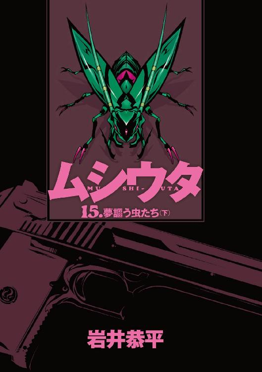

| ムシウタ 15.夢謳う虫たち（下） | |
| 岩井恭平 | |
| KADOKAWA / 角川書店 (2014) | |

ムシウタ
15．夢謳う虫たち（下）
岩井恭平

角川スニーカー文庫
本作品の全部または一部を無断で複製、転載、配信、送信したり、ホームページ上に転載することを禁止します。また、本作品の内容を無断で改変、改ざん等を行うことも禁止します。
本作品購入時にご承諾いただいた規約により、有償・無償にかかわらず本作品を第三者に譲渡することはできません。
本作品を示すサムネイルなどのイメージ画像は、再ダウンロード時に予告なく変更される場合があります。
本作品は縦書きでレイアウトされています。
また、ご覧になるリーディングシステムにより、表示の差が認められることがあります。
ムシウタ 夢謳う虫たち（下） ＣＯＮＴＥＮＴＳ
プロローグ
〝虫〟という超常の存在がいる。
十数年前に突如として現れたそれは、思春期の少年や少女に取り憑くとされた。夢──こうありたい、こうなりたいという人の思いを喰らう代わりに、宿主に様々な力を与えるのだ。それらは外見が昆虫に似通っているため、〝虫〟と呼ばれている。
〝虫〟に取り憑かれた人々は、虫憑きと呼ばれた。
「失礼します」
日本の主要な行政機関が集中する都市、赤牧市。
市内の住民に撤退警報が発令された同市の一角に、魅車八重子は佇んでいた。自衛隊の隊員が彼女に近づき、後ろ手に拘束していた指錠を断ち切る。
「特別環境保全事務局、副本部長──いや、元副本部長、魅車八重子」
初老の男が八重子の前に現れた。政府から派遣された、ある省の副大臣である。
「貴女にかけられた、あらゆる罪の容疑は除免された」
「そうですか」
八重子は微笑みながら、周囲の光景を見回した。
彼女がいるのは、半壊したドーム施設の前だ。数日前まではスポーツ試合やコンサートの会場として観客で賑わっていた場所が、荒れ果てた戦場跡と化していた。
ドームの周囲にある建物も破壊されており、自衛隊員と装甲車によって警戒線が張られている。その物々しい雰囲気は、テロリズムの被害に遭ったかのようだ。
しかし、ここで起きた出来事は、単純な破壊活動ではない。
「特別環境保全事務局は解体された。それは私が宣言した通りだ」
赤牧市が戦場となったのは、ある強力な虫憑きが暴走したことが原因である。
超種一号指定、〝Ｃ〟。
電力を操り、他者の記憶や夢を操作することが可能な虫憑きである。〝Ｃ〟はある実験の結果、人格を失い、与えられた使命を果たすためだけに行動する存在となった。
〝Ｃ〟の使命とは──全人類を虫憑きに変えること。
そのために虫憑きを生む原虫指定、〝始まりの三匹〟すらも吸収し、世界中を虫憑きで埋め尽くそうとしている。
今、八重子が目にしている、荒れ果てた赤牧市の光景。
それは〝Ｃ〟を討伐するために結集した虫憑きが返り討ちに遭い、逃走した痕跡であり──両者の勝敗が決定した証拠でもある。
これ以上、虫憑きが生まれることを拒んだ人々が、全人類を虫憑きにしようと目論む〝Ｃ〟に完全敗北したのだ。
虫憑きを極秘裏に捕らえるための政府機関、特別環境保全事務局もここで解散を命じられた。国の中枢を担う首脳陣が、〝Ｃ〟の能力によって洗脳された結果である。
事実上、この国はたった一人の虫憑きによって掌握されたといっていい。
超種一号〝Ｃ〟による、旧世代の虫憑きの粛清が始まる。
そして、新たな世界の創造が始まるのだ──。
「これからは新たに『国家全一記録局』を創設し、貴女を局長に任命する」
八重子に辞令を下す副大臣の頭部に、一瞬だけ金色の火花が走った。
人間の脳に伝わる電気信号を操り、記憶と行動を操作する。──それは〝Ｃ〟の得意とする能力の一つである。
「国家全一記録局──つまり全てが統一されていく過程を、記録しろと？」
八重子の長い髪が、横風に煽られて揺れた。細い目と涙ボクロが印象的な顔は、うっすらと砂埃で汚れている。完璧に着こなしたビジネススーツもだ。だが二十代後半という年齢に似つかわしくない落ち着いた物腰は、戦場跡にあっても微塵も変わらない。
「それが〝Ｃ〟の意思なのですね」
八重子は微笑んだ。
彼女はいつでも微笑みながら、ここまで歩いてきた。
科学者だった父親や金持ちの集まりである円卓会を利用し、〝虫〟が生まれるきっかけを作った時も。
あらゆる知略を駆使して特別環境保全事務局という組織を作り、虫憑きを管理、隠蔽することで支配することを思いついた時も。
虫憑きを世間一般から隔離する一方で、極秘裏に虫憑きを通じて〝不死〟に関する実験を続けていた頃も。
実験の過程で〝Ｃ〟という幼い虫憑きに目をつけ、人の身体や心、ひいては夢をコントロールする術を研究していた頃も。
己の能力を制御できなくなりつつある〝Ｃ〟に、全人類を虫憑きにし、夢を思い出させれば何度でも蘇るという〝不死〟に導くという使命を刷り込んだ時も。
常に彼女は虫憑きに対する愛情に溢れ、微笑んでいた。
それが、自分。
魅車八重子という、ただの一人の女だった。
「〝Ｃ〟は〝洪水〟を引き起こし、地上を洗い流すでしょう。〝鳩〟を放ち、旧世代の虫憑きが完全に消え去ったことを確認した上で──」
神が創世する過程を記した、旧き記述にある通りだ。
「〝Ｃ〟とともに〝方舟〟に乗り、新たな世界を創り出す。その物語を、私に書き留めろというのですね──〝Ｃ〟」
洪水が地上を洗い流し、白い鳩が大地の浄化を報せる。
そうして方舟に乗る選ばれた種が、新たな世界を創造していく──。
その顚末を書き残せ、と〝Ｃ〟は言っているのだ。
「あらゆる記録をデータとして残すよう教えたのは、確かに私です。でも、これではまるで、母親にかまって欲しい赤ん坊のよう」
荒れ果てた赤牧市の光景を眺めて微笑む八重子に、自衛隊の隊員がタブレット端末を渡した。画面にはすでに動画が映し出されている。
「これは特環の映像システム......？ 〝Ｃ〟が操る蘇生者たちが、ゴーグルを通して見ているライブ映像ですか」
激しく揺れる映像に、見覚えのある顔が映し出された。
「レイディー・バード」
火種一号指定、レイディー・バード。本名、立花利菜。
特別環境保全事務局に対抗するレジスタンス、〝むしばね〟を創設し、かつて特環と戦っていた虫憑きである。一年ほど前に壮絶な戦死を遂げたものの、ある者たちの意図によって蘇った人物でもある。
「これは......どこかの港のようですね」
〝Ｃ〟の追撃から逃走する際、レイディー・バードは少数の弱者を逃がすために大勢の仲間たちから離別した。だが、そんな彼女もすでに赤牧市を脱出したようだ。〝Ｃ〟からの刺客である蘇生者たちと戦っているが、大半を打ち倒し、少数の連れとともに大型の船舶に乗り込みつつある光景が映し出されている。
「海。──確かに〝Ｃ〟から逃れられる場所は、そこしかないでしょう」
さしもの〝Ｃ〟といえど、力の媒体となる電気のない海上では万能とはいえない。
猪突猛進型のレイディー・バードにしては、英断といえよう。
「しかし、レイディー・バード──幾つもの夢が絡みついているせいで〝Ｃ〟による蘇生は避けていたのに、目論見が外れましたね。あのような状態では、もし蘇ってもとっくに人格が崩壊していてもおかしくないでしょうに。......少々、違和感がありますね」
もう少し観察したいところだったが、早々に映像が別のものに切り替わった。
何者を映しているのかは、一目で分かった。
燃え盛る炎と、その中心で高らかに嗤う人影を見たからだ。
「異種一号、ハルキヨ。彼がいるのも港のようですね。見えるのはコンテナ船とトレーラー......積み込んでいるのは、ですか」
少々、意外な組み合わせだった。
最も強く最も自由な虫憑き、ハルキヨ。炎の魔人と呼ばれる彼と、始原の虫憑きともいうべきという人物に接点があったとは予想外だ。たとえ接点があったとしても、ハルキヨがを保護する動機が分からない。
「赤瀬川グループが手引きしたのでしょうか。そうではなくとも、彼ならの本当の価値に気づいたとしても驚きませんが......それ以前に」
八重子はただでさえ細い目を、さらに細める。
「私の見立てでは、ハルキヨはすでに成虫化の兆候があったはず。これだけの連戦を重ねれば、すでに成虫化しているはずなのに──」
八重子にとって、虫憑きは我が子も同然だ。虫憑きという種がこの世に生まれる瞬間に立ち会い、成長していく過程を常にそばで見守ってきた。
そんな自分が、虫憑きが成虫化するタイミングを見誤るとは──。
虫憑きと〝Ｃ〟の戦いは決したはずなのに、ここに来て違和感が連続している。
この小さな齟齬に、果たして〝Ｃ〟は気づいているのだろうか？
「ハルキヨも、海に逃亡成功......」
呟く八重子。映像がまた切り替わった。
「──また、港」
今度は明らかな集団戦だった。
防戦を強いられているのは、特別環境保全事務局と〝むしばね〟による混合軍だ。この国における虫憑きの戦闘要員が、ここに結集していると言っていいだろう。
一方、彼らを攻撃しているのは、〝Ｃ〟から送り込まれた蘇生者たちである。
激しい戦いが繰り広げられている港に、一隻の巨大なタンカーが停泊していた。それだけのものをこの緊急時に用意できる人物は、この国にもそういない。
「なるほど、海への逃亡を目論んだのは土師圭吾と赤瀬川七那というわけですね」
策略家の土師圭吾と資産家の赤瀬川七那が、旧世代の虫憑きたちを海へ逃がそうとしているのだ。
「土師圭吾が彼らを海に導いたというのなら、行き先はおそらく......」
敗走する虫憑きたちの逃亡先が頭に浮かぶが、それよりも気になることがあった。
八重子の視線は、画面に映る装甲車を捉えていた。
「〝眠り姫〟アリス──」
すでに忘れ去られた過去の決戦において、長き眠りについた一号指定。
彼女にまつわる全ての出来事がイレギュラーの産物であり、目覚めるなり再びこうして眠りについてしまったことすらも想定外といえる。
そんな人物が、今さら思い通りに動くとは思えないが──。
「......」
レイディー・バードやハルキヨの時と同じ違和感が、八重子を襲っていた。
根拠のない、ただの直感。
八重子は思案するも、映像が勝手に次の画面に切り替わってしまった。
次に映し出されたのは、小柄な少女だった。
八重子もよく知る虫憑きだ。
「秘種一号、〝ふゆほたる〟」
数年前、特別環境保全事務局を壊滅させかけた虫憑きである。
その少女は突如として現れ、八重子が積み上げたものを一瞬にして無にしようとした。当時はかろうじて捕獲に成功したものの、その驚異的な潜在能力は今も変わらない。
〝ふゆほたる〟は、現在における〝Ｃ〟に近い存在ともいえる。
新たな世界を創るために──今ある全てを破壊しうる力を持つ虫憑きである。
「新世界の創造に必要な条件は、すでに整っていると言いたいのですね、〝Ｃ〟」
画面を指で撫でながら、八重子は微笑む。
「ええ、しっかりと見届けてあげましょう。貴女が今いる〝方舟〟から〝鳩〟を放ち、〝洪水〟によって世界を選別する様を......」
また、画面が切り替わった。
そこに映し出されたのは、一人の少年だった。
「──最も警戒すべき虫憑きも、もういません」
八重子は、微笑みを消す。
〝虫〟が生まれた時から、そうだった。
彼は──否、彼らは必ず、それをしようとするのだ。
変えるでもなく、壊すでもなく、ただ八重子の望む形に世界が変わるのを──阻止しようと立ちはだかる者。
アリア・ヴァレィという〝始まりの三匹〟によって、生み出された虫憑きである。
「......〝かっこう〟」
ぽつり、と呟き。
八重子は、悪魔と呼ばれた虫憑きの成れの果てを指先で弾いた。
1.00 The others
この国の中心ともいうべき赤牧市は、謎の混乱状態に陥っている。
住民に対して避難命令が出されたというのに、その理由は未だに定かではない。マスコミも情報を集めているようだが、核心を摑めずにいるのが毎日の報道から分かる。
突然の事態に、国全体が浮き足立っていた。
だが平凡な高校生にすぎない自分──大樹にとっては、関係のないことだ。
しかも彼の住む街は、赤牧市から遠く離れた地方にある。気になることといえば、何があってもいいようにと学校を休むクラスメートの数が増えていることくらいだ。
いや──実を言えば、気になることはもう一つあった。
ここ数日、毎晩のように虫憑きという人々の夢を見ること。
立花利菜。
ハルキヨ。
そのような名前の虫憑きたちの夢だ。
なぜ大樹がそんな夢を見るようになったのか、理由は分からない。
そして今、学校からの帰り道で──。
「俺が見る夢の意味を......教えてくれる？」
彼を待ち伏せしていた少女が、その答えを教えると言い出した。
「ええ」
頷いたのは、五十里野きらりと名乗った人物だ。前髪を斜めに切り揃えた美人で、年齢は大樹と同じくらいに見える。どういうわけか、大樹と同じ高校の制服を着ている。
「な、何言ってんだ？ なんで、あんたがそんなこと──」
「あなたがどんな夢を見たのか......私は知ってるから」
彼女がはじめて大樹の前に現れたのは、数日前のことだ。その時は記者とかいう外国人の白人男性もいっしょだった。彼女は自分が通訳であると自己紹介した。
「俺が見た夢を──知ってる？」
外国人の記者を伴った五十里野きらりが、大樹の前に現れた理由。
それは取材とのことだった。
なんでも大樹の従兄弟──薬屋大助とかいう人物に関わることだという。
それが今や、その取材とやらも関係ない話になってきた。五十里野きらりは大樹にしつこくつきまとった挙げ句、今度は彼の夢診断をしてくれるらしい。
警戒して身を引く大樹に向かって、五十里野きらりが言う。
「立花利菜と──ハルキヨでしょう？」
「......！」
大樹は息を吞み、硬直した。
完璧に、核心を突いた指摘だった。
大樹はこれまで大きなトラブルもなく、平凡な人生を歩んできた。悩みといえば思うように伸びない進学校の成績くらいだ。当然、虫憑きとかいう人々の存在は、都市伝説程度の認識しかなかった。
それが突然、最近になって虫憑きたちの夢を見るようになったのだ。
夢の中で、彼らは〝Ｃ〟という敵と戦っていた。
戦いを挑み、敗れ、逃げながらも、なお激しく戦い続けていた──。
「──高城大樹。両親は健在、希海と凛々絵という二人の妹がいる」
唐突に、きらりが言った。ぎょっとする大樹。
「市のデータベースによると犯罪歴なし。大きな病歴もなし。ただし幼少時に脇見運転の乗用車による接触事故で骨折、その際に少額の医療保険の使用記録あり。高校の内申記録では成績は中の中、素行に問題も見られない......」
淡々と語る声を聞いて、大樹は背筋が寒くなっていくのを感じた。
まさか大樹のことを、調べたというのだろうか？
そういう行為は、紛れもない犯罪のはずだ。第一、自分自身の人生を他人に盗み見されることが、これほど気持ちの悪いことだとは思わなかった。
「こんなに平和な、あなたの人生を乱すつもりはないの」
ここまで不気味な行動をとっておいて、五十里野きらりが臆面もなく言い放つ。
「ただ、それはあなた自身で選択した上で、手に入れるものだと思う」
「は......はあ？ な、何なんだ、あんた？」
彼女が言っていることの意味が、ちっとも分からない。
突然、彼の前に現れ、彼のことを調べ、彼に選択しろと言ってのける。
今の大樹には、はっきり言って眼前の少女が危険人物以外の何者にも映らなかった。
「さっきも言ったけど──あなたの見た夢を詳しく教えてくれない？ 私はきっとあなたが抱えてる疑問や不安を解決する手伝いができるわ。それに......」
五十里野きらりが、不意に上空を見上げた。
「あの鐘の音が、あなたにだけ聞こえない理由も教えられると思う」
鐘の音？
先ほど、クラスメートも鐘の音が聞こえると言っていた。
とても綺麗な音だった、と。
「や、やめてくれ」
平凡な高校生にすぎない大樹には、それが限界だった。
得体の知れない少女の言動が恐ろしくなり、足早に歩き出す。進路に立ち塞がる五十里野きらりの横を通り過ぎる。
「立花利菜とハルキヨの夢を見たなら、きっと彼女の夢も見るわ」
すれ違い様に、きらりが言った。
「〝眠り姫〟、アリス」
ピクリ、と大樹の肩が震えた。
夢の中で何度か出てきた名前である。
「う、うるさい。もう関わらないでくれ......！」
大樹は顔を歪め、ついに走り出した。
そんな彼の背後から、五十里野きらりという謎の少女の悲しげな声が聞こえた。
「彼女は──」
走り去る大樹と、その場から動かない五十里野きらり。
そんな両者の間を──。
「結局、目を覚ますことはなかったわ......」
囁くような少女の呟き声が通り過ぎて、消えた。
1.01 アリス The last
彼女は、大きな波止場に立っていた。
陸には漁獲を陸揚げするためのクレーンやリフトが点在し、船着き場には船舶が係留している。橙色に染まった空は薄い雲が覆いつつあり、夜の帳が下りようとしていた。
そんな敷地内で、大勢の人影が激しく動き回っていた。
漁師や市場で働く人々ではない。
虫憑きである。
血みどろになりつつも密集して防戦しているのが、かつて特別環境保全事務局、そして〝むしばね〟という組織を構成していた虫憑きたちだ。──〝Ｃ〟という災厄を殲滅するために結集し、結果として敗北、撤退するという末路を辿った者たちでもある。
一方、彼らを取り囲んでいる虫憑きたちは、〝Ｃ〟から追っ手として送り込まれた刺客たちだ。一度は〝虫〟を失って欠落者となり、あるいは死してなお、己の夢を〝Ｃ〟によって操作され、蘇生し、操られている〝蘇生者〟である。
海に逃げようとする虫憑きたち。
追撃して根絶させようとする蘇生者たち。
連戦を続ける彼らは地と泥で汚れきっており、どちらが亡者なのかも区別がつかない。
「私が強ければ──それでいいでしょう？」
彼女は微笑み、虫憑きによって守られた輸送車から下りた。慣れ親しんだマフラーと、手に握りしめた銀色の槍の感触が、彼女の内にある戦闘意欲をかき立てる。
鏡で確認せずとも分かる。
今の彼女は、自らの〝虫〟である銀色のモルフォチョウと同化して、全身に銀色の模様を浮かべているのだ。長い闘病生活で青白くなった顔や細い手脚が銀色に輝き、長い髪が銀色の槍から噴き出す鱗粉によって横になびいている。──かつて病によって他界した、あの時と全く同じ姿だ。
そんな彼女の眼前に立ちはだかったのは、全身を赤黒い錆色で染めた少年だった。
「今のお前は──アリスじゃない」
特別環境保全事務局の装備であるロングコートはボロボロに破れ、乾いた血と焦げ痕によって変色している。顔に装着し直したゴーグルはヒビ割れ、片手にぶら下げた自動式拳銃には彼の〝虫〟であるカッコウムシがとまっている。
彼女はその少年が何者なのか、知っていた。
薬屋大助──〝かっこう〟。
すでに〝虫〟を殺され、欠落者になったはずの虫憑きである。
「それじゃあ私は、誰なのかしら」
死人であるはずの彼女。
欠落者になったはずの〝かっこう〟。
ここにいるはずのない二人が、こうして向かい合っている理由は分からない。
先ほどから、やけに周囲が静かなのも不自然だ。港で戦う虫憑きたちの姿は見えるのに、睨み合う二人の元まで音は届かない。
同じ場所にいながらにして、別々の世界にいるかのようだ。
実際、何者かの思惑によって作られた状況なのだろう。
だが彼女にとっては、どうでも良いことだ。
「私が誰なのか、貴方は知ってるはずよ」
言い、彼女は背後を一瞥した。
自衛隊から奪った輸送車の荷台に、一人の少女が横たわっていた。毛布と厚手のジャケットをかけられて眠っている。
〝眠り姫〟アリスである。
今、港にいる虫憑きたちは自分たちが生き残ること以上に、その少女を死守することを最優先事項として戦っている。
「貴方だけは......ね。そうでしょう、薬屋大助さん？」
「アリスの親友で、モルフォチョウの最初の宿主......花城マリ」
再び前を向くと、〝かっこう〟が掠れた声で言った。なぜ彼がすでに満身創痍なのかは知らないが、立っているのがやっとのようだ。
彼女──マリはニヤリと笑った。
そう、彼女はかつて病死してなおモルフォチョウに宿り、親友であるアリスを守り続けたという過去がある。その事実を知る者は、もう数えるほどしかいないだろう。
いや、過去も未来も関係ない。
ここがどこであろうと、今がいつであろうと、アリスがそこにいるならば──。
マリが、アリスを守る番人となる。
それがマリの使命であり、たった一人の友人がくれた友情に対する答えなのだ。
しかし、そんなマリを見て〝かっこう〟が言った。
「......でも、今のお前は花城マリでもない。見た目はともかくな」
ピクリ、とマリは槍の穂先を動かした。挑発的な笑みを浮かべる。
「それじゃあ、今ここにいる私は一体、誰なのかしら？」
「......」
「そもそも、そう言う貴方こそ──本当は、何者なの？」
マリの問いかけに、〝かっこう〟は答えない。
「モルフォチョウを通して見ていたわ。──貴方は、欠落者になったはずでしょう？」
炎の魔人によって中央本部の地下要塞から救出されてから、全て見ていた。〝かっこう〟という虫憑きが、とっくに虫憑きの戦いからリタイアしたということも知っている。
「それなのに貴方は、ここにいる。不思議な空間ね......これも〝Ｃ〟の攻撃なの？」
向かい合うマリと〝かっこう〟以外、港にいる全ての人々が戦っていた。
音の聞こえない死闘を繰り広げる光景の先に、巨大なタンカー船が係留しているのが見えた。ここに到る過程も見ていたので、その船が虫憑きたちにとって〝Ｃ〟の追撃から逃れる唯一の手段だということも知っている。
「〝霞王〟や寧子さん、それに姫子ちゃんも、まだ戦い続けてるのね」
死にものぐるいで戦う虫憑きの中には、彼女が知っている顔もあった。
「まだ、戦って......」
無意識に、槍を握る腕に力が入る。
すぐそばにいるのに、誰にもマリや〝かっこう〟の姿が見えていないようだ。
「──俺たちが今、ここにいるのは〝Ｃ〟の攻撃のせいじゃない」
力なく佇んだまま、〝かっこう〟が言う。
「お前が本当に花城マリなら、それくらいすぐに気づいたはずだ」
「......」
マリは無言で、後方を一瞥した。もう一度、背後で眠るアリスを見る。
「強い虫憑きが必要だから、アリスを起こそうとしているのよね？」
「......ああ、そうだ」
「私はマリよ。強い虫憑きが必要なら、私が戦うわ」
彼女は〝かっこう〟を睨み、身構える。
「だから──アリスを起こそうとしないで」
彼女が手にした槍から、大量の鱗粉が噴き出した。荒れ狂う鱗粉の奔流に圧され、傷だらけの〝かっこう〟がふらつく。
「お前は、強い親友のフリをしてるだけだ......」
しかし〝かっこう〟は倒れない。
「流星群の夜の戦いでも、そうだったな。威勢良く〝大喰い〟に挑んだはいいが、目の前で仲間が倒れたくらいで怖じ気づいて逃げ出そうとした。──今のそんなザマじゃ、叩き起こしても、また逃げるだけだろうな......」
「......！」
ギクリ、と顔を強ばらせるマリを、ゴーグルの奥から〝かっこう〟の瞳が凝視する。
「花城マリはもういない。いい加減、親友にすがるのはもうやめろ」
「貴方は──そういう貴方こそ、どうなの？」
マリの胸中に怒りが湧いた。その怒りが親友であるアリスを愚弄されたせいか、それとも他の感情を押し隠すためなのか、自分でも分からない。
「その無様な姿は、なに？ どこで何と戦ったのか知らないけれど、惨めでみっともなくて、あまりに哀れだわ。──アリスがいない間、何をしていたの？ アリスは貴方を信じていたのに......何もできなかったとでもいうの？」
今度は〝かっこう〟が、押し黙った。
二人の間に沈黙が落ち──やがて小さな吐息とともに、少年が口を開く。
「俺なりに──ああ、俺らしくもなく、お前を見つけ出すまでに全部終わらせようと、〝始まりの三匹〟と戦ったりもしたよ。でも、勝ったことは──」
〝かっこう〟が吐いた息が、疲労によるものだと信じたい。
それがもし、ため息だとしたら──あまりに、悲しすぎる。
かつて出会い、別れ、このような形であれ、再び邂逅した二人。
長い時を経た再会の場で漏らす吐息は、涙を流すよりもマリの胸を締めつけた。
「ない。一度も、ない」
「──」
自分の中に湧き上がった感情を、何と呼ぶのだろう？
怒り。あるいは期待を裏切られた落胆。単純に言うならば──絶望。
足元が崩れ落ちたかのような落下感と、目の前が真っ暗になりそうな悲愴感に、マリは今にも叫び出しそうになった。歯を食いしばって、激昂を押し殺す。
「アリスは言ったはずよ。夢の続きで起こして──って」
輸送車の中で眠る親友を見て、マリは言い放つ。
その寝顔は、あまりに穏やかだった。
親友のマリでなくとも、そんな場所で揺り起こすのは残酷だと感じるだろう。
「どうして......？」
一言も言い返さない〝かっこう〟を、激情にまかせて罵る。
「愛理衣は、もういないんでしょう？」
堀内愛理衣。
かつてアリスに懐いていた、その幼い虫憑きは──自らの能力の暴走によって人格を失い、今や超種一号〝Ｃ〟として最大の敵へと変貌してしまった。
アリスが目覚めるということは、彼女の手で堀内愛理衣を倒さなければならないということだ。変わり果ててしまったとはいえ、妹のように可愛がっていた少女をだ。
「〝霞王〟たちも、負けてしまったんでしょう？」
〝Ｃ〟に挑み、敗走する〝霞王〟ら、虫憑きたち。
その数は拠点にしていた赤牧市のドームに集まった時と比べて、半分以下にまで減っていた。生き残った虫憑きたちも消耗しきっており、目の下に隈を浮かべながらも、亡鬼のごとき形相で地獄のような戦場を駆け巡っている。
「貴方も──貴方でさえ、欠落者になってしまったんでしょう？」
マリの眼前にいる〝かっこう〟が実体でないことは、とっくに分かっている。
あれほど強かった〝かっこう〟も──漆黒の悪魔と畏れられ、一時はアリスのパートナーだった頼れる虫憑きも、ついに欠落者となってしまった。
「アリスがここにいるのも、カノンという子を生贄にしたから──」
かつての決戦によって一号指定となりながらも、アリスは長い眠りについた。
その原因となったのは、たった一つの絶望を封印するためだった。
もし再び彼女が目覚めるとしたら、その絶望を防ぐ手立てが出来た時だと思っていたのに──そうではなかった。単にアリスの身代わりを差し出したにすぎない。
「こ、これが......そうなの？」
マリは〝かっこう〟の幻影に向かって、問いかける。
「これがアリスが思い描いた夢の──続きだっていうの？」
今となっては忘れ去られた戦いで眠りについたものの、アリスはそれでも希望を抱いていた。一つの絶望とともに眠ることになっても、〝かっこう〟やハルキヨら強い虫憑きがいる。そして夢を叶えようと戦い続ける虫憑きたちが、大勢いる。
そう信じていたからこそ、アリスは眠りについたはずなのに──。
目覚める頃には、全ての戦いが終わっていることを夢見ていたのに──。
「虫憑きを救いたい。アリスはそう夢見てたんだったな」
〝かっこう〟が思い出したように嘆息し、言い放った。
「そうだ。これが──お前の夢の続きだ」
「──」
マリの全身から、力が抜けていくのが分かった。
目を見開き、眼前にいる少年の言葉を自らの中で何度も反芻してから──。
「......」
ゆっくりと、槍を構える。
輸送車の前に立ちはだかり、〝かっこう〟からアリスをかばう。
「やめろ」
〝かっこう〟が言う。
「俺は何も出来なかったことを謝りたかったんだ......だが、お前がそういう行動をとるなら──約束を果たさなきゃならなくなる」
「......起こさせない」
マリは呆然としたまま、首を左右に振る。
「こんな状況は、アリスが望んだ〝続き〟じゃないわ」
「いいや、お前が言ったんだ、アリス......」
一方的に言う〝かっこう〟の拳銃に、カッコウムシが沈み込んだ。躰を変形させて触手と化した〝虫〟が、拳銃と〝かっこう〟の身体と同化していく。
「夢の続きで起こせ......と」
銀光が閃いた。
マリは地面を蹴り、〝かっこう〟目がけて槍を突き出す。それだけの単純な動作が一瞬にして両者の距離をゼロにし、吹き荒れる銀粉によって地面と海を真っ二つに裂いた。
激しい地響きと水飛沫が港を襲うが、周囲で奮闘する虫憑きたちに反応はない。やはりマリと〝かっこう〟がいる空間だけ、元の世界から隔離されているようだ。
「......ッ！」
〝かっこう〟が身をよじって槍を避け、銃口をマリに向けた。
マリは冷静に穂先で円を描く。拳銃を持つ〝かっこう〟の腕を押し下げ、そのまま彼の両脚をすくい上げた。
「ぐあっ......！」
転倒して地面に叩きつけられる〝かっこう〟を、鱗粉による追い討ちが襲った。銀色の輝きが少年を中心にして弾け、アスファルトの地面が陥没する。
「こんなに弱くなったの......？ 薬屋大助さん──」
あまりの手応えのなさに、絶句するマリ。
倒れた〝かっこう〟が、腕を持ち上げた。マリに向かって拳銃の引き金を引く。
マリは横に一歩だけ移動し、あっさりと銃弾をかわす。
彼女が離れた隙に、〝かっこう〟が立ち上がった。舞い上がった水飛沫と土煙の中に飛び込み、マリの視界から消える。
「私のモルフォチョウに感知能力があることも、忘れてしまったのね」
マリは手にした槍に導かれるまま、振り向きもせずに腕を右側に振るった。
水と粉塵のカーテンが引き裂かれた。 る銀色の鱗粉が、その向こうに潜んでいた〝かっこう〟を捉える。
る銀色の鱗粉が、その向こうに潜んでいた〝かっこう〟を捉える。
「──ッッ！」
貨物倉庫の壁を粉砕し、少年がはるか遠方まで弾き飛ばされる。
マリは静かに跳躍した。人間離れした脚力で倉庫の残骸を次々に跳び移っていく。
「欠落者になって、しかもそんなボロボロの状態でアリスを起こそうだなんて......」
〝かっこう〟を見つけた。瓦礫に半身を埋めている。
「アリスが眠ってから、こんなにも酷い〝続き〟にしておいて......！」
高々と跳躍し、落下する勢いのままに銀色の槍を〝かっこう〟に叩きつける。
銀色の輝きが弾け、周囲の建造物が放射状に倒壊した。
「何もかも全部、アリスに押しつけようとしてるだけじゃない！」
視界を埋め尽くす銀光に、飛び散る赤い飛沫が混ざった。
「──ああ、そうだよ」
〝かっこう〟が拳銃のグリップの底で、槍の穂先を受け止めていた。だが勢いを殺しきれず、擦り切れたコートが完全に破れ、眉間から鮮血を流している。
「俺は何もできなかったから......謝りたかったんだ」
不甲斐ない少年の態度に、マリは失望と怒りで目を吊り上げた。
だが足元から放たれた蹴りを受け、マリは顔を歪める。
「うっ──」
「お前がそんなザマじゃなかったら、の話だけどな」
飛び退いたマリを睨みながら、ふらりと立ち上がる〝かっこう〟。
「お前こそ、理由をつけて目覚めたくないだけだろ。花城マリの物真似までして......」
マリは〝かっこう〟を睨み返す。
「私はマリよ」
「いいや、眠りについた時と変わらない。何も考えてないバカで、大好きなお友達が倒れていくのを見ただけで怖じ気づくような......甘ったれたガキだ」
同じ一号指定であり、同化型の虫憑きである二人が顔つきを変えた。
マリは全身に浮かぶ銀色の模様を輝かせ、悠然と槍を構え直す。かつて〝始まりの三匹〟の一つである〝三匹目〟をして、最強と言わしめた力が銀槍に秘められている。
一方の〝かっこう〟は──見る影も無い。ロングコートは胸元が大きく裂け、漆黒の悪魔と呼ばれていた頃の威圧感は微塵も感じられない。
「──」
「──」
対照的な両者の戦いは、無言で再開した。
その戦いは、マリにとって思ってもみなかった展開の連続だった。
まず予想外だったのは──〝かっこう〟があまりに弱すぎるということ。
「諦めて、おとなしく消えなさい......！」
マリの攻撃をかろうじてかわすのが、〝かっこう〟の精一杯だった。一体どこでそこまでの重傷を負ったのか、文字通り地面に身を投げ出して攻撃を避けたかと思えば、立ち上がるだけで苦痛に顔を歪めている。
思い出したように銃弾を放って反撃するも、マリを守る鱗粉の壁に跳ね返される。
何度か、マリの攻撃が直撃したこともあった。
そのような状態では、すぐに〝かっこう〟が倒れるだろうと思った。
だが、そこでまた予想に反した光景がマリを困惑させた。
倒れない──。
とっくに限界を超えているはずなのに、少年はマリに近づくのをやめないのだ。
「止まりなさい......！」
ジリジリと、少しずつ。
血塗れの亡霊のごとき〝かっこう〟が、マリに向かって歩み寄る。
いや、彼が向かおうとしているのは、彼女の背後──。
今も眠り続ける少女がいる、輸送車である。
「アリスは起こさせないわ......！」
ついに最も予想外の出来事が起きた。
それは同時に、当然ともいえる結末。
マリの槍を──とうとう〝かっこう〟が避けきれなくなったのだ。
「──」
彼女が突き出した槍が、〝かっこう〟の腹に深々と突き刺さっていた。
あまりに単純な攻撃で、マリどころか〝かっこう〟自身も避けられると思っていたはずだ。その証拠に、槍が刺さった状態で二人とも凍りついたように動けずにいた。
致命傷。
いや、致命傷というのなら、戦う前から負っていた傷がすでに──。
「......！」
マリは、ビクリと身体を揺らした。
〝かっこう〟が自らに突き刺さった槍の柄を摑んだのだ。
そのままマリを押し出すようにして歩き出す。
「は──はなしなさい！」
マリは抵抗するも、自分の腕に力が入らなかった。
〝かっこう〟が歩を進めるごとに、槍が深く少年に刺さっていく。
「はなして......！」
「──流星群の夜の戦いみたいに、また仲間が全滅するのが怖いのか？」
槍ごとマリを押して歩きながら、〝かっこう〟がかすれた声を漏らした。
ギクリと顔を強ばらせるマリ。
「それとも目を覚ました途端、またモルフォチョウが成虫化するのが怖いのか？」
俯いたまま進む少年の腹からは、大量の鮮血が流れ続けている。
「あの戦いまでお前は虫憑きですらなかったんだから、無理もないけどな......」
瓦礫の上を進む〝かっこう〟を止められず、かといって止めを刺すこともできないマリは、いつの間にか──。
輸送車の前まで、押し返されてしまっていた。
「やめて──」
震えるマリの腕が、軽くなった。
〝かっこう〟が槍から手を離したのだ。穂先が抜ける嫌な感触が腕から伝わる。
「もう──虫憑きがいなくなるのを、見るのは嫌なの......」
涙を浮かべ、マリはそれでも〝かっこう〟を引き止めようと腕を伸ばした。
少年は、そんな彼女に──見向きもしなかった。
慈悲も哀れみもなく、マリを置き去りにして輸送車に乗り込む。
「──まだ、生き残ってる虫憑きがいるんだ」
両膝をついて、床の上で眠る少女の前でうなだれる〝かっこう〟。
その姿はまるで、偶像に向かって贖罪を乞う巡礼者のようだ。
「そいつらを──たとえ一人しか生き残らなかったとしても、そいつを救うのがお前の夢なんだろ？」
「......！」
虫憑きを救いたい──。
それが、アリスを虫憑きにした夢。
親友のアリスが──否、自分がそう願った時、それがどれほど困難で、残酷な夢なのかなど考えもしなかった。
「何もできなかった俺が言う資格はないが──これも、お前の夢の続きなんだ」
自分に懐いてくれていた堀内愛理衣が、倒すべき敵となった。
頼りにしていたパートナーの少年も、もういない。
今いる虫憑きも負け続きで、今にも全滅しそうである。
「逃げるな」
そんな現状が、アリスの夢の続きというのなら──あまりに酷すぎる。
ここから虫憑きを救うために、もう一度、目を覚ませというのなら──あまりにも希望がなさすぎる。
「〝虫〟に負けるな」
それでも彼は、彼女を起こそうとする。
目覚めのキス──とまではいわない。
優しく揺り起こしてくれればそれでいいのに、彼は眠っている彼女の横っ面をひっぱたいて、無理矢理にでも起こそうとする。
「起きろ、アリス」
少年のその言葉は、懇願のように聞こえた。
あるいは、自分の無力さを謝っているようにも聞こえた。
「一人じゃどうしようもないから、お前は仲間を集めようとしたんだろ？ 目を覚ませば──きっと、お前の仲間は大勢いる」
ぺしん、ともう一度、少年が眠る少女の頰をはたいた。
仲間。
今も港では〝霞王〟をはじめとする虫憑きたちが蘇生者と戦っていた。彼女たちは傷つき、疲弊しきっているが──諦めてはいない。
眠りにつく前と、何も変わらない。
いつか自分の夢を叶えようと戦う、虫憑きという人々がそこにいた。
「自分の夢は、自分で叶えろ......」
少女の頰をはたく少年の声が、か細くなりつつあった。
それでも執拗に少女をはたき続ける〝かっこう〟が──。
「──ぐっ」
腹を押さえ、身体をくの字に折った。
槍で受けた傷に耐えきれなくなったわけではない。
あるいは、それ以上に痛そうな少年の腹に、白い拳が突き刺さっていた。
眠っているはずの少女が腕を動かし、少年の腹を殴ったのだ。
「......アリスパンチ」
呟いたのは、しかし目をつむったままの少女ではなく花城マリの姿をした彼女だった。
「もういいわ......やりすぎよ」
少年が憎らしそうに、こちらを見た。
二人は無言で睨み合う。
かつて共に戦い、別れた二人。
もし再会を果たすことがあれば、何を語ろう？
お互いに多くの言葉を用意していたはずだ。少年のほうはどうか知らないが、彼女にはそれを考える時間が充分すぎるほどあった。
だが亡き親友の姿を借りた今の彼女は、それらを口にしたりはしない。
少年のほうも、何も語らなかった。
だから、彼女は──言うべきことだけを、口にする。
「──私を、呼びなさい」
何者が用意した世界なのかは分からないが、時間切れが近いようだ。
眼前にいる〝かっこう〟の姿が、空気に溶け込むように透けつつあった。
一方、花城マリの姿をした自分と、少年を殴り返すも眠ったままの自分は──。
〝眠り姫〟アリスの心と肉体は──今はまだ、どちらも完全に覚醒していない。
だが、もう迷いはしない。
今も彼女を多くの仲間たちが待っててくれていると、かつてのパートナーが言うならば──それを信じて、目を覚ますことができるかもしれない。
「そうすれば、私は起きるわ」
〝かっこう〟が口元を緩めた。
「ああ......きっと、呼ぶ」
「言っておくけれど、私の呼ぶ声の中には貴方もいなきゃダメよ？」
すかさず彼女が言うと、少年が笑みを消した。
「俺は......」
傷つき、疲れ切った吐息を漏らす少年の姿は今にも消えそうだ。
彼女は、言う。
「私は二人の一号指定と、限られた数の虫憑きしか集められなかったわ」
「......」
「でも、本当に全員集められるのは──」
その先の言葉が、ちゃんと相手に届いたかは分からない。
だが消えゆく間際、少年が再び弱々しい笑みを浮かべたのは──彼女の声が聞こえたからだろう。
そう思って──いや、そう信じて。
アリスは今ひとたび、束の間の眠りについた。
1.02 The others
超種一号〝Ｃ〟は現状を完全に把握していた。
電力や電気信号を操る能力によって、この国に存在するあらゆるカメラ映像、さらには自らの操り人形と化した蘇生者たちが送る映像によって、それを見ていた。
旧世代の一号指定。
レイディー・バード、ハルキヨ、〝眠り姫〟アリス。
三人の一号指定と仲間の虫憑きたちがそれぞれ別の場所から、しかし申し合わせたように同時に大型船に乗り込み、海へ去っていく映像が〝Ｃ〟の元に送られた。
彼らは〝Ｃ〟の追撃を逃れて、大海に脱出を果たした。
〝Ｃ〟のシミュレーションでは、高確率ですでに全滅しているはずの虫憑きたちだ。
旧い世界の失敗作ともいうべき彼ら。
〝Ｃ〟によって〝不死〟になることを拒んだ者たち。
それどころか彼らは、機を狙って再び〝Ｃ〟を消し去ろうとするだろう。
彼らがどこへ向かおうとしているのか確かめようにも、海上には彼らを監視するカメラなど存在しない。人工衛星を使って位置を捕捉しようと試みてみたものの、不可能だった。どの船にも敵から身を隠す迷彩能力を持つ虫憑きが乗り込んでいるようだ。
彼らがどこかで合流しようとしているのは明らかだ。
そこが彼らにとって、反撃の地となる。
体力を回復させ、再び〝Ｃ〟に挑むつもりなのだろう。
そのためにはまず〝Ｃ〟の本体がいる、此の地を探し出そうとするに違いない──。
「......」
〝Ｃ〟の本体ともいうべき肉体は、楽園に居た。
〝方舟〟である。
選ばれた〝不死〟の虫憑きだけで満たされた新世界──その始まりとなる地。
半径数キロメートルほどの広大なその場所は本来、別の呼び名があった。だが超種一号〝Ｃ〟の産みの親ともいうべき魅車八重子が〝方舟〟と改名したのだ。
〝方舟〟の奥深くに置かれた、大きな寝台に〝Ｃ〟は座っていた。
一糸纏わぬ肢体は、淡い金色の輝きに包まれていた。真っ白で細い肉体にかかった髪の一本一本にまで、彼女の能力である電力が行き届いている。各地にいる分身が纏っているマントやティアラもない。吸収した〝浸父〟の能力が具現化したそれらは、〝方舟〟という安息の地にいる今の彼女には必要ない。
楽園の奥底で、〝Ｃ〟は敵の逃亡先をシミュレーションし続ける。
彼らは一体、どこへ逃げ込もうとしているのか？
この国において電子化された地理情報や事件、出来事を総ざらいし、何十万、何百万通りもの演算処理を繰り返していく。
〝Ｃ〟が旧世代の虫憑きの逃亡先を見つけ出すのが先か。
それとも敵が〝Ｃ〟を見つけ出すのが先か。
その勝敗は九割以上の確率で、〝Ｃ〟が勝利すると予想され──。
実際に、その通りの結果が出た。
『──青播磨島』
〝Ｃ〟は呟いた。
海上に浮かぶ、小さな島である。
その存在はすでに国中の情報から抹消されていたため、見つけ出すのに手間取った。
青播磨島というその地を消し去ったのは──特別環境保全事務局。そこで起きた凄惨な事件について記録を消し去り、島そのものの存在も隠そうとしたようだ。
なぜならば青播磨島で悲劇を引き起こした張本人こそ特別環境保全事務局であり、魅車八重子という人間だったからである。
かつてそこには〝始まりの三匹〟の一つである〝三匹目〟という化け物がいて、それを倒すために島民のほとんどを巻き添えにした虐殺が行われた。
特別環境保全事務局のデータベースにのみ、最高機密としてかろうじて記録が残されていた。〝Ｃ〟の人格である堀内愛理衣が、以前に同じ情報を検索した痕跡もある。
敵が向かうであろう予測地点を割り出したことで、〝Ｃ〟は次の過程に入った。
失敗作を殲滅するために、刺客を送り込む。
そして──。
『〝鳩〟を、放ちましょう』
あらかじめ決められたプロセスを、予定通りに進める。
計算通りに計画が進まないことも、もちろん想定していた。しぶとい旧世代を地上から消し去るための補完計画もいくらでも用意している。
〝Ｃ〟は己の使命を果たす。
旧世代の虫憑きに代わり、新たな〝不死〟の虫憑きに満たされた世界を創造する。
『そして〝洪水〟が地上を浄化し、新しい世界を創るのです......』
新世界の中心となるであろう、〝方舟〟で──。
小さき創世主は、人形のような無表情で呟いた。
1.03 The others
その鋼鉄の箱は、白波を切って大海を前進していた。
大型の石油タンカーである。
積載重量にして数十万トンというマンモス船の船上に、しかし乗組員の姿は一人もない。船首近くの甲板に、亡霊のような顔色をした青年が寝そべっているだけだ。
「......」
ひょろ長い両手両脚を投げ出し、真っ青な空をぼんやりと眺める青年。
土師圭吾。特別環境保全事務局の本部長に任命された直後、〝Ｃ〟の陰謀によって組織そのものが国から切り離されてしまった男である。彼の下にある船倉では、大勢の部下が身体を休めているはずだ。〝Ｃ〟に挑み、敗走した虫憑きたちである。
圭吾は考えをまとめようとして甲板に出たのだが、疲れた身体に朝日が染みた。
つくづく自分は日陰が似合う存在なのだと思い知らされる。
「......よく眠れたかい？」
控えめに近づく足音に気づき、圭吾は口を開いた。
かつて毎日のように聞いていた、懐かしい響きだ。その少女は目が不自由で足元がおぼつかないくせに、いつも必要以上に静かに歩こうとするのだ。
まるで彼女自身が彼にとって、負担であるかのように。
これ以上、迷惑をかけないように。
そんな的外れな心配をして──それでも彼を頼りにしてくれるのだ。
「うん」
圭吾の実の妹、土師千莉が頷き、彼の横に座った。
千莉は圭吾に負けず劣らず、噓つきだ。
彼女は希少な感知能力者である。タンカーが何者かによって追跡されていないか一晩中ずっと警戒していたことを圭吾は知っている。よく眠れたなんて噓っぱちである。
思えば彼ら兄妹は、ずっと噓の中で生きていた。
圭吾は千莉が虫憑きであることを隠し、千莉は弱っていく身体を偽って、兄の前ではいつも気丈であろうとした。
千莉が虫憑きであることを自覚してからも同じだ。
圭吾は意識不明であるように装い、千莉は兄のいない世界で虫憑きとして強く振る舞いながら生きてきた──。
そんな兄妹が、二人きりで落ち着いて会話をするのは実に久しぶりのことだ。
圭吾が戦線離脱する前──実に去年のクリスマス以来のことである。
「警戒は他の感知能力者に任せて、ゆっくり寝なさい。船長室を空けてあるから」
「そんなの職権濫用だよ。みんな冷たいタンクとかで寝てるのに」
「久しぶりに、ぼくの夢でもどうだい？ 足しにもならないだろうけどね」
「ううん。......私はもう、誰の夢も食べないから」
首を左右に振る妹を、圭吾は寝転んだまま見上げる。
髪が長くなった。身長も少し伸びたようだ。それらの小さな変化は、いっしょに暮らしていた圭吾にしか分からないだろう。
同時に、実の兄だからこそ分かることがあった。
疲れ切っているはずなのに、潮風を受ける千莉の横顔は──生気に溢れていた。戦いなどとは無縁の平和な生活の中で、安静にしていた頃よりもだ。
その理由は、分かっている。
圭吾が重体を装って陰から見守っていた時間を全て使い、ようやく納得した理由だ。
納得した途端、何もかもを投げ出して死にたくなったことは──おそらく一生、誰にも告白することはないだろう。
「もう言ったかもしれないけど──本当に強くなったね、千莉」
妹の顔を見つめ、心からの本音を口にする。
「......！」
千莉が息を詰まらせ、目に涙を浮かべた。
甲板をまさぐる少女の手が、彼の手を探り当てた。強く握りしめる。
「お兄ちゃん......本当に、そこにいるんだよね？ いっしょにいるんだよね？」
「ああ、いるよ。大丈夫、ぼくらは二人とも生きてるし、いっしょにいるよ」
手を握り返し、互いの温もりを確かめ合う。
再会した二人とも、言いたいことや尋ねたいことは数え切れないほどあった。
特に圭吾は、虫憑きとして戦いの中に身を投じる決意をした妹に、ずっと訊きたいことがあった。病弱な彼女が戦うことを選び、しかし以前よりも力強く、逞しくなっていく姿を陰から見守っていくうちに、その疑問はさらに膨らんでいった。
──もしかして、今までキミを殺そうとしていたのは、このぼくだったのかい？
千莉が強くなる、という可能性を考えていなかった。
だから彼女を守るために現実を隠し、ベッドに縛りつけていた。
そんな愚かな彼こそ、愛する妹をなぶり殺そうとする邪悪な存在だったのだろうか。
彼に比べれば、むしろ〝虫〟のほうが、妹にとっての救いだったのだろうか？
再び会った時、そう尋ねざるを得ないであろう自分を怖れた。
「ぼくらは、ちゃんとここにいるよ」
だが、こうしている今──そんな疑問や恐怖は何の意味もなかったことを悟る。
愚かな兄の手を握って涙を流す妹は、彼の疑問を否定してくれるだろう。
噓をついてでも、己を責める兄を救済してくれるだろう。
そして彼は、その噓を心から信じることができる。
今も昔も、何も変わらない。
二人きりしかいない彼ら兄妹は、これからも噓をつきあって──その噓を心から信じることで、互いに支え合って生きていくことができる。
「うん......うん」
千莉が何度も頷いた。
それきり二人は何も語らず、じっと潮風に身を任せる。千莉のほうこそ兄に言いたいことや訊きたいことが多くあるはずなのに、何も言わなかった。
千莉なりに、二人きりで過ごす時間を一秒でも実感しておきたかったのかもしれない。
今を逃せば、二度とそんな時間は得られないかもしれない──。
そんな可能性すらあることは、二人とも承知の上である。
「──土師センパイ」
聞き慣れた声で呼ばれ、ようやく圭吾は上体を起こした。
圭吾と千莉のそばに現れたのは、スーツ姿の女性だった。社会人のくせに寝ぐせも直していないのは、もはや彼女のスタイルといってもいい。
「今まで声をかけるのを待っていてくれたのかい、五郎丸くん？ 兄妹水いらずの時間に気を遣うなんて、まるで空気が読めるようになったみたいじゃないか」
「あ、はい、どぉも......あれ、怒ってます？ そのぉ、できればもっとゆっくりして欲しいところですが、もう島が見えてきたので」
部下である五郎丸柊子に言われて船の前方を見ると、海に浮かぶ小さな点が見えた。
「あ、青播磨島です」
臆病なくらい周囲を警戒し、なお念を入れて航路を迂回して到達した場所。
それが視界に浮かぶ島──青播磨島である。
慎重な行動が功を奏し、なんとか無事に辿り着けたようだ。
「もぉすぐ現状報告と上陸後の作戦を立てるために、皆さんここにいらっしゃいます」
「そうかい。それを伝えるために、わざわざ先に一人で来てくれたのかい？ その皆さんと後でいっしょに来ればいいものを？」
「キゲン悪いなぁ、ちょっとは寝てくださいよ、もぉ......い、いえ、あのですね、個人的に土師センパイに一つお尋ねしたいことがありまして」
圭吾は千莉の頭を撫でてから、立ち上がった。柵によりかかり、はるか先に見える島の影を眺める。
五郎丸柊子が口ごもりながら、意を決した様子で口を開く。
「魅車副本部長......じゃなくて、元副本部長がおっしゃってたことです。──カノンさんやミミックさんが帰らないことを承知で、土師センパイは彼らを利用したんですか？」
「それについては否定しただろう？ 上司を信じないなんて悪い部下だね」
薄笑いを浮かべる圭吾を見て、柊子が唇を引き締めた。
そんな部下の視線が、ちらりと千莉に向けられた。自分の妹を見つめるその視線で、彼は柊子の狙いを悟る。
「ああ、妹の前じゃウソをつけないだろうと思って、このタイミングを見計らったのか。無邪気だったキミも、ずいぶん卑怯になったものだ。悲しいよ」
「ず、ずっとセンパイの代わりをさせられていたんです。それくらいは......」
彼女自身は覚悟を決めたつもりだろうが、ズレた眼鏡を直したり、寝ぐせを押さえつけたりと挙動不審すぎる。無理をしているのが見え見えだ。
柊子が圭吾に逆らったことは、今までに一度もない。それがよりによって、今、圭吾の真意を問うてきたのは──柊子なりに思うところがあったのだろう。
これから何が起ころうとも、上司の真意を確かめずには戦い抜くことができない。
そう決意した上での行動ならば、上司として頼もしいかぎりである。
「──ああ、ぼくは彼らが戻らないと知っていたよ」
圭吾はあっさりと言い放った。
「......！」
「えっ......」
五郎丸柊子と千莉が絶句する。
圭吾は薄笑いを消さない。島を眺めながら言う。
「キミは虫憑きが好きすぎるよ、五郎丸くん。魅車ほど愛していないとはいえ、ね」
「そっ......それは......」
「かくいうぼくは、大嫌いだよ。虫憑きがこの先も生まれ続けるなんて、我慢ならない」
圭吾は振り返り、千莉を見る。
たった一人の妹に寄生し、彼女を苦しめる化け物。
そして今では──兄である彼から妹を取り上げようとさえする、醜い怪物。
そんな存在に対する憎悪は、今も昔も変わらずに彼の中に在り続けている。
「この船にいる──妹以外の虫憑きを〝Ｃ〟の元に送り込んで、一人残らず相討ちになってくれれば最高の終わり方だと思ってるくらいさ」
「──」
「でも今、それをしたところで一方的に〝Ｃ〟に負けるだけだから面倒なんだけどね」
凍りつく柊子と千莉に対し、圭吾は冗談めいた口調で言った。
何も言えずにいる千莉に代わって、柊子が声を絞り出す。
「それも......ウソなんですよね？ 土師センパイ」
「本音だよ。でもまあ、キミはもう何を言っても信じないだろうね。──まあ、いいさ。こんなぼくに賛同してくれる人間なんて、後にも先にも一人しかいないしね」
「一人......だけ？」
千莉が首を傾げた。できることなら世界に一人しかいない妹が彼の賛同者であって欲しいところだが、そうではない。
「──〝俺が生き残ればいいだけだ〟」
彼の唯一の賛同者は、妹のように優しい人物ではなかった。
「どんな利用のされ方をしても、そんな一言で済ませるようなヤツさ」
「......！」
柊子と千莉がハッとした。圭吾の言う賛同者が誰であるか、察したのだろう。
「虫憑きが二度と生まれない世界に変える──その一点だけで、ぼくらは手を組んでいた。今思えば、チキンレースでもしていた気分だよ。少しでも生温いことをしようものなら、すぐに相手を見限れるのに......どっちも絶対に引かないと知ってるから──」
楽しかった。
自分らしくもない台詞を口に出しそうになり、言葉を切る。
圭吾は今までに数え切れないほどの悪巧みをしてきた。思い返すと、それをこなすたびに想像していたのは、ひっかかった相手の顔よりも──ある一人の味方がどんな反応をするのか、という点だったような気がする。
そいつは時に呆れ、時に怒り、拳銃を向けてくることさえあった。
圭吾は薄笑いで誤魔化し、そいつは文句を言いながらも──生き残って、その次もまた生き残るのだ。
しかし、そんな競争相手も──もう、いない。
「がっかりだよ。肝心な時に、そいつがもういないなんてね」
そう言って、圭吾は軽薄な笑みを浮かべた。
冗談を装って、自らの内にある感情を押し隠す。
こんな劣勢に置かれてさえ、そいつが今もそばにいればどんなに楽しいか──そんな気持ちを噓で塗り隠す。
「〝Ｃ〟は虫憑きしかいない世界にしようとしている。一方、ぼくは虫憑きなんていない世界にしたいと考えてる」
過去を振り返るのは、まだ早い。ｉｆを語るなど論外だ。
賛同者が一人もいなくなったとはいえ、彼は立ち止まるわけにはいかない。
「神様でもないのに、世界を変えようっていうんだ。ぼくは手を抜くつもりはない」
圭吾はまた千莉の頭を撫で、視線は五郎丸柊子を一瞥する。
「どんな世界になるにしろ、生き残ったもの勝ちなんだ。その世界が気に入らないなら、キミらも生き残って──ぼくに立ち向かえばいい」
「......」
妹と柊子は、それきり何も言おうとしなかった。
目の前にいる二人が圭吾を敵として認識するのも、時間の問題なのかもしれない。
圭吾は彼女たちにとって──否、彼女たちが愛するものに対して、容赦がなさすぎる。
自分の手は血で汚れきっているし、多くの憎しみも一身に受けた。
たとえ先に、同じ生き方をしていたもう一人が倒れようとも──。
土師圭吾という人間は、次の世界を見届けるために先に進み続けなければならない。
「さて、楽しいお喋りもおしまいみたいだ。気が向かない仕事の時間といえど、やるからには楽しまないとね。ほら、笑顔、笑顔」
ぞろぞろと甲板に姿を現した人々を振り返り、土師が言う。
実の妹と無能な部下が、近づいてくる人々と土師を見比べて──無理矢理、ぎこちない笑みを浮かべた。
「──総戦力は、ドームに集まった時の半数以下になりました」
現状報告の口火を切ったのは、二号指定の〝照〟という虫憑きだった。一般人ならまだ中学生であるはずの少女も、戦場にあって疲労の色を濃くしている。
「乗船するまでに離散した戦力についての安否は......確認できていません」
土師の元に集まった人々は、特環の各支部長と、その部下である高位の虫憑きたちだった。さらに〝むしばね〟の幹部たちと、タンカーを提供した赤瀬川七那もいる。
「そうかい。みんな、無事だといいね」
圭吾があっさりと頷くと、周囲の空気が怒気に包まれた。
特に〝むしばね〟の幹部、〝なみえ〟やアイジスパなどは殺気を込めた眼差しで圭吾を睨みつける。
「何が離散だ......！ 切り離し、囮にしただけだろう！」
虫憑きの中では最年長であろう、長髪の女性が圭吾に食ってかかった。
「おっと、蒸し返さないでくれよ、〝なみえ〟。それについては昨日のうちに話し合ったはずじゃないか。そうでもしなきゃ、ここにいる全員が総崩れになっていたってね」
「納得したわけじゃない！」
「いいや、キミは納得できるはずだ。以前はぼくの部下であり、東中央支部の指揮官だったんだからね。〝むしばね〟に寝返ったからといって、情を取り戻したフリはやめろよ」
圭吾が冷たく言い放つと、〝なみえ〟がさらに顔つきを険しくした。身を乗り出して反論しようとする彼女を、圭吾は無視する。
「過去のわだかまりを忘れて、特環と〝むしばね〟を一つにまとめて再編成したいところだけど時間が惜しい。今後も総指揮は〝照〟として、その下に〝むしばね〟を独立部隊として置く形は変えない。──さあ、〝照〟、続けてくれ」
「......感知能力者、及び西中央支部が急造したレーダー装置で警戒を続けていますが、追っ手らしき気配はありません。ただ夜通しで迷彩能力や回復能力を使い続けた〝玉藻〟や〝ねね〟たちは、島に到着したら本格的に休息をとらせる必要があります。ここまで攻守の要を務めてきた〝霞王〟と〝四ツ葉〟もです」
「そうだね、許可する」
「他の虫憑きも交代で休息させているとはいえ、戦闘力は通常時の三割から四割といった程度です。おまけに貴重な装備を、西中央支部の連中が勝手に改造に使うものだから余計に戦力減です......こんなタンカーにステルス機能や大砲なんていらないのに」
「ああ、いらないし、余計な体力は使わないでほしいね。西中央支部には、島に着いてからも浄水設備や発電設備の復旧や住居の修繕なんかで力を借りるから」
圭吾は離れた場所で退屈そうにしている少女に目を向けた。彼の視線に気づき、〝さくら〟という虫憑きが細長いハンドハンマーを一回転させながらニヤリと笑う。
「三時間で無人島を高級リゾートに作り替えてやる」
疲労感に満ちた船で唯一、活き活きとしているのが、西中央支部に所属していた者たちだ。物作りにしか興味がない変人集団だが、現状では頼もしいかぎりである。
「島に着いてからの警戒と休息に関する編成は、〝照〟に任せるよ」
「はい」
「ところで〝りんりん〟。肝心の敵──〝Ｃ〟が隠れてる場所は分かったかい？」
圭吾が〝照〟の後ろを見ると、小柄な少年が「うっ」と気まずそうに目をそらした。
「こ、この船の航行システムを制御するだけでも大変なのに、急ごしらえの通信装置で敵を探すのは、限界があるのだ......〝Ｃ〟に見つからないように人工衛星を次から次へと乗り換えるのも難しいし」
「キミを指導した〝あさぎ〟からは、〝Ｃ〟の後継者になり得る優秀な情報班だと聞いていたんだけどね。言い訳が済んだら、結論を聞かせてくれ」
「あ、あんな化け物といっしょにしないで欲しいのだ。──結論を言うなら、まだ見つからないとしか......大規模な容量を持つ発電施設にいるはずだし、主要な発電所も監視してみたが──この国にある発電所にはそれらしきものはいなかったのだ」
「ふむ」
〝Ｃ〟の力は強大だ。それだけに消費する電力量は、相当なものだろう。
ならば〝Ｃ〟が潜んでいるのも、それを生産できる場所──大容量の発電所にあると見込んでいたのだが、そう簡単にはいかないようだ。
「率直に訊くけどさ」
唐突に上がった声は、圭吾の背後から響いた。
振り向くと、ホッケースティックを肩に載せた少年が柵の上であぐらをかいていた。細長い柵の上に座っているのに、まるで体重を感じさせずに安定している。
「ここにいるオレらだけで、〝Ｃ〟に勝てるの？」
塩原鯱人という虫憑きだ。戦闘力は高いが、特環や〝むしばね〟といった組織に所属していた人間ではない。
「一応、レイディーには、ぼくらが青播磨島に向かうことを伝えておいたよ」
薄笑いを浮かべて言う圭吾に続いて、赤瀬川七那もステッキを回しながら言う。
「さっき、その〝りんりん〟とかいうのに手伝ってもらって、うちの秘書に連絡がついたわ。ハルキヨも青播磨島に向かってる途中よ」
「オーケイ、レイディーちゃんとハルキヨも加わったとしようか。──その上でもう一度訊くけど、オレらに勝ち目はあるわけ？」
鯱人が整った顔で、人なつっこい笑みを浮かべた。その軽い口調とは裏腹に、戦場の空気が重くなっていく。
「それとも、このまま生き残ったオレたちだけ外国に亡命でもしちゃおうか？」
「答えはノーだよ。どっちの質問もね」
圭吾は率直に回答した。
甲板の空気が凍りつくも、誰一人として弱気な司令官を責めようとはしなかった。
この場に居る全員が、〝Ｃ〟という強大な敵に対して劣勢であると認めているのだ。
いや、劣勢という表現では現状に対して控えめすぎる。
「考えてもごらん。〝Ｃ〟はほぼ無尽蔵に電力を操ることができるんだ。今の時代で最も普及しているエネルギーを自由自在に使えるんだから、世界を掌握したも同然だ」
沈んだ空気を、圭吾の軽やかな演説がさらに沈下させていく。
「おまけに人の脳に伝わる電気信号を操作して、人間の記憶まで自由自在だ。簡単に言えばどこかの国の大統領の前にいきなり分身を送り込んで、そいつを操ることなんか造作もない。しかも〝浸父〟の力まで取り込んだおかげで、死体や欠落者を蘇らせて操ることまでできる。仮にぼくらが外国に逃げ込んだとしても、その頃にはとっくに世界中が〝Ｃ〟の操り人形だらけになってるだろうね。──まったく、ぼくが姿を消してまで必死に外国との不可侵協定を延長させようとしていたのが水の泡だよ」
圭吾の言葉を、質問者である鯱人はじっと無言で聞いている。
「時間が経てば経つほど、ぼくらは追い込まれていく。こっちの戦力がどれだけあっても、そんなのは二の次なんだ。ぼくらが勝つために必要な第一条件は──」
人差し指を立てる。
「〝Ｃ〟の本体の居場所を見つけ出し、そこへ戦力を送り込むこと。──それも早急にね。それができなければ、レイディーやハルキヨが何人いたところで同じさ。いずれ逃げ場を失って終わりだよ」
今すぐに〝Ｃ〟がいる本拠地を探り出し、総戦力をもって乗り込む──。
それが可能か、それとも不可能か。
ここにいる誰もが、分かっていた。
塩原鯱人が一転して真剣な表情で言う。
「すぐにでも〝Ｃ〟を見つけて殴り込むなんて無理だ。奇跡とさえ呼べない」
「そうだね、〝Ｃ〟は決して尻尾を出さないだろうし、まだまだこちらの戦力も足りない。──〝眠り姫〟もまだ眠ったままだしね」
肩をすくめて、タンカーの進路を眺める圭吾。
目指す先、青播磨島がはっきりと見てとれるくらい、近づきつつあった。
北中央支部の支部長だった岳美という男性が前に進み出た。
「......それならば、どうする？ あの島でこの先ずっと隠れて生きていくとでも？」
野心豊かな彼にとって、孤島での隠居生活など考えられないのだろう。
「それしか、ないでしょう」
圭吾が肯定すると、さすがに甲板がざわついた。岳美が慌てる。
「おい、土師君。本気で言っているのか？」
「本気ですよ。一日でも長く、あの島で生き残ること──それしか、今のぼくらのできることはない」
自分に向けられた視線に、疑惑が込められていくのが分かった。
「勝ち目を作るとしたら、それはぼくらじゃない」
彼は独り言のように呟く。
「魅車八重子」
ざわめきが大きくなった。
「彼女が言ったんですよ──〝鳩〟を放つ、と」
現状では、勝ち目がない。
しかし──勝ち目が生まれる可能性が、ないわけではない。
「ぼくらが生き残り続ければ、きっと──〝鳩〟がやって来る」
その時、圭吾たちは絶望の淵にいるだろう。
だが同時に、唯一の希望も生まれるかもしれない。
敗残兵である自分たちに残された可能性は、それ以外にない──。
「〝Ｃ〟を見つけ出せないなら、向こうから呼び込んでもらうしかないでしょう」
圭吾の独り言を理解できた者は、この場に一人もいないだろう。
不安に満ちた沈黙を乗せたタンカーが──。
青播磨島に、到着した。
島に大型タンカーを係留できる設備はない。圭吾たちは小型ボートを下ろし、次々と漁港に上陸する。飛行できる虫憑きたちによる人員や食料の輸送も急いだ。
数年間、地図からも消し去られていた孤島は荒れていた。
ずっと放置されたせいではない。
青播磨島を無人島に変えたのは──かつてその地を襲った悲惨な戦闘の傷跡だ。島民が使用していた漁船や建築物は、爆薬で破壊されたかのように原形をとどめていない。
最も目立つのは焦げ痕だ。島全体が炎に包まれたかのように、消し炭で覆われている。
「〝霞王〟」
各支部長や虫憑きたちが走り回る中、圭吾は漁港に佇む少女に声をかけた。
ぼんやりと島を眺めていたのは、〝霞王〟という虫憑きだ。金髪碧眼の上品な顔立ちとは裏腹に、戦闘狂として敵味方に忌避される中央本部のエースである。
「......馴れ馴れしく話しかけんじゃねぇよ、クソ眼鏡」
「ぼくとキミの仲で、冷たいこと言うなよ。元は同じ支部の上司と部下じゃないか」
薄笑いを浮かべる圭吾を、〝霞王〟がジロリと睨んだ。だが相手にするだけ無駄だと判断したのか、そっぽを向いて無視を決め込む。
圭吾と〝霞王〟の関係は、彼女が虫憑きになった時から始まった。それ以来、多くの出来事やしがらみを共有している。
「今のうちに休んでおいてくれよ、〝霞王〟。これからも頼りにしてるんだからさ」
圭吾の軽口に、〝霞王〟はピクリとも反応しない。
二人の視界で、一軒の建物がぐにゃりと形を歪めた。あっという間に綺麗な直方体となり、新築さながらの家屋に変化する。〝さくら〟たちの仕業だろう。
「感慨深いかい？ 数年前にあったこの島での〝三匹目〟掃討作戦に、キミも加わっていたんだってね。今さら罪悪感かな、アンネリーゼ？」
「......その名前で呼ぶんじゃねぇ。それにオレ様は出遅れ組で、ここじゃ何もしてねぇよ。久しぶりに顔をあわせたと思ったら、三秒で殺したくなるところも変わってねぇな」
「何もしなかったって言っても、ここで起きたことは目の当たりにしたんだろ？ それが今や島を守る側だ。キミらしくもなく、縁起が悪いとでも思ってるのかい」
かつての〝霞王〟が、この島で何を目撃したのかは知っている。
だが圭吾の目に映る少女の横顔は、複雑な感情を隠しきれずにいた。
「......オレ様は、何をすればいい？」
唐突に〝霞王〟が問いかけた。圭吾は噴き出す。
「キミはしばらく会わないうちに、随分しおらしくなったね。よりによって、このぼくに訊くなんて。世界を救ってくれって頼んだら、叶えてくれるのかい？」
「......」
「考えるのは、ぼくの役目だよ。キミは何も考えずに一人でも多く目の前の敵を倒してくれればいい。そして、気が向いたら──一人でも多く味方を守ってくれればいい。今まで、そうしてきたようにね」
軽い口調で言い、人差し指で眼鏡のズレを直す圭吾。
「そうして全てが終わったら、他の虫憑きといっしょにさっさと死んでくれ」
「てめぇがくたばれ」
綺麗な顔を歪め、口汚く罵る〝霞王〟。
憎まれ口を叩ける気力があるなら、まだ大丈夫だ。笑ってその場を後にしようとした彼を、〝霞王〟が呼び止める。
「おい、クソ眼鏡」
振り向くと、〝霞王〟がじっと彼の顔を見つめた。
彼女は何かを言おうとしたが──言い淀み、口を閉ざしてしまった。何か言いたいことがあるのに躊躇っている様子だ。
「......いや」
低い声でそれだけを言う、〝霞王〟。
彼女が口にしようとしたのは、何なのか。
否──誰のことを口にしようとしたのか、圭吾には分かっている。
だがあえて彼は、それを指摘しなかった。
「クソ眼鏡──そういえば、てめぇには捕獲対象ごとワナにはめられたことも一度や二度じゃなかったっけな」
〝霞王〟が物騒な笑みを浮かべた。明らかに言おうとしていたこととは別の話だ。
「今さら恨み言かい？ キミはこうして生き残ってるんだし、済んだ話はよそうぜ」
「そうやって、ぬけぬけと言い放つところが一番気に入らねぇんだが──今回ばかりは、許してやる。この状況でも勝てるなら、特攻でも何でもやってやるぜ。簡単には死なねぇけどな」
「ははは、それこそ今さらだろ」
笑い飛ばし、圭吾は今度こそ〝霞王〟に背を向けた。
「ぼくはとっくに、そのつもりだよ」
敗戦濃厚どころか、目に見える勝機などない。
そんな状態で一縷の希望を摑むには、多大な犠牲を払う必要があるだろう。
もしかしたら圭吾の予想よりも──もっと大きな代償を支払うこともあり得る。
だが覚悟を決めているのは、圭吾や〝霞王〟だけではない。
青播磨島に逃れてきた者たちの中で、明るい表情をした者はいない。それでも島の環境を再整備し、警戒と休息を両立しながら、束の間の平静を過ごし──。
彼らの覚悟を試される時は、すぐに訪れた。
「レーダーに反応があったのだ！──この島に、大型の船が近づいてくる！」
電子機器や計測器を担当した〝りんりん〟が、警告を発した。
圭吾をはじめとして戦闘要員が湾岸に集結し、警戒態勢を敷き──。
「レイディーやハルキヨがやっと到着したんだと思いたいわね」
遅れて姿を現した赤瀬川七那が口にした希望も──。
「複数の〝炎〟を感知！......敵です！」
圭吾の妹である千莉の宣言によって、あえなく打ち砕かれた。
〝りんりん〟の警告は、止まらない。
「船の数が増え続けてるのだ......五隻、六隻──まだまだ集まってくる！ 飛行物体も現れたのだ！ おそらく、戦闘機──」
〝Ｃ〟からの刺客である。
旧世代の虫憑きを根絶やしにするために押し寄せる敵の大軍を前にして──。
「総員──戦闘態勢だ」
命令を下す土師の声が、いつもよりも低くなった。
「さあ、生き残ろう」
1.04 The others
青播磨島の虫憑きたちが陣取ったのは、島で唯一の漁港だ。
岸にある渡船場を守るように、左右から細長い防波堤を伸ばしただけの簡素な港である。防波堤の先には小さな灯台があった。
指揮官の〝照〟と遠距離攻撃を得意とする〝月姫〟が、灯台の上に立った。それ以外の虫憑きは防波堤に並び、岸には交代要員の戦闘員が控える。さらに漁港のそばに停泊したタンカーには、〝兜〟をはじめとする飛行部隊が待機していた。
圭吾は渡船場の近くにある広い倉庫にいた。かつては市場として扱われていたらしく、シャッターを開ければ防波堤に立つ虫憑きたちと、その隙間から遠洋まで見通すことができる。最前線に近い危険な場所だが、どのみち他に逃げ場はない。
「四つ、五つ、六つ......いやあ、大きな船がたくさんだ。指揮系統のどこらへんまで〝Ｃ〟の記憶操作で操られてるんだろうね、この国の自衛隊は」
イヤホン型の通信機を耳に装着した圭吾は、海上に浮かぶ黒い点を数える。
距離が遠くてはっきりとは見えないが、〝りんりん〟によるとそれら全てが軍艦であるという。漁港から三キロほど距離をとった位置で停止しているようだ。
「まさか〝Ｃ〟本体があそこにいるとは思えないけど......アレ一つ一つに数百人が乗れるんだっけ？ 敵の数を考えただけで気が重くなるね」
「だったら、それらしい顔をしてくれ。キミが笑っていると、余計に不安になる」
圭吾の後ろで、北中央支部の岳美支部長が言った。
倉庫には圭吾以外にも、かつて特別環境保全事務局の支部長だった大人たちと護衛役の虫憑きがいる。顔ぶれの中には、圭吾の直属の部下だった五郎丸柊子や、場違いに綺麗なドレスを着た赤瀬川七那までいた。
「腹を据えましょうよ。この期に及んでジタバタしても無駄だ。──ほら、始まった」
圭吾が人差し指で眼鏡を直しながら、海上の空を見上げた。
一瞬、キラリと輝く光点が見えたのだ。
だがそれはすぐに消え、遠方の海上に水柱が上がったのが見えた。
『今のは、何？ 攻撃？』
指揮官である〝照〟の声が、通信機を通して聞こえた。
『こちら、〝なみえ〟。今の光は──戦闘機のミサイルだ！ リコルが空に張った霧に、十二体の高速飛行体がひっかかったと言っている！』
『撃墜できたのね？』
『予定通りだ！ 霧の中を高速で移動する物体は、無条件で海中に転移させる！』
「み、ミサイルって......」
「来ると分かっている攻撃なら、どうとでもできる。問題はここからだ」
頰をひきつらせる五郎丸柊子と、薄笑いを浮かべる圭吾。
「相手がどんな初手を打ってくるか......普通に近づいてきてくれれば、貫通力のある〝月姫〟のレーザーで船ごと沈めて一網打尽にできるんだけど」
『このまま遠距離攻撃を防ぎつつ、近づいてきた船から集中して沈めていくわよ！ 上陸させたら、こっちに勝ち目はないわ！』
檄を飛ばす〝照〟と、呼応する虫憑きたちの声に導かれたかのように。
遠方に浮かぶ船の中から一隻、島に向かって進み出た。
『来たわよ！ 総員、迎撃準備！』
敵が島を包囲しにかかるなら、各個撃破。
一点に戦力を集中してくるようであれば、島側も火力を集中させて迎撃する。
それが圭吾たち防衛側の立てた作戦だった。
いずれの形になるにしろ、持久戦を予想していたのだが──。
『尋常じゃない速度なのだ！ しかし方向が港から微妙にズレている......？』
『強い〝炎〟を感知！ 強力な虫憑きが接近しつつあります！』
哨戒役を務める〝りんりん〟と千莉の声がイヤホンから響いた。
『こちら、〝兜〟！ まずいぞ、俺たちがいるタンカーが、あの船に向かって引っ張られている！ この能力は──』
タンカーで待機している〝兜〟からの報告で、圭吾は直感した。
彼だけではなく、おそらく防衛側の全員が寒気とともに悟ったに違いない。
「──〝あさぎ〟」
『......〝あさぎ〟！』
圭吾と〝照〟の声が重なった。
特別環境保全事務局において、戦闘員の指導役を担っていたのが〝あさぎ〟という虫憑きである。磁力を操る彼女は天才的な戦闘員だったが、すでに戦死し、今では〝Ｃ〟によって蘇生者として操られている。
『あ、あんな距離から能力が届くなんて......！ 〝兜〟！ そこにいる全員をタンカーから退避させて！ このままじゃあの船と引っ張り合って激突するわ！』
「船足を上げて、沈まされる前に突っ込んでくるつもりみたいだね」
土師は柊子から双眼鏡を受けとり、海上を覗き込む。
「おまけに近づいてくる船を守っているのは、〝おりおん〟だ」
急速接近する軍艦を先導するように、細い人影が海の上を走っていた。水を操って足元を固定するだけでなく、水飛沫を背負って自らを加速させている。
水を操る虫憑き、〝おりおん〟である。その手には異形の刀が握られていた。
『〝おりおん〟......！ 地下要塞で倒したのに、また......！ 〝兜〟、渡しておいたスピーカーをタンカーに向けて！──〝領域遮断〟！』
『......駄目だ！ 一瞬、磁力が弱まったようだが、すぐにまた〝あさぎ〟の力が──』
『くっ......！ こんな序盤から、〝あさぎ〟と力比べなんてしてられないわ！ リコルっていったっけ？ ミサイルみたいにタンカーごとどこかに飛ばせないの？』
『無理を言うな！ リコルが転移させる質量には限界がある！』
『気は進まないが......酸化させて磁力を伴わないようにさせてみよう』
『急いで、〝さくら〟！ 錆びつかせるなら......〝疫神〟もいっしょにお願い！』
『了解。でもこれは、どう見ても──間に合わないねぇ』
その通りだった。
接近する戦艦の勢いは増す一方で、今からタンカーを処理していては手遅れである。
『いきなり、ここまで敵を近づけるなんて......！ 総員、攻撃！ 何でもいいから、あの船を止めるわよ！』
すでに戦艦は、その大きさがはっきりと分かるほどに接近しつつあった。
〝照〟の命令を受け、虫憑きたちの遠距離攻撃が戦艦を狙った。
だが、そのことごとくを〝おりおん〟が放った水の刃が撃ち落としていく。〝月姫〟が放つレーザーが軍艦を撃ち抜くも、航行不能に陥らせるには間に合わない。
『正面から攻撃しても〝おりおん〟には効かないわ！ 何とかして横に回り込んで──』
『この距離と場所なら、問題ない』
そっけない一言は、確かアイジスパという少年の声だったはずだ。
海上を靄のようなもの──水蒸気が覆った。
海水が過熱して巻き上がった大量の水蒸気が、〝おりおん〟と戦艦を覆ったかと思った、次の瞬間。
大爆発が湾岸を襲った。
水蒸気爆発だ。アイジスパという少年と面と向かって話したことはないが、これまでの戦いの中で、水蒸気を操る彼の実力は圭吾も知っている。
防波堤に並ぶ虫憑きたちが爆風に煽られる中、水蒸気が晴れていき──。
『──やった！』
通信機を通して、誰かの喜ぶ声が響いた。
海上にボロボロになった〝おりおん〟が浮かんでいた。さすがの彼女といえど、あれだけの衝撃を受けてはひとたまりもなかったようだ。
『まだ船が止まってない！ 攻撃！』
〝照〟が叫んだ。
護衛が倒れたとはいえ、戦艦の勢いは止まらなかった。すかさず島にいる虫憑きが攻撃をしかけるが、沈めるには到らない。
そして、ついに──。
『間に合わ──』
〝照〟の声が、青播磨島が割れんばかりの大音響にかき消された。
タンカーと戦艦が、激突したのである。衝撃で海面に高波が生じ、大質量の金属どうしがぶつかった音が島全体の空気を震わせた。
すでに飛行部隊は退避した後だったものの、横っ腹に軍艦を突き刺したタンカーは半壊状態だ。一方の軍艦も、虫憑きたちによる攻撃と衝突の影響で原形を留めていない。
『まだ無事な敵がいるかもしれないわ！ 迎撃準備！』
船体の半分が海に沈みつつある軍艦に向かって、虫憑きたちが身構える。
だが──いつまで待っても、敵は姿を現さなかった。
いや、違う。
破壊された軍艦には、たった一人として──敵の姿が見当たらなかった。
『な、なんだ......？』
誰かの声が響くと同時に、タンカーと戦艦を紫色の輝きが包み込んだ。
それらの船の表面に浮かび上がったのは──紫電を纏う蝶々、アサギマダラだった。
圭吾はマイク機能をオンにして、言う。
「次が、本命みたいだね」
『......！』
大勢の驚く気配は、海上を見たからだろう。
遠方の海から、複数の船影が島に向かって近づきつつあった。
漁港のそばで沈みつつある二隻の船と、強力な磁力によって引き合っているのだ。
最初の戦艦を、こちらの体力を消耗させる囮にしつつ、今度は本当に兵隊を乗せた本隊を運ぶ足がかりにしたのだろう。
その目論見は、完全に果たされつつある。
『あのスピードで一度に何隻も近づかれたら、対応しきれない......！ 〝さくら〟！ 〝疫神〟！ その前に何としてもあのタンカーと軍艦を無力化して！』
『あれだけ大きなものが二つに増えたのに......無茶を言うねぇ』
『オレがやるよ、〝照〟ちゃん。──〝霞王〟ちゃん、ちょっと手伝ってくれる？ 船まで運ぶから、暴れないでね』
軽い口調は、塩原鯱人の声だ。
特別環境保全事務局でも〝むしばね〟でもない、しかし今まさに、圭吾たちが苦しめられている〝あさぎ〟の最後の弟子でもある少年だ。
二人分の人影が、タンカーと軍艦の上に跳び移った。
『てめぇ、おかしなところ触ってんじゃねぇ！』
『役得ってことで見逃してよ。──それじゃあ、合図したら投げてね』
湾岸を、橙色の輝きが照らした。
タンカーと軍艦の表面から、空を覆わんばかりの数の輝く何かが飛び立った。よく見ると、それらは輪郭のない蜻蛉──アキアカネの形をしている。
塩原鯱人の能力は、質量を操ることである。
『さあ、いいよ。リコルちゃんの転送能力にひっかからないよう、低空でお願い』
『はあ？ 投げろって──ああ、なるほどな』
〝霞王〟の疑問の声が、すぐに納得に変わった。
タンカーのそばの海面に黒い霞が浮かび、その上に金髪の少女が着地した。少女から立ち上った霞が凝縮して巨大な爪となり、タンカーの腹に食い込む。
『おらあッッ！』
巨大なタンカーが軽々と、しかし突風を伴って海上を舞った。
〝霞王〟の操る霞は恐ろしく怪力だが、それだけではない。鯱人がタンカーの質量を操って、極限まで軽くしたのだ。
『いい投げっぷり』
鯱人の声と同時に、空を舞うタンカーにアキアカネの群れが舞い戻った。
〝霞王〟の膂力によって初速を、そして鯱人の能力によって元の質量を得たタンカーが──遠方に浮かぶ船影に向かって弾丸のごとき速度で迫る。
『コイツもくれてやるぜ！』
残った戦艦も、〝霞王〟によって投げ飛ばされる。
圭吾の後ろで、岳美支部長がかすれた声を漏らした。
「め、滅茶苦茶だ......これが虫憑きの戦いなのか」
二つの船は空気抵抗を受けて海面に激突したものの、水切りをするように何度も回転しながら敵の軍艦に向かっていく。
『よ、よし！ いいわよ、〝霞王〟、鯱人──』
〝照〟の褒める声も、すぐにかき消された。
今まさに軍艦に命中しようとした二つの船が──激しい光と衝撃によって、一瞬にして消滅したのだ。
『──』
その光景を目の当たりにした虫憑きたちが、絶句する。
敵もまた、防衛側と同じことをしただけだ。
迫り来る危機に対し、虫憑きの力を用いて総攻撃を仕掛けて撃退したのである。
ただ、その数が──あまりにも違いすぎた。
島にいる虫憑きたちは、たった一隻の軍艦を沈めることもできなかった。一方、敵の集中砲火は二隻の船をものともせずに粉々にしたのである。
『一体、どれだけの数の虫憑きが、あそこにいるのだ......？』
静まり返る漁港に、〝りんりん〟の掠れた声が響き渡った。
虫憑きたちが息を吞む中、戦艦から煙のようなものが立ち上った。
いや、違う。小さな影の群れ──飛行能力を持つ蘇生者の集団だ。上空に張り巡らされたリコルの霧を警戒したのか、水面上を低空飛行で接近してくる。
目を凝らすと、高速艇らしき船も青播磨島に向かって近づくのが見えた。そこにも敵の蘇生者が乗っているのだろう。
圭吾は低い声で唸る。
「奇襲が無理なら、当然のように消耗戦に変更というわけか」
敵が普通の船足で攻めてくるなら、上陸させる前に軍艦ごと沈めればいい。そのことが分かっているからこそ、物量作戦でこちらの体力を奪うつもりなのだろう。
「徹底して嫌な攻め方をしてくるね」
『総員、戦闘態勢！ 絶対に上陸させないわよ！』
〝照〟の号令の下、防衛側の虫憑きがいっせいに自らの〝虫〟を出現させた。
かくして虫憑きと蘇生者による、総力戦が開始した。
『第一防衛線は〝月姫〟の遠距離攻撃！ 第二防衛線は〝霞王〟！ 防波堤にいる私たちは二人が討ち漏らした敵を狙う！ ペース配分に気をつけて！』
灯台にいる〝月姫〟のそばから、金色のレーザー光線が放たれた。洋上に降り注ぐ光の雨が、接近する蘇生者や高速艇を撃ち抜いていく。
海上にポツンと浮かぶのは、黒い霞に包まれた〝霞王〟だ。彼女が生み出した黒い爪が、レーザー光線をかいくぐった敵を弾き飛ばしていく。
〝霞王〟を避けて迂回する敵は、防波堤に並ぶ虫憑きたちが迎撃した。
小さな漁港が、怒号と衝撃、色とりどりの閃光で埋め尽くされる。
『〝月姫〟、〝霞王〟！ 早めに〝トラマル〟や〝四ツ葉〟と交代して〝ねね〟に回復してもらって！ 先は長いわよ！』
『一直線に接近する〝炎〟を感知！ これは......海中？ 強い虫憑きです！』
『いよいよ高位の虫憑きのご出陣ね......〝なみえ〟、アイジスパ！』
『おおっ！』
『分かった』
真っ白に燃え盛る浪江白蝶が空に舞い上がった。海面を割って飛び込んだ浪江白蝶が、海中で爆発して巨大な水柱を立てる。
たまらず海上に弾き出された何者かを、周囲に立ちこめる水蒸気が包み込んだ。
大爆発。
海面に叩き付けられた人影が、そのまま水中に沈んでいく。
『〝炎〟が消え──いえ、弱ったけどまだ......！ 遠ざかっていきます！』
『逃がしたか......高位となると、さすがにしぶといわね。でも上陸を防げたならいいわ、大きな被害はないわね？』
『こちらで弱った〝炎〟は特に──うっ？ うぅ......あああっ！』
『何？ どうしたの、〝火巫女〟！』
『さっきのヤツだ！ 精神汚染で毒されてるよ！──癒やしパンチ！』
『くっ......護衛は何をしてるのよ、感知能力者をやられたらオシマイなのよ！』
『も、もう大丈夫です......それよりも大きく迂回して島の裏側に向かう、小さな〝炎〟の集団が......』
『別働隊......！ 鯱人、対応して！ 念のため、〝疫神〟も連れていって！』
『いいけどさ。オレが敵の本隊に向かって、一隻くらい船を沈めてこようか？』
『それは相手が戦力を分散してきた場合の話でしょ！ あれだけ一カ所に集まって〝あさぎ〟までいるんじゃ、そんな賭はできないわよ！』
『これじゃあ交代して休むヒマもないねぇ。あの教官らしいやり方だよ』
洋上からの攻撃は、絶え間なく続いた。
蘇生者たちが次々と送り込まれ、防衛側の気が緩んだ隙を狙ったかのように、強力な刺客が不意打ちをかけてくる。一人でも上陸させたら防御の陣形が内側から喰い破られかねないのだ。〝照〟たちは確実に迎撃せざるを得ず、体力と気力を消耗していく。
それでも二時間ほど防衛戦が続いたところで、攻撃側の勢いが緩まった。
島の防衛線は維持されたままだ。
だが──確実に虫憑きたちの心身は削り取られつつあった。
まさに敵の狙い通りである。
「......この〝あさぎ〟や蘇生者たちが、〝鳩〟なのか？」
戦況を眺めつつ、圭吾は独りごちた。
──そして......〝鳩〟が放たれるのです。
魅車八重子が語っていた、あの気になる台詞。
彼女の言う〝鳩〟が、圭吾の考えた通りの存在だとしたら、辻褄は合う。
辻褄は合うのだが──納得はいかない。
「こちらには、まだ全員揃っていない......」
ポツリと呟く圭吾の声に、〝照〟の低い声が重なった。
『次が来たわよ。......迎撃準備！』
第一波の再現のように、敵の軍艦から蘇生者の群れが飛び立った。水面に降ろされた高速艇の数にいたっては、最初よりも数を増している。
防衛側の虫憑きは、次々と刺客を打ち倒していく。
海上に力なく浮かぶ蘇生者たちと、高速艇の残骸が増えていく。
さらに一時間、二時間、と防衛線を死守するが──青播磨島にいる虫憑きの体力と気力が、確実に消耗していく。
三時間を超えたあたりで、洋上に降り注ぐレーザー光線の勢いがガクリと落ちた。
同様に、防波堤の前で猛威を振るっていた霞の爪も、動きが鈍った。
必然、島に近づく敵の数が増え、交代要員の戦闘員までが防戦に加わる。
ここぞとばかりに敵から送り込まれる強力な蘇生者の数が増える──。
『左右から、二人の強力な〝炎〟が接近しています......！ 遅れて、もう一人──』
『ちぃっ、クソ野郎ども！ オレ様を避けやがって......！ 相手してやるから、かかってきやがれっ！』
『毒々パンチ！ 余計な体力を使わないで、〝霞王〟！ ただでさえこっちが手一杯で、交代してあげられないんだから！』
『リコルがミサイルを防いでいられる時間も、もうないぞ！ あいつはまだ子供だ、才能はあっても体力はない......！』
『ここはイチかバチか......玉砕覚悟で攻めてみるか？』
『バカ言わないで！ 逃げ場のない海の上で集中砲火を受けたいの？』
叱咤する声は通信機を通じて聞こえたが、同時に肉声も届いた。
〝照〟が、倉庫にいる圭吾たちのそばに姿を現したのだ。
戦場の指揮をとる彼女が現れたことで、圭吾や各支部長たちは戦況を悟る。
「......もって、あと三十分です」
ゴーグルを額まで持ち上げ、〝照〟が圭吾に言った。
「防衛線を突破されれば、全滅はあっという間でしょう」
「だろうね」
人差し指で眼鏡を直しながら、薄笑いを浮かべる圭吾。背後にいる支部長たちが騒ぎ出すが、彼は気にもとめない。
今から避難しても、無駄だろう。防衛線を突破した蘇生者たちは島中をくまなく探索し、旧世代の虫憑きを根絶やしにかかるに違いない。
島の外に脱出しようにも、それをするための船すらない。
ならば覚悟を決めて、最後の一兵になっても戦い抜くか──。
それも悪くないと思ったが、その前に残された手段がないわけではない。
「〝照〟。戦いの前にお願いしておいたアレ──精神支配系の能力者はまだ生き残っているかい？」
「は......？ ええ、それはもちろん──」
「よし、じゃあその子に命令して、〝眠り姫〟を起こしてくれ」
「......！」
圭吾の言葉に、その場にいる全員が凍りついた。
「当初の予定とは違うけど──どんな手段を使ってもいい。ちょっとくらい後遺症が残ってもいいよ。とにかく〝眠り姫〟を叩き起こして、敵の中に放り込んでみよう」
「し、しかし、それは......！」
〝照〟が動揺を露わにして、抗議する。
「暴走する可能性がありますし......そうなったら、味方にも被害が......！」
「どうせこのままじゃ全滅すると言ったのはキミだろう？」
問い返す圭吾の腕を、岳美支部長が背後から摑んだ。
「自滅──いや、自爆でもしようというのか、土師君？ そんなことをするくらいなら、万が一に賭けて攻撃に転じるか、今からでも逃げるための手段を探すべきだ」
「自爆だなんて、心外ですね。ぼくはただ一秒でも長く生き残りたいだけですよ」
言い、圭吾は海を見る。
「それに、まだ腑に落ちないことがあるんです」
「腑に落ちない......？ この期に及んで、そんな私情を──」
支部長たちが口々に反対し、〝照〟も決断できずに黙り込んだままだ。
そんな彼らを無視して海を見つめる圭吾の視界に、赤い点が生まれた。
敵の本隊である軍艦よりも、遠い場所で発生したように見える。気になった圭吾は双眼鏡を持ち上げ、覗き込む。
「〝照〟」
「は......はい。今、命令通りに──」
「いや、さっき言ったことは忘れてくれ。〝眠り姫〟はまだ放っておいていい」
〝照〟は戸惑ったようだ。だが圭吾の視線を追いかけ海を見て、顔つきを変える。
「あ──あれは......」
双眼鏡を通して見る圭吾には、赤い光がはっきりと確認できた。
一瞬、ミサイルの類かと思ったが、そうではない。
それは燃え盛る、炎の塊。
地上に落下したもう一つの太陽ともいうべき、業火の渦だった。
「どうやらぼくらは──耐えきったみたいだ」
圭吾の呟きは、海上を震わせる大気の振動にかき消された。
敵の戦艦に接近した球が弾け、真っ赤に燃える巨大なオオエンマハンミョウに姿を変えたのだ。左右で牙の長さが異なる異形の〝虫〟が、一隻の軍艦に向かって舞い降りる。
島からでもはっきり見えるくらい、大きな波が立ち上った。
炎のオオエンマハンミョウが、軍艦を丸ごと吞み込んだのだ。その衝撃と爆風で高波が生じ、爆風が周囲の軍艦を揺らす。
次の軍艦をオオエンマハンミョウが狙うも、それは紫色の輝きによって阻まれた。海上を縦横無尽に飛び交う紫電の瞬きと紅蓮のオオエンマハンミョウが、空中で激しくぶつかりあって牽制しあう。
「ハ──」
背後から響いた五郎丸柊子の声も、近くから響いた轟音に遮られた。
漁港に近い海上で、〝月姫〟や〝霞王〟が倒しきれなかった蘇生者たちを、たった一発の衝撃がなぎ払ったのである。
それをしたのは、半球形の大きな〝虫〟だった。海上の戦いをあっという間に制圧した〝虫〟が、頭部に乗せた人影ごと、圭吾たちのいる倉庫に向かって飛んでくる。
翅に七つの黒い斑点を浮かべた〝虫〟と、その宿主である。
圭吾たちのそばに着地し、〝虫〟の頭部から少女が飛び降りた。
「戦ってるのを見て、私だけ先に飛んできたんだけど──アレは敵でいいのよね？」
綺麗な顔立ちとマントをはためかせた姿は、英雄の絵画を切り取ったかのようだ。
圭吾は肩をすくめた。
「巻き添えを喰った〝霞王〟が、こっちに向かって何か叫んでるけどね」
敵の軍艦の周りを飛び回っていたオオエンマハンミョウが、再び炎の球と化した。
空中で弧を描きながら、もの凄い勢いでこちらに向かって飛来する。倉庫の壁を半壊させて地上に着地したそれの中から、火の粉を撒き散らしながら一人の人物が姿を現す。
「面白そうなのが見えて俺だけ先に来ちまったが──ちっとばかし出遅れたか？」
真っ赤な髪を揺らし、不敵に笑う口元に火を燻らせる人物。
「いや、真っ最中だよ。幸か不幸か知らないけどね」
軽口を叩く圭吾と、埠頭に集まった虫憑きたちの反応は対照的だった。
ナナホシテントウムシを従えた美女と、オオエンマハンミョウを操る炎の魔人。
青播磨島に降り立った二人を見て、五郎丸柊子が震える声を漏らす。
「レイディーさん......！ ハルキヨさん......！」
思い出したように、漁港を大歓声が揺らした。
火種一号指定、レイディー・バード。
異種一号指定、ハルキヨ。
かつて並び立つことすらなかった両雄が、この苦境に降り立つ──。
全滅も頭をよぎっていた防衛側にとっては、彼ら二人が救いの神に見えただろう。
「......た、助かった──」
〝照〟が安堵で脱力しかけるも、我に返ってゴーグルを装着し直す。
『──き、気を緩めないで！ 飛行部隊を再編成するわよ！ 〝ねね〟は〝霞王〟を回復させて！ 敵の戦艦に向かって〝霞王〟に足場を作ってもらった上で、一号指定と飛行部隊を先頭にして敵艦に突入する！』
その判断は正しい、と圭吾は評価した。
突然のレイディーとハルキヨの乱入で、敵との戦力差は埋まったといっても過言ではない。それならば味方の士気が上がっている今こそ攻め時だ。
『総力をもって、反撃に出るわよ！』
攻守交代だ。
ここまで防戦一方で耐えてきたが、ようやく逆転の希望が見えたといえる。
「ちょっと待って」
しかし肝心のレイディー・バードが、〝照〟を制した。狐の面を外した美女の瞳は、まっすぐに敵の船を見つめていた。
「敵が......離れていってない？」
「だから出遅れたのかって訊いただろうが。それとも俺がビビらせすぎたか？」
腰に手を当てて悠然と笑いながら、ハルキヨが言う。
「不意打ちでまとめてぶっ潰そうとしたら、見覚えのある磁石女のゾンビに絡まれてな。ウゼェと思ってるうちに、とっくに引き返す準備に入ってたぜ」
「えっ......」
再びゴーグルを押し上げ、〝照〟が呻く。
「対応が早すぎる！ まだこっちは全隊の立て直しに時間がかかるのに......！」
「ちょっとアンタが行って、時間を稼いでおきなさいよ」
「コンビニ感覚で俺をパシらせようってか？ てめぇが行けよ。まだけっこう数がいたしな、お得意のそよ風で涼しくしてやったらどうだ？」
冷熱対照の視線をぶつけ合う二人の一号指定を、周囲の人々がハラハラと見守る。
これ以上の被害を防ぐために、このまま敵を見過ごすか。
それとも不充分な態勢で、敵を追撃するか。
その判断に迷う人々の視線が、自然と圭吾へと向けられた。
「......敵艦が、二手に分かれたね」
だが双眼鏡を覗き込む圭吾には、攻守の判断よりも気になることがあった。
「いや──何かに、道を譲ったのか」
彼の言動につられて、倉庫にいる一同が海を見た。
道を譲った軍艦らとすれ違うようにして、小さな点が浮かんでいた。距離が遠く、軍艦と比べて小さすぎるため、まだはっきりと輪郭を見て取ることができない。
「キミらの意見に同感だよ。今のうちに攻めれば勝てるかもしれないけど、まだまだ敵には戦力が残っているのも確かだ。それなのに退却の判断が早すぎる」
圭吾はじっと双眼鏡を覗き込んだまま、動かない。
「ただ、はっきりしているのは、レイディーとハルキヨが現れたことで──今、この島に虫憑きの生き残りが全員揃ったということだ」
ようやく双眼鏡のレンズが、こちらに向かって近づく小さな影を捉えた。
「最初から〝あさぎ〟の目的は、ぼくらをここに釘付けにすることだったわけだ......」
圭吾は嘆息し、手にした双眼鏡を〝照〟に投げて渡す。彼女が怪訝そうな顔をしながらも、ゴーグルのズーム機能よりも高性能なそれを覗き込んだ。
「......！ あ、あれは......そうか！ これで本当に、こちらの戦力が揃ったということですね！ だから敵が逃げて──」
「......」
歓喜の声を上げる〝照〟に向かって、しかし圭吾は左右に首を振る。
「違うんですか？ でも、彼女は──」
「何、アレ？ こっちに向かって近づいてくるわね」
「あの辺りだけ降ってるのは、雨か？」
レイディーとハルキヨも、接近するものに気づいたようだ。
だがまだ距離が遠く、その姿をはっきり見たのは圭吾と〝照〟だけだろう。
「えっ──とっくに敵の間を抜けたはずなのに、どうしてまだ能力を......それどころか、どんどん強くなってるよう──な──」
再び双眼鏡を覗く〝照〟が、ハッとした。
「ウソ──ですよね......？」
小刻みに震える少女の手から、大きな音を立てて双眼鏡がこぼれ落ちる。
圭吾は確信を持って、言う。
「あれは──〝鳩〟だ」
その姿を見て、自分でも可笑しいくらいに納得した。
「神は〝鳩〟を放ち......その〝鳩〟の帰還をもって、地上の浄化を確信する──」
彼の脳裏をよぎったのは、数年前に起きた惨劇。
ある日、何の前触れもなく発生した、たった一人の幼い虫憑き──。
まだ小学生だったその少女は、ただ街を歩くだけで、特別環境保全事務局を壊滅に追い込みかけた。
当時、そんな悪夢の行進を阻むことができた少年も──今は、もういない。
「確かに、あれが無事に〝Ｃ〟の元に戻ることがあれば......この世にはもう旧世代の虫憑きなんて、一人も生き残っていないだろうね」
圭吾は魅車八重子の──否、〝Ｃ〟の意図を悟る。
戦艦に乗ってやって来た刺客は、青播磨島にいる虫憑きを根絶やしにするためにやって来たのではない。
一号指定を含む虫憑きが、一カ所に集まるのを待っていたのだ。
同時に、そこへ放たれるべき〝鳩〟の到着を待っていたのだ。
間一髪で生き延びた虫憑きたちを待っていたのは、攻守交代のチャンスではなく──。
処刑台のギロチンだった。
「ま、まさか、彼女は、我々を......？」
真っ青な顔をした〝照〟に向かって、圭吾は頷く。
『──さ、作戦変更ッッ！』
〝照〟がゴーグルを目元に下ろし、悲鳴のような声を上げた。
『攻撃は撤回！ 総員、防衛に──いえ、や、やっぱり攻撃態勢！ 守るなんて無理！ 私が合図したら、アレに向かって全力で攻撃する！ か、〝霞王〟とリコルは埠頭まで退避！ 間違っても能力でアレに触らないで！』
『ああっ？ 落ち着け、ガキ！ 攻めるのか守るのかどっちなんだよ？ まずアレっつーのは何のこと──』
抗議する〝霞王〟の声が、ピタリと止まった。
一人で海上にいる彼女は、いち早くその姿を見てとったのだろう。
防波堤に並ぶ虫憑きたちも、間もなくそれを肉眼で見ることができた。
それは──一隻の小型船だった。
船首に一人の人影が佇んでいるのが見える。
その人物が何者なのか。
顔が判別できるほど近づくまでもなく、島にいる全員が理解していた。
『いいから、攻撃に集中して──』
〝照〟の声が、死刑宣告に聞こえたことだろう。
レイディーとハルキヨの登場で沸いた空気が、困惑と絶望で塗り固められる。
なぜなら島に向かって接近する小型船の周りだけ、局地的に降り注いでいるのは──。
『さもないと──あっという間に全滅よ！』
青空から舞い落ちる、季節外れの白──。
純白の雪だった。
1.05 The others
自分は〝鳩〟だ。
〝方舟〟より放たれ、新世界の創造のために地上が浄化されたことを確認することが、使命である。
小型船に佇む彼女の髪は、金色の輝きに染まっていた。場違いに格式ばった衣装の表面に一瞬、電子回路図のような光沢が浮かび上がる。
全身に張り巡らされた電子回路が、彼女の心を安寧へと導いてくれる。
『貴方は〝鳩〟......大地が浄化されたことを確かめ、世界創造の準備が整ったことを告げに〝方舟〟に帰還することが使命です』
荘厳さと甘さを兼ね備えた声が、頭に冠したティアラから囁きかけられた。
その声の主は──神様と呼ぶものなのかもしれない。
違うのかもしれない。
彼女にとって、その区別は何の意味もなかった。
己が背負った罪を赦し、身がよじれるような悩みから救ってくれた存在──それは彼女にとっては神と呼ぶに相応しいし、苦悩から解放された今の自分は幸福を感じている。
自分を救ってくれた神の敵が、前方に見える孤島で生き残っている。
愚かな敵──哀れな失敗作は、洗い流さなければならない。
彼女がそれをすることで、はじめて大地が浄化されたと言える──。
両手を拡げると、彼女の前に小さな〝虫〟が出現した。
小さな蛍である。
『地に〝浄化〟を......彼らに救済を......』
ティアラから伝わる神の声が、〝鳩〟たる彼女の頰を紅潮させた。
微笑む彼女のそばで、囁き声がした。
『壊れて......』
自分の声だが、彼女の口から漏れたのではない。
神に救済された今になって、彼女はずっと胸に秘めていた自分の想いに気づく。
『壊れて......何もかも......』
彼女は、壊してしまいたかったのだ。
悲しみと苦痛が絶えることのない、今の世界を。
戦い、傷つくことをやめられない、今の世界を。
全てゼロになるまで壊し尽くし、一から創り替えたかったのだ。
苦しみも痛みもない、新たな世界に変えよう。
彼女を救ってくれた神なら、それができる。
彼女は、新しい世界への変化を告げる──〝鳩〟だ。
『壊れて......』
晴れ渡った空から、白い欠片が降り注いだ。
雪である。
彼女は舞い散る雪とともに、孤島に向かう。
傷つき、苦しみ、それでも戦うことをやめられない〝過去〟の失敗作を──救ってあげるために。
『壊れて......全部......』
彼女の周辺が、耳障りな音と、目障りな閃光に包まれた。
島から攻撃が放たれ、いっせいに彼女を襲ったのだ。
小型船が減速した。敵の攻撃に圧されたわけではない。彼女が島に上陸するためだ。
白い雪のカーテンが島からの攻撃を弾き返す中、頭上から声が響いた。
「詩歌......？ 詩歌！」
彼女は顔を持ち上げる。
空を飛ぶ〝虫〟の頭部に乗った人物が、悲愴な表情でこちらを見下ろしていた。
レイディー・バード──いや、彼女の親友である立花利菜だ。
かつて戦死したはずの少女が、なぜここにいるのか──。
その理由と経緯を、ティアラが電子情報として詩歌の頭に直接教えてくれた。
ミミックという虫憑きを犠牲にしてでも、再びこの世界に蘇った親友。
そんな少女が泣きそうな顔をしていることに胸が痛んだ。
「どうしちゃったの？ 私よ、利菜よ！ 目を覚まして！」
親友を悲しみから救うべく、詩歌は頭上に向かって手招きをする。
「大丈夫だよ、利菜。もう苦しいのは、おしまいにしよう？」
「......！」
利菜はハッとして、横に飛んだ。
紙一重の差で、白い雪が利菜が回避した後の空間に舞い落ちる。
小型船が防波堤の先端に到着した。彼女は、ふわりと軽い足取りで地面に下りる。
防波堤にいた虫憑きはすでに後退していた。彼女を遠巻きにして、攻撃を続ける。
「攻撃の手を止めるな！ これ以上、〝ふゆほたる〟を陸に近づけるなっ！」
漁港のどこからか声が響き、攻撃がさらに勢いを増した。
だが雪のカーテンが破られることはなく、金色に輝く彼女の髪を揺らしただけだ。彼女はゆっくりと防波堤の上を歩いて敵に近づいていく。
「はっはー！」
ピクリ、と彼女は顎を持ち上げた。
次の瞬間、隕石が落ちてきたかのような衝撃が彼女を襲った。漁港の一部が彼女の周りだけ陥没し、視界が紅蓮に染まる。
「なかなか俺好みの女になったじゃねーか、〝ふゆほたる〟！ 色気はねぇがな！」
下品な嗤い声が聞こえ、彼女はわずかに顔をしかめた。
降り注ぐ雪の密度を増して、炎を押し返す。すると醜い笑みを浮かべた人物がいた。
炎の魔人、ハルキヨ。雪を操る彼女に対して炎を操るという、相性の悪さという点でも面倒な相手である。
最大の障壁に対抗すべく、集中する彼女。
だが、そんな彼女の足元に──。
「──」
奇妙な刺客が現れた。
彼女の脚を、一本の腕が摑んでいたのだ。
碧い輝きを纏った細い腕である。季節外れの怪談のようにアスファルトの地面から生えた腕が、詩歌の足首をしっかりと握りしめている。
「......」
彼女は雪を操り、一粒だけ自分の足元に落とした。
すると雪に触れただけで──大地が裂けた。縦横無尽に深い亀裂が走り、大量の海水が流れ込む。さらにそれだけでは収まらず、アスファルトが棘のように変形し、互いを貫き、生き物の断末魔のような反響を残して砕け散っていく。
破壊は一瞬だった。
数秒もすると、詩歌は瓦礫の上に立っており──青い腕が忽然と消えていた。逃げたのか、それとも跡形もなくなったのかは分からない。いずれにしろ無事ではないだろう。
いなくなった刺客のことは忘れ、彼女は漁港にいる虫憑きたちに向き直る。
まるで怯えるように──実際に恐怖しているのだろう、生き残りの虫憑きたちが相変わらず彼女に向かって攻撃し続けていた。
ハルキヨも攻撃に加わっている。
上空を舞う利菜は、攻撃を仕掛けてくる様子がない。逡巡しているようにも見える。
彼女は、微笑んだ。
生き残りを懸けた彼ら虫憑きの攻撃は、自らの命をぶつけているも同然だ。その強さが頼もしくもあり、嬉しくもある。
彼女も──かつては、そうだったからだ。
「......」
しかし今の彼女は、以前とは違う。
戦い抜くことの辛さと、その先に待つ絶望を知った上で──さらにその先にある幸福を知ったのだ。
全員が等しく、虫憑きに。
誰もが等しく、苦痛や死から解放された存在に。
そんな世界に創り替えてくれる存在が確かに在り、自分たちは一度綺麗に洗い流されることで、新たな世界で生まれ変わる資格を得るのだ。
〝Ｃ〟という神の洗礼を受け入れた者だけが、〝方舟〟に乗る資格を得られる──。
「──」
彼女はその場にうずくまり、身体を丸めた。
自らの両膝を抱き、ゆっくりとまぶたを閉ざす。
そうして──新たな世界を夢想する。
傷つき、苦しむだけの世界は、ここで終わる。
幸福と安寧だけがある世界が、ここから始まる。
それ以外の世界など──受け入れない。
彼女が望む新たな世界以外の全てを、完全に拒絶する──。
「......！」
「......！」
「......！」
地面の上で身体を丸めた自分の力が、拡大していくのが分かった。人々の悲鳴が、時が経つにつれ小さくなっていく。
彼女による浄化の雪は、漁港から港全体に、そして島の全土に渡っていく。
時の感覚も、光もない世界で。
彼女は心の底から安寧を感じていた。
此処が──自らの望んだ居場所。
誰もいない、自分や他者に何を望むこともなく、傷つけ合うこともなく。
ただ、安寧だけがある世界。
戦い抜いた末に、ようやく辿り着いた安息を邪魔する者は──もう、いない。
「──」
どれくらいの時間が経ったか。
再びまぶたを開き、立ち上がった彼女の前には、あるべき世界が拡がっていた。
本当の意味で、無人島となった島の光景。
目に映る範囲に、形を保ったものは何一つ存在しない。自然も人工物も等しく数センチほどの細かい欠片となり、それらが無言で敷き詰められただけの平原だ。
動くものは波以外になく、聞こえる音も波以外にはない世界である。
彼女は踵を返した。
崩壊し尽くした島とは裏腹に、防波堤の先にある小型船だけが無傷だった。彼女が悠然と歩いて船に乗り移ると、待っていたかのようにエンジンが点火する。
神の力が宿った小型船が、自動的に海上に出た。
その行き先はもちろん、神の御許──。
〝方舟〟である。
彼女はそこで神に地上の浄化を告げることで、使命を完遂する。
船足の遅い小型船は、夜になっても海を奔り続けた。
夜が明け、また夜になり、陸地が見えると彼女は待ちきれずに立ち上がった。
どこともしれない湾岸に係留した小型船から、陸に飛び移る。
巨大な吊り橋が見えた。
彼女は無人の吊り橋を足早に進む。彼女を包む衣装が、彼女が冠したティアラが、神がそこにいると告げていた。
神の誘いに導かれるまま橋を渡りきった彼女を、妖精たちが出迎えた。
金色に輝くシーアゲハと、ティアラを冠した妖精たち。それらは使命を全うした彼女の周りを踊って祝福し、歌を歌う。
妖精の一体が前に出たのを見て、彼女は跪いた。
「旧い虫憑きはいなくなりました......失敗作は、もういません」
恍惚の表情で言う彼女の頭に、妖精が手をかざした。
ぴりっという小さな痺れが彼女の頭を襲った。彼女の記憶を探っているのだ。
『確認しました。──よく自らの使命を遂げましたね。私の愛する〝鳩〟......』
満足げな笑みを浮かべ、妖精が彼女を抱きしめた。
『ほら、振り向いてご覧なさい。貴女にはそれを見届ける資格があります』
彼女は言われるがまま背後を振り向き、驚く。
巨大な吊り橋の向こう側。
高層ビルが立ち並ぶ都市の光景に、異変が起きつつあった。
『創世の時です。失敗作がいなくなり、洪水で完全に旧い世界を洗い流す──』
確かに、洪水だった。
黒い。
漆黒の大波が、都会を吞み込みつつあった。
ただしそれは実際の波ではなく──。
『どれだけの人間が此の地──〝方舟〟に誘われる資格を得るのか、見届けましょう』
停電の洪水だった。
2.00 The others
高城大樹が目を覚ました時、彼の部屋は真っ暗だった。
「──うっ......！」
身体を起こそうとして、激しい頭痛に襲われる。
頭がぐらぐらと揺れ、身体が重い。熱があるのか、それとも風邪でも引いてしまったのだろうか、と顔を歪めながら考える。
なんとか上半身だけを起こすも、目眩がした。ズキズキと痛む頭と、自分が人形になったかのようにだるい身体が、目覚めたばかりの大樹を苛立たせる。
「くそ──また、あの......」
全身に嫌な汗をかいていた。
「虫憑きの、夢──」
最近の大樹は、毎晩のように奇妙な夢を見る。
虫憑きと呼ばれる人々が〝Ｃ〟という敵と戦う夢だ。
とても夢の中の出来事とは思えない臨場感のせいで、寝起きが辛くなりつつあった。
加えて現実では、記者を自称する二人組につきまとわれて迷惑を被っている。ジョン・マッシュという外国人の記者はともかく、助手の五十里野きらりという少女の大樹に対する執着は常軌を逸していた。
──きっと彼女の夢も見るわ。
五十里野きらりの不吉な予言が、脳裏をよぎった。
つきまとう彼女を振り切って自宅に帰ったものの、予言は──的中した。
大樹はまた虫憑きの夢を見た。
〝眠り姫〟アリス。
そして青播磨島という島で、虫憑きと蘇生者という人々が戦う夢である。
「何なんだ、あの〝ふゆほたる〟とかいう虫憑きは──」
寒気がこみ上げ、ますます気分が悪くなった。
あまりに激しい夢の内容に、大樹の精神状態が限界に達したのだろう。おかげで夜も明けていない、こんな早朝に目を覚ましてしまったというわけだ。
半開きの目で、そばに置いた目覚まし時計を見る。
まだ未明だろうと思って確認したのだが、針を見てぎょっとする。
「えっ──も、もうこんな時間......？ 早く学校に──」
時刻は八時を回っていた。思わず飛び起きそうになるが、はたと気づく。
あらためて見回すも、部屋は真っ暗だ。カーテンから日も射し込んでいない。
「ど、どうなってん──うわあっ！」
ふらつきながらもベッドから出ようとして、思わず飛び退く。
彼の自室、出入り口のドアの前に、小柄な人影が佇んでいたのだ。
「り、凛々絵......？」
末の妹、凛々絵だ。暗い部屋の中で明かりも点けずに、じっと大樹を見つめている。
「お、お前、何してんだ、そんなところで......？」
妹は答えない。ジロジロと、まるで昆虫の観察でもしているかのような目つきで、兄の大樹を見つめている。中学生の中でも小柄な身体が、暗闇と同化していた。
「凛々絵──だよな？」
暗がりに佇んでいるのは妹ではなく、妹の顔をした幽霊なのだろうか？
本気でそんな疑いを抱く彼に向かって、ようやく凛々絵が口を開いた。
「そうだよ、お兄ちゃん」
「あ、ああ......そりゃ、そうだよな......でも、ほら、明かりくらい点けろよ──」
「私は凛々絵。お兄ちゃんは大樹。私たちは兄妹で、希海っていうお姉ちゃんもいるの。両親はちょっと厳しいけれど、私たちは平凡で幸せな家族です」
「......は？」
「それなのに少しおかしいよ、お兄ちゃん。うまく──直らないもん」
おかしなことを言ってるのはお前のほうだ──。
明らかに様子がおかしい妹にそう言おうとしたが、口ごもる。
凛々絵が背にしたドアの向こうから、足音が聞こえたからだ。
「お兄ちゃん、やっと起きたの？」
ノックもせずにドアを開けて現れたのは、上の妹である希海だった。
「あれ、凛々絵もいたんだ？──風邪、少しは良くなった？ お腹空いてるなら、お粥があるよ。お昼に作ったやつだけど、ずっと寝てて食べなかったから......」
凛々絵の背後から、心配そうな顔で希海が言った。
目覚めてから違和感しかなかった大樹は、普段通りの希海を見てホッとする一方で──さらなる戸惑いを憶える。
「風邪......？ 昼もずっと寝てたって──もしかして、今、夜なのか？ 俺、今日、学校休んだ......？」
希海の言う通りなら、今は朝の八時ではなく夜の二十時ということになる。
だが大樹には、まるで身に覚えがない。
自分が風邪を引いたなんて知らなかったし、学校を休んだ憶えもない──。
「夢って、何のこと？」
凛々絵の目つきが険しくなった。兄の大樹でも見たことがない表情だ。
「お兄ちゃん、もしかして──誰かに、何かをされたのですか？」
「凛々絵......？」
妹が言っていることが分からない。
希海も不思議に思ったようだ。後ろから凛々絵の顔を覗き込もうとする。
「凛々絵、何の話を──」
三つ編みにした希海の頭に一瞬、金色の放電線が走った。
希海がピクリと眉を動かし、何事もなかったようにまた大樹に向き直る。
「あ、でもお粥は冷たいけどね。さっき停電になっちゃって、レンジも使えないから」
「希海......？」
たった今、目の前で起きた出来事は明らかに不自然だった。
戸惑う大樹と、違和感に気づきもしない希海。
そんな二人に挟まれて、不可解なことを呟きながら大樹に迫ろうとする凛々絵。
俺はまだ、夢の中にいるのか──。
混乱する大樹の横で、窓ガラスが激しい音とともに外側から割られた。
「うわあっ！」
「きゃあっ！」
外から投げ込まれた石が窓を割ったのだ。
大樹と希海が身を竦ませる一方、凛々絵が機械的に首を窓に向ける。
「大樹さん！ そこから逃げて！」
割られた窓の向こうから声が響いた。その声には聞き覚えがあった。
五十里野きらりである。
「に、逃げろって......」
目が覚めた途端、おかしなことだらけだ。
朝と思っていたら夜で、妹たちの様子がおかしくて、唐突に窓を割られたかと思うと、赤の他人の少女に逃げろと言われた。停電中だとかいう小さなオマケ付きだ。
凛々絵が、まるで大樹の逃げ道を塞ぐようにドアの前に立ちはだかっていた。
逃げるとしたら──窓から飛び降りるしかない。
そもそも逃げろと言われたところで、ここが自宅なのだ。この家以外のどこに、どんな理由があって逃げろというのか──。
「......！」
だが頭で考えている余裕はなかった。
ゆっくりと大樹に向かって持ち上げた凛々絵の手が、金色の輝きを纏ったのだ。それを見て、身体が無意識に窓に向かった。
鍵を開けて、割れた窓を開ける。
一体、何が起きているのか分からない。
実際、窓から半身を乗り出しても、なお迷っていたのだが──。
「──来て。大樹さん」
地上に待ち構えていたのは、やはり五十里野きらりという少女だった。
彼女の飾り気のない、しかし力強い微笑みを見て──大樹は宙に身を躍らせた。
2.01 The others
土師圭吾が知るかぎり、〝虫〟や虫憑きという存在は十数年前に発覚した。
政府は虫憑きを極秘裏に捕らえ、情報統制をし、管理しようとした。そのスムーズな体制作りの裏には、魅車八重子による工作があったのだろう。円卓会という経済界を牛耳る権力者たちのバックアップがあった痕跡もある。
事実、早期に〝虫〟の隠蔽、隔離、管理は成功すると思われた。
特別環境保全事務局という組織が機能し、速やかに虫憑きを捕獲するシステムが出来上がりつつあったからだ。捕獲した虫憑きの能力は多岐にわたり、それらを兵隊として訓練することで、さらに効率的に虫憑きを管理することができた。
世間的にも〝虫〟や虫憑きの存在は噂として聞こえるものの、あくまで都市伝説レベルに留まった。まことしやかに囁かれ、漠然と嫌悪、恐怖されるだけの存在だ。社会に紛れ込んだ監視班が、それらの噂を拾い上げて捕獲に役立てるという循環も形成された。
〝虫〟と虫憑きは完璧に管理できる。
そう考えられていたのが──およそ五年ほど前までのことだ。
「いいから、攻撃に集中して！」
青播磨島の漁港に、〝照〟の絶叫に近い命令が響いた。
「さもないと、あっという間に全滅よ！」
青播磨島に接近する、一隻の小型船。
その船首に佇む人影を見て、土師圭吾は懐かしさを感じていた。
実に──五年ぶりの感覚である。
「土師局長！ 撤退命令を......！」
〝照〟が振り向いて、圭吾に指示を仰ぐ。
「〝Ｃ〟に操られてるとしても、あれは──あいつだけは、どうしようもありません！」
五年前の、あの日。
あの時まで、全てが政府の──否、魅車八重子の思惑通りだったはずだ。
紙一重で隠蔽されているように見えて、実は完璧に〝虫〟という存在はコントロールされていた。
〝虫〟の根絶という目的のために特別環境保全事務局という敵の懐に潜り込んだ圭吾にとっても、当時は打つ手がなかった状況といえる。
そのような状況に亀裂を生じさせたのが──五年前の出来事だ。
ちょうど、今のような光景だった。
実際、圭吾たちの目の前に現れた少女が、かつてそれを為したのだ。
「──〝ふゆほたる〟には、勝てません！」
当時、まだ小学生だった少女、杏本詩歌。
後に〝ふゆほたる〟として秘種一号に指定された彼女は、特に大きな背景を持つ人物ではなかった。訓練された兵士でもないし、もちろん超能力者でもない。周囲にいる人々との間にちょっとした疎外感を抱いていただけの、どこにでもいる小学生だった。
しかし、彼女は──特別環境保全事務局を壊滅間近まで追いやった。
ある日、彼女が唐突に虫憑きになり、街を闊歩しただけでそうなったのだ。
特別環境保全事務局はそれまで通りに彼女を捕獲しようとして、返り討ちに遭った。次は捕獲ではなく討伐しにかかって、返り討ちに遭った。ついには街の被害を抑えるために総力をもって挑み──返り討ちに遭った。
どうしても杏本詩歌に敵わない。たった一人の虫憑きを止められない。
気がつくと数年かけて作り上げた、特別環境保全事務局という組織が半壊していた。
その事件を機に、特別環境保全事務局は改革を余儀なくされた。
さらなる〝ふゆほたる〟の再来を想定し、あらゆる事態に対応するために各支部に実権を分配した。虫憑きの訓練に力を注ぎ、抑制するよりもそれぞれの個性を伸ばして成長を促すことで戦力を増強せざるを得なくなったのだ。
〝ふゆほたる〟という一人の虫憑きが、それまで魅車八重子が掌握していた〝虫〟と虫憑きの在り方を変えたのである。
土師圭吾はその変革に食い込むことで、特別環境保全事務局という組織の内外で力を増すことができた──。
「──土師局長？ 早く、指示を！」
動かない圭吾に対し、〝照〟が焦りの表情を浮かべる。
つい場違いな感傷に浸りかけていた圭吾は、人差し指で眼鏡を直しながら言う。
「撤退は、しない」
「えっ......？ し、しかし......！」
「こんな孤島のどこに、逃げ場があると言うんだい？」
彼の言葉に、〝照〟だけではなく各支部長たちも黙り込んだ。
「精神支配の能力者に準備をさせてくれ、〝照〟。今度は作戦通りに使おう」
〝照〟がぎょっとした。
「アレをやるんですか......？ し、しかも、〝ふゆほたる〟を相手に？」
「誰が相手でも関係ない。ぼくらは消耗しきっているし、〝Ｃ〟の居場所すら分からない。はっきり言って、今のぼくらには勝ち目なんかどこにもない」
「......」
「でも魅車八重子は、〝鳩〟を放つと言ったんだ」
言い、圭吾は接近する小型船を見つめる。
「あれが──〝ふゆほたる〟こそ、〝鳩〟だ。もう疑いようがない」
「あ、あの雪を、割れと？ 雪を割って、精神支配の能力者を接触させろというんですか......？」
掠れた声を絞り出す〝照〟は、かすかに身体を震わせていた。
自分が無理難題を言っているのは分かる。何しろ圭吾自身、五年前に〝ふゆほたる〟という災厄の凄まじさを目の当たりにして痛感しているのだ。
あの時、〝ふゆほたる〟は全てを破壊し尽くした。
彼女が通った後は荒野と化し、特別環境保全事務局も打ち砕かれた。ひいては、この国におけるそれまでの〝虫〟や虫憑きの在り方すらもだ。
だが同時に、圭吾は希望も見たのだ。
もっともそれは〝ふゆほたる〟という破壊し尽くす者だけではなく──。
彼女を止めた、もう一人の虫憑きが見せてくれた可能性だったが。
「五年前は、止めることができた」
「......！」
〝照〟が口をつぐんだ。圭吾は続ける。
「今はレイディーとハルキヨもいる。ぼくらが生き残るには、勝つしかないんだ」
彼が言うまでもなく、レイディー・バードがナナホシテントウムシに乗って空へ舞い上がった。思いがけない親友との再会に居ても立ってもいられなかったのだろう。
ハルキヨもまた炎に包まれ、火球と化した。小型船に向かって猛然と飛び立つ。
「......了解しました」
深呼吸して、〝照〟が頷いた。血の気を失った少女の顔には死相が浮かんでいるが──虫憑きにとっては、それが日常とも言える。
『攻撃目標、〝ふゆほたる〟！』
戦地に向かって駆け出す〝照〟の声が、イヤホンから響いた。
『彼女は〝Ｃ〟に操られているものと断定する！ 手加減抜きよ！』
「土師君......精神支配の能力者とは、何のことだ？」
岳美支部長と五郎丸柊子が、圭吾に詰め寄った。
「土師センパイ。もしかして、〝ふゆほたる〟が送り込まれてくることを想定していたんですか......？」
「想定？ まあ、うん、そうだね」
想定していなかったといえば、噓になる。
何年も前から、〝虫〟や虫憑きの存在をこの世から消すための道筋を考えていたのだ。最終的には大きな戦いが起きるだろうと想定していたし、どのような戦いになるか様々なパターンを考えていた。
当然、その戦いに、かの〝ふゆほたる〟が関わってくる可能性も考慮していた。
全てを覆す最強のカードだ。重要な局面で、そのカードが登場しないはずがない。たとえ敵ではなく、自分がそのカードを持っていたとしても、予想外の暴発で盤ごとひっくり返されて何もかも台無しにされかねない爆弾である。
だからこそ圭吾は、〝ふゆほたる〟を──いや、盤をひっくり返そうとする、ありとあらゆる〝反則〟を怖れた。
そんな卑怯な手段を必ず止めうる、一枚のカードを育てようとしたのだ。
「想定は、していたんだけどね......」
誰もが崇める美しさを持つカードではない。
誰よりも自由に動き回るカードでもない。
開くまで何が起きるか分からないカードでもない。
もちろん何もかも破壊し尽くすカードでもない。
「準備もしてきたつもりだったけれど──」
そんなルールを無視する反則者たちに立ちはだかり、銃口を突きつけるカード。
五年前に、実際にその力を証明してみせた虫憑きである。
しかし当時と違うのは──今、最も重要なそのカードが手元にないということだ。
たった一人。
その虫憑きさえ、この場にいれば──。
圭吾はそんな、もしもの話を口にするような愚か者ではない。
想定していたのに、ここにそのカードを持ち込めなかっただけの愚か者だ。
「──とにかく、ここが正念場だ」
低い口調で言う土師に対し、岳美支部長が問いかける。
「ここで〝ふゆほたる〟を防ぎきれば、守りきれるというのか？」
「守りきる？ それは違いますよ」
圭吾たちが見つめる中、ついに〝ふゆほたる〟と味方の戦いが始まった。
「ぼくらはたった今──反撃を始めたんです」
「......えっ？」
五郎丸柊子の間抜けな声を聞きながら、圭吾はわずかに顔を歪めた。
眼前で繰り広げられる光景は、予想以上に厳しいものだった。
虫憑きたちの攻撃どころか、ハルキヨの攻撃ですら──〝ふゆほたる〟を守る雪のカーテンを相殺できずにいる。
その光景を見て、圭吾は──。
「まずは、あの〝鳩〟を止めないといけないのは......同じですけどね」
自分たちが全滅するまでの残り時間をカウントダウンしていた。
2.02 詩歌 Part.1
〝Ｃ〟から放たれた〝鳩〟として、詩歌は青播磨島にやって来た。
「詩歌......？ 詩歌！」
「なかなか俺好みの女になったじゃねーか、〝ふゆほたる〟！ 色気はねぇがな！」
戦い、傷つくことをやめない虫憑きたちが、詩歌に襲いかかった。
詩歌は彼らを憐れみ、救済すべく力を行使する。
防波堤の上でうずくまり、雪を降らせることに全神経を集中する。
「......！」
「......！」
身体を丸めて目を閉じた詩歌の耳から、虫憑きたちの怒号と悲鳴が遠ざかっていく。
彼らの抵抗は激しく、全滅させるためには時間がかかるだろう。
詩歌は何も考えず、ひたすら集中を高めていき──。
ちくり、と。
胸に走った痛みに、顔をしかめた。
〝Ｃ〟という神によって、詩歌はあらゆる苦痛から救済されたはずだ。
それなのに、あり得ない痛みとともに頭に浮かんだのは──。
赤牧市で戦った〝大喰い〟の邪悪な笑みだった。
──おかしな言い方をするのね。
虫憑きを生む化け物である〝始まりの三匹〟の口から、直接、詩歌の知らなかった事実を知らされた時のことだ。
──まるで〝かっこう〟ちゃんと大助が別の人みたい。
それを聞いた途端、詩歌を支えていたものが折れてしまった。
詩歌が戦い続けることができた理由が、根底から揺らいでしまったのである。
「......」
なぜ今、そのことを思い出すのだろうか？
両目を堅く閉ざして島の浄化に集中するが、胸の痛みは消えない。〝Ｃ〟によって取り払われたはずの迷いが、再び頭をもたげる。
詩歌は──大助と交わした再会の約束を果たすことだけを願い、生きてきた。
同じ夢を持つ〝かっこう〟が戦っているから、自分も戦い続けることができた。
それなのに彼は自分を騙し、別人のように振る舞っていたのだ──。
なぜ？
詩歌を捕獲することが、特別環境保全事務局の戦闘員としての任務だったから？
もちろん、それは当然のことだ。
だが、そのために普通の少年を装って詩歌に近づいたというのなら──。
──来年、また待っていてほしい。
詩歌との約束も、ただの噓だったのだろうか？
〝ふゆほたる〟という馬鹿な捕獲対象を、騙し続けるための方便だったのだろうか？
『余計なことを考えてはいけません、私の愛する〝鳩〟......』
ティアラから〝Ｃ〟の甘い声が囁いた。
ずきり──と、胸の奥を突き刺す痛みは止まらない。
「......」
確かに、詩歌は馬鹿だ。
薬屋大助の正体が〝かっこう〟と気づかなかっただけではない。
ずっと騙され続けた挙げ句──彼女自身の手で、〝かっこう〟を欠落者にしたのだ。成虫化しそうになった〝かっこう〟の命を助けるために、彼の〝虫〟を殺した。
それは同じ夢を持つ〝かっこう〟を、心から信じていたからできたことだ。
彼ならきっと自分のように、夢を忘れずに帰ってきてくれる──。
なぜなら五年前、彼の手で欠落者になった時がそうだったから。
同じ夢を語り合い、夢を忘れないと誓い合ったから──。
彼もいつか、戻ってきてくれると信じられたのに。
今は──信じられずにいる。
薬屋大助と〝かっこう〟という二つの顔が、詩歌を捕まえるために都合良く入れ替わるだけの仮面だったとしたら──。
詩歌と大助がしたことは、ただの〝虫〟の殺し合いだ。
そんな二人が交わした約束など、何の意味もない。
『どうしたのです、私の〝鳩〟......』
何を信じ、何を疑えば良いのか分からない。
〝かっこう〟──いや、大助の口から、本当のことが聞きたい。
しかし、それはもう叶わない。叶わないかもしれないと疑ってしまっている。
彼は欠落者になってしまった。
他ならぬ、詩歌自身が彼を欠落者にした。
彼のことを憎むなら、それで復讐は果たしたことになる。
いや、違う。復讐など考えたこともない──。
自問自答の繰り返しで、頭がおかしくなりそうだ。
『落ち着きなさい、私の愛する──』
一度は詩歌を救い出してくれた〝Ｃ〟の声が、何かに遮られたように消え去った。
同時に、頭痛も消えた。
一切の音が消え、詩歌を守る雪のカーテンの気配すらも感じなかった。
「......」
いつの間にか、島の浄化が完全に終わったのだろうか？
そんな考えが頭をよぎったが、違う。
降り注ぐ日差しも、潮の香りすらも感じない。
何も感じないし、何もない空間に詩歌はうずくまっていた。
いや──気配なら、自分以外に一つだけ感じた。
「──......」
身体を丸めて両膝を抱える詩歌の前に、別人の息吹を感じる。
まぶたを閉ざしたままの詩歌には、それが誰なのか分からない。
分からないはずなのに──。
詩歌の額に、一筋の汗が伝った。
どうしてこの場に、自分以外の存在を感じるのだろう？
雪を降らせて、自分以外の存在を完全に拒絶していたはずなのに。
単なる気のせい──そう思い込むことができない、奇妙な確信があった。
根拠などないのに、そこに誰かがいるのは間違いないのだ。
いや、誰か、ですらない。
詩歌はその存在感を知っている。
この気配、まるで詩歌とその人物しかいないような、言葉で言い表しようのない世界を自分は経験したことがある。
「......」
経験したことがあるからこそ──顔を上げることができなかった。
なぜ、その人物がここにいるのだろう？
もし本当に彼がそこにいたとして、その姿を見てしまったら──。
詩歌は彼に対して、どんな反応をしてしまうだろう？
自分を騙していたことを恨み、口汚く罵るのだろうか？
それとも彼の真意を問おうとするだろうか？ その口からこぼれる言葉が、真実であるかどうかも分からないのに？
彼を欠落者にしたことを謝罪し、許しを乞うかもしれない。
それとも信じることも疑うことも放棄して──本来、それが当たり前のことのように、互いを欠落者にした宿敵として殺し合うのだろうか？
「──」
自分が何を言うのか、怖くて。
相手が何を言うのか、恐ろしくて。
まぶたを開いたものの、ぶるぶると震えるだけで顔を上げることができない。
全てから逃げ出したくて心の中で〝Ｃ〟の名を呼ぶも、ティアラは何も答えてくれなかった。安寧の世界は訪れず、なぜか詩歌が迷い込んでしまった不思議な空間から逃れることができない。
身体を丸めて、震えることしかできない。
あたかも五年前の自分に戻ったかのようだ。
何の前触れもなく虫憑きにされ、途方に暮れ、現実を認められずに駄々っ子のようにひたすら身を守ることしかできない子供だ。
五年前と変わらない、いや、五年という月日がさらに重くのしかかって──。
詩歌は、顔を上げることができなかった。
そんな彼女に向かって──。
「......詩歌」
ついに、その気配が彼女の名を呼んだ。
詩歌の心臓が一瞬、はち切れんばかりに高鳴った。
「──」
思わず。
五年前から声変わりした、決して幻聴ではない、その声につられて。
詩歌は──顔を、上げた。
そこに、彼はいた。
〝かっこう〟。
薬屋大助が。
青播磨島の防波堤に、たった一人で佇んでいた。
現実の世界ではないことは、すぐに分かった。なぜなら戦場だったはずの漁港には詩歌と大助以外には誰の姿もなく、時間が停まったかのように波が凍りついていたからだ。
それなのに薬屋大助が、確かにそこに立っていた。
漆黒のロングコートを纏い、ゴーグルを首にかけた〝かっこう〟の姿で。
「──」
『......しなさい......殺しなさい──』
ティアラから、消え入りそうな命令が聞こえた。
詩歌は顔を歪め、地面の上で握りしめた拳に力を込める。
これこそが──運命と呼ぶものなのかもしれない。
うずくまった詩歌の周囲に、純白の雪が降り注いだ。
彼女の敵意に反応したように、彼も拳銃を持つ腕を持ち上げた。
他の誰かに命令されるまでもない。
五年前や、およそ一年前の冬と同じだ。
詩歌は吹雪に包まれ、彼は拳銃を構える。
それが二人の本来の姿。
詩歌は危険な虫憑き、〝ふゆほたる〟であり──。
彼はそんな彼女を止めることが使命の〝かっこう〟である。
さらに今となっては、二人の間には騙し、騙されていたという因縁もある。
まんまと彼に想いを寄せ、そして裏切られた詩歌には──。
何一つとして、戦わない理由はない。
「──う」
それなのに。
詩歌は、さらに顔を歪めるしかなかった。
「うああぁああ......！」
情けない声を上げ、吹雪をかき消し、走り出す。
駆け寄る詩歌に向かって、少年は銃口を向けようとするが──。
ぽろり、と。
その腕から拳銃がこぼれ落ちた。
「──あぁああああぁあ......！」
戦い合うしかない。
戦う以外の理由を持たないはずの二人が、無防備にぶつかった。
「あぁああぁああっ......！」
勢いよく懐に飛び込んだ詩歌を、大助が無言で受け入れる。胸の中で泣きじゃくる詩歌の小柄な身体を、少年の腕が抱きしめる。
自分の名を呼ぶ声を聞いた時、詩歌は戸惑った。
彼の顔を見ることを、詩歌は怖れた。
〝Ｃ〟の命令を聞いた時、彼女は──どこか、ほっとした。
再び、いや、何度でも。
彼と顔を合わせたら、戦い、傷つけ合う。
二人にはそれだけの理由があるし、それ以外は何も考えなければいいのだから。
だが彼の姿を見た瞬間、詩歌の中にあった暗い感情は全て消え去ってしまった。
「あぁぁああああっ......！」
なぜなら──たった今、詩歌の目の前にいる少年はボロボロだったからだ。
黒いロングコートは引き裂かれ、肌が露わになっていた。全身から血を流し、火傷も負っているように見える。足元には血だまりができ、首から下げたゴーグルも滅茶苦茶に壊れており、額から流れる血を滴らせていた。
ここまで傷だらけになるなんて、彼は一体、何と戦ったのだろう？
神や悪魔とでも戦ったのだろうか？
まるでこの世の全ての災厄が、彼に降りかかったかのようだ。
いや、それを言うならば──。
今、この瞬間に到るまで──。
彼は一体、どれだけの戦いを生き抜いてきたのだろう？
どれほどの時間、どれくらいの想いを背負い、たった一人で戦ってきたのだろう？
その姿を一目見ただけで、何の言葉も必要なくなってしまった。
何が噓で、何が真実でも関係ない。
詩歌は──彼のそばに居たい。
誰が許してくれなくてもいい。
傷つき、それでも孤独に戦い続ける、この人といっしょに居たい。
純粋に、そう思った。
「──詩歌......」
号泣する詩歌を、間近から大助が見つめた。
少年の目は生気が薄く、詩歌の目線と合わない。もしかしたらとっくに視点も定まっていないのかもしれない。口元から感じる息吹が頼りないのに、やけに熱かった。まるで命そのものが零れ落ちつつあるようだ。
「──」
嗚咽を漏らす詩歌に対し、しかし大助が何かを言い淀んだ。
言葉の代わりに、彼の表情が変化した。申し訳なさそうに唇を嚙んだかと思えば、何かを覚悟したように厳しい顔をする。だがそれはすぐに消え、辛そうな顔を見せた。
「──言わなきゃいけないことが......ありすぎて......」
やっと紡ぎ出した声は、掠れていた。
詩歌は自分の喉からこぼれる泣き声を、懸命に押し殺す。
彼の言うことを、彼女は聞かなければならない。
「それを言うことも諦めて......とにかくもう全部忘れて、戦いたくなくて......」
自分を抱きしめる大助の腕に、わずかに力が込められた。
言わなければならないことは、いくらでもある。
答えなければならないことも、いくらでもあった。
しかし彼は全てを飲み込むかのように言葉を切った。詩歌を見つめる眼差しが、力を取り戻していく。
「でも、やっぱり一番、言いたいことは──」
彼が、笑った。
「詩歌に、会いたい」
漆黒の悪魔と呼ばれる〝かっこう〟ではなく──いや、詩歌を抱きしめる腕に、その力強さをはっきりと感じさせながらも、涙を堪えて震えた声は──。
紛れもなく、詩歌が偶然出会っただけの、どこにでもいる平凡な少年。
虫憑きでも何でもない、薬屋大助という詩歌の好きな人の顔だった。
「今──そう思ったよ」
詩歌も涙を堪え、はっきりと頷いた。
彼と同じように笑みを作り、震える声で言う。
「私も、大助くんに会いたい」
何もかも忘れて──再会の約束すらも投げ捨て、逃げ出したかった。
でも、その顔を見ただけで、迷いや不安は消し飛んだ。
また、会いたい。
詩歌と大助は、二人とも同じ気持ちを抱いて、今ここにいる。
それならば、次に向かうべき場所も──同じだ。
「──」
抱きしめた相手、薬屋大助の姿が風に溶けるように薄まりつつあった。はっきりと感じていた感触と温もりも消えていく。
消える間際、大助が詩歌に向かって、何かを呟いた。
詩歌は頷いた。あっという間に輪郭を失ってしまった彼の言葉は聞こえなかったけれど、二人が交わすべき言葉は決まっている。
戦い、傷つき、それでも戦い抜いて──再び、会いに行く。
大助の姿が完全に消え去ると、詩歌はまた地面の上で身体を丸めた。
再会を約束した自分が居るべき場所は、このような誰が作り出したかも分からない奇妙な空間ではない。
目を瞑り、意識を高めていく。
「......！」
頭の奥に刺激が走り、詩歌は眉をひそめた。
『失敗作の旧世代を消し去りなさい......』
ティアラから伝わる命令を拒絶する。
詩歌が居るべき場所は、誰かに用意された楽園でもない。迷いや苦痛を〝不死〟という絶対の安寧によって遠ざけた世界ではない──。
「──うぉおおおおおっ！」
「そ、総員、攻撃しながら少しずつ後退するわよ！ 漁港は放棄！ 町の入り口で態勢を立て直す！」
「はっはー！ 盛り上がってきたじゃねぇか！」
防波堤で身体を丸めた詩歌の五感が、現実空間のそれを取り戻した。
生死の狭間で戦う人々の絶叫や破壊音で鼓膜が破けそうだ。潮と血の入り交じった臭いが、鼻孔をくすぐる。
一度は拒んだ、苦痛と憎悪に満ちた世界。
しかし、それでも詩歌の好きな夢や希望もある世界。
天国でも地獄でもない。
ただの現実という世界に──詩歌は、帰ってきた。
「......」
立ち上がった詩歌の目に映ったのは、吹雪に蹂躙される漁港の光景だった。
防波堤を含む波打ち際が砕け、海水と瓦礫が入り交じった絨毯と化していた。港の入り口に集まった虫憑きたちが、詩歌に向かって攻撃している。
漁港を破壊したのも、虫憑きたちを押し潰そうと拡大しているのも、詩歌の〝虫〟が操る雪に他ならない。
詩歌がそれを止めようとするも、身体がピクリとも動かなかった。
「......ッ！」
頭を襲った衝撃に、詩歌はのけぞる。
彼女の頭にあるティアラが、金色の電撃を放ったのだ。それは鞭のように詩歌を打ちつけ、頭の中をかき回すように刺激する。
『旧世代の虫憑きを浄化しなさい......』
甘い声が囁き、詩歌の〝虫〟がさらに雪が降る範囲を拡げていく。
このままじゃ、私がみんなを──。
詩歌は歯を食いしばり、〝Ｃ〟の支配力に抗う。目の前にいる虫憑きたちは、詩歌と同じだ。安寧と逃避を拒み、苦しみながらも夢を叶える道を選んだ人々である。
「......ッッ！」
ティアラから放たれた電撃が、再び詩歌を鞭打った。
『貴女は〝鳩〟なのです......』
〝Ｃ〟による呪縛は強力だった。
それでも詩歌は、せめてもの抵抗を試みる。
たった一片の雪を生みだし、自らの頭上に降らせる──。
「──」
光り輝く一粒の白雪が、激しい吹雪の間隙を縫ってゆっくりと舞い降りた。
詩歌は目だけを動かして、上を見る。
見ようとしたのは、全身全霊を込めて降らせた一粒の雪──ではなく、自分の頭にあるティアラである。
自らの雪で、〝Ｃ〟の意思が込められたティアラを破壊する──。
これは、賭けだ。
たった一粒の雪が、吹雪のカーテンを打ち破れるかどうか分からない。
もし打ち破ったとして、詩歌を呪縛するティアラだけを正確に破壊できるだろうか？
ティアラを壊したところで、青播磨島にいる虫憑きたちが攻撃を止めるとも思えない。吹雪を解除した途端、詩歌は彼らの攻撃によって殺されるかもしれない。
だが、それでも──今の詩歌にできることは、他になかった。
『壊して......』
詩歌の〝虫〟が囁いた。
『何もかも......』
傷つくことを怖れ、すぐに逃げ出したくなる心を。
そんな自分に囁きかける、〝Ｃ〟の甘い誘惑を。
何もかもを壊して──ちっぽけな願いを、守りたい。
『──』
〝虫〟が囁く声が、甲高い不協和音によってかき消された。
舞い落ちる雪と吹雪のカーテンが激突したのだ。雪どうしの衝突が光を歪めて、漁港の光景が割れた鏡に反射した映像のようにヒビ割れる。
光り輝く雪が、ティアラに向かって吹雪のカーテンを突き抜けていく。
その時、詩歌はある気配を感じた。自分を見つめる視線だ。
吹雪のカーテンの外、断片化された光景の中に、見覚えのある少女がいた。
立花利菜だ。
ナナホシテントウムシに乗った親友が、上空から詩歌を見つめていた。
「──その、ティアラね？」
ティアラを睨む詩歌の視線だけで、利菜が彼女の意思を察知した。
「自分で壊そうとしてるの？ そんなことしたら、詩歌だって危ないでしょう......！」
一粒の輝く雪が作った吹雪の空隙を追いかけるようにして、利菜と彼女の〝虫〟が真上から垂直に急降下した。
雪どうしの激突に、強力な衝撃波が加わった。島全体の空気が弾け、地響きが詩歌の足元を襲う。漁港に押し寄せる波が舞い上がり、轟音とともに空から降り注ぐ。
ナナホシテントウムシの衝撃波という掩護を受けて──。
ついに一粒の白雪が、吹雪のカーテンを通り抜けた。
「──詩歌！」
同時に、利菜とナナホシテントウムシが白雪を追い抜いた。地響きとともに勢いよく地上に着地したナナホシテントウムシから、利菜が飛び降りる。
衝撃の余波を受けて傷だらけになった利菜が、詩歌に向かって飛びかかった。
伸ばした利菜の手が、詩歌のティアラを摑む。
「うっ......！」
ティアラから放たれた電撃が、利菜を襲った。
電流で痺れて硬直する利菜の頭上に、詩歌が降らせた白雪が舞い降りる──。
「ナメんじゃないわよ──」
ナナホシテントウムシが翅を拡げた。
放たれた衝撃波が、宿主である利菜の背中を打った。詩歌ごと弾き飛ばされる利菜の手から、ティアラが零れ落ちる。
紙一重で利菜の背後を通り抜けた白雪が、地面に落ちた。アスファルトの防波堤を打ち崩し、海面を爆発させる。
詩歌と利菜は二人でもつれ合いながら、地面の上を転がった。そんな状態でも、利菜は詩歌をかばうように強く抱きしめてくれていた。
ようやく勢いが止まって、詩歌が顔を上げると──懐かしい笑顔が間近にあった。
見とれてしまうほどに綺麗なのに、美しさよりも強さのほうが魅力的な顔だ。
「久しぶり、詩歌」
傷だらけで笑う親友に、詩歌は涙を滲ませながら笑い返す。
「......やっぱり利菜は、かっこいいね」
怪我と疲労のせいで動けずにいる二人に、複数の足音が近づいた。
詩歌からティアラが外れると同時に、吹雪のカーテンが止んでいた。さらに利菜が飛び込んだことで、虫憑きからの攻撃も止まったようだ。
「よく自力で〝Ｃ〟に抵抗できたものだ」
スーツ姿の青年が、倒れた詩歌を見下ろして薄笑いを浮かべた。
詩歌と利菜を起こしてくれたのは、〝霞王〟という虫憑きだ。彼女以外にも〝照〟や、確か〝ねね〟という名前だったはずの虫憑きもいる。他にも複数の人影がこちらに向かって瓦礫の上を走ってくるのが見えた。
「今のキミは〝鳩〟ではなく、〝ふゆほたる〟──それで間違いないね？」
「......はい」
念を押す青年に対し、詩歌は頷いた。
彼女は確かに自我を取り戻したが、それは自力でも何でもなかった。
不思議な空間で出会った少年、薬屋大助。
それに自らを顧みず詩歌を救い出してくれた親友、利菜のおかげだ。
「......！」
詩歌の視界の中、遠方で動く小さな影があった。
詩歌を離れた場所から警戒する虫憑きたちの向こう──陸地にある建物のそばで、碧い人影がこちらを振り向いた。
千晴さん......？
〝かっこう〟の実の姉。つまり──薬屋大助の姉である鮎川千晴である。
千晴の存在に気づいたのは、詩歌だけのようだ。漁港にいる誰もが詩歌に注目している状況で、それは当然ともいえるが──詩歌だけが見ている中、千晴が建物の壁に溶け込むようにして消えた。
「そうかい。──でも、それじゃあダメなんだ」
青年の思いがけない台詞が、詩歌の意識を防波堤に引き戻した。
「キミには〝鳩〟として、ぼくらを全滅させてもらわないと困るんだよ」
そう言って、青年が後方を振り向いた。
こちらに向かって駆けつける二人の人物がいた。一人は眼帯をつけた少女で、〝まいまい〟という虫憑きだったはずだ。もう一人は詩歌の知らない人物である。特環の中央本部の装備である白いロングコートに身を包んでいる。
「ぼくらは、ここで全滅して──そこから、反撃するんだ」
首を傾げる詩歌から、青年が視線を移した先にあるもの。
それは瓦礫の上に転がった、黄金に輝くティアラだった。
2.03 詩歌 Part.2
詩歌は地面に膝をついた状態で、眼前に現れた人物を見上げた。
「今から、貴女の記憶を改ざんします」
中央本部の白コートを纏った人物だ。声も体形も中性的で、長い髪がコートと同じように真っ白である。
「私の能力は少しでも拒絶されたら効果がないくらい弱いものですが......受け入れられるかぎりは、深層意識にまで影響を及ぼすことができます」
「ようは完全に心を許せということさ」
土師圭吾が事もなげに笑った。
「もちろん無意識のレベルでまで他人に干渉を許す人間なんて、そういない。だからこそ、今まで無指定にされてきた精神支配の能力だ」
「詩歌に何をさせようっていうの？」
詩歌をかばったのは、立花利菜だった。その美しくも凛々しい顔立ちと、詩歌を守ってくれる力強さはかつての利菜そのものである。──ティアラが教えてくれたように、ミミックという虫憑きと同一人物であるとは思えない。
「......」
詩歌は顔を上げ、自分を見下ろす人々の顔を見回した。
漁港の波打ち際は、防波堤の残骸と陸地が崩れ落ちた砂利で埋まっていた。その上に立って詩歌を取り囲んでいるのは、強力な虫憑きたちである。〝照〟や〝霞王〟など特環の戦闘員に加えて塩原鯱人、〝むしばね〟の仲間である〝なみえ〟やアイジスパもいる。
彼らが土師圭吾よりも近づいてこない理由は、詩歌自身がよく理解していた。
見慣れぬ衣装に身を包み、急襲者として現れた詩歌。
復活したものの、その本質がいまだに定かではない利菜。
両者が本当に味方なのか──そもそも、彼女たちが本当に杏本詩歌と立花利菜としての自我を保っているのか判断がつかず、戸惑っているのだ。
「〝まいまい〟、〝りんりん〟、そっちはどうだい？ やれそうか？」
利菜の質問を黙殺し、土師圭吾が横を見た。
「や、やれりゃりら......！」
「む、難しいが、なんとか......！」
必死の形相を浮かべる二人の虫憑きが手をかざしているのは、先ほどまで詩歌の頭にあったティアラである。地面に落ちたそれを不透明なゼリーのようなものが覆い、その表面に浮かび上がった光る回路図を〝りんりん〟が指でなぞっている。
「〝Ｃ〟の組むプログラムは東中央にいた頃と、ち、地下要塞の〝寝台〟に触った時に憶えりゃ......で、でも、ティアラに込められた力が桁違いで......」
「出力と改造はこっちに任せるのだ。お前は解析に集中しろ......くっ！」
帯電するゼリーに怯みつつ、何かの作業を続ける二人。
「土師センパイ？ 一体、何がどうなってるんですかぁ？」
遅れて姿を現したのは、五郎丸柊子である。土師圭吾が何を目論んでいるのかを知っているのは、ごく少数に限られているらしい。
「ああ、説明したいところだけれど、その前に──」
土師が再び詩歌に振り向いた。
「キミが自力で〝Ｃ〟の干渉に抵抗できるなんて、正直、予想外だったよ」
詩歌は口をつぐむ。
「一体、どうやったんだい？ 〝鳩〟が送り込まれてくることは想定していたけど、よりによってキミが選ばれるなんてね。正直、危ないところだったよ。たとえレイディーや、ハルキヨがいたとはいえね」
詩歌は、利菜とハルキヨを見た。
自分と同じ一号指定である二人は、無言かつ無表情である。
土師の言う通り、自分は全ての虫憑きを抹殺するところだった。利菜やハルキヨが敵であっても、両者を道連れにしてでも〝鳩〟としての使命を全うしようとした。
そんな弱い自分を、ギリギリのところで救い出してくれたのは──。
「......ある人と、会えたから」
詩歌は、微笑んだ。
あの不思議な時間が何だったのか、真相は分からない。
だが、そこで再会した人物は、決してただの幻ではない──。
そう確信できるだけの温もりが、まだ自分の胸の中に残っている。
「それだけです」
短く言う詩歌に対し、土師は眉をひそめた。
彼女の言葉に反応したのは、ある二人のみ。
「......あはっ！」
唐突に、利菜が噴き出した。
不思議そうな顔をする者たちの中で、ハルキヨも同時に噴き出していた。まるで思い出し笑いをするように、利菜とハルキヨが大笑いする。
ひとしきり笑ったところで、二人が同時にうって変わって顔を歪めた。
「ムカつくわ」
「ムカつくぜ」
思い当たるところでもあるのか──怒りの形相で声を揃える一号指定の二人を見て、彼ら以外の全員が戸惑う。
利菜が表情を和らげ、詩歌の髪を撫でた。
「この子の言ってることは、たぶん本当よ。......もう大丈夫」
「ふん」
ハルキヨが不機嫌そうに身を翻した。もう興味はないと言わんばかりに無防備な背中を晒して遠ざかっていく。
土師圭吾が何かを考えるように沈黙した。詩歌の言う人物に見当がつかなかったのか、それとも見当がついたものの追求するつもりまではないのか、やがて口を開いた。
「キミら一号指定にそんな態度をとらせる人間なんて、そういないはずだけど──まあ、いいか」
土師が気持ちを切り替えるように言う。
「レイディーとハルキヨが警戒を解くなら、それだけの根拠があるんだろう。ぼくとしてはキミが〝Ｃ〟のコントロールから外れてくれたなら、それでいい」
薄笑いを浮かべ、続ける。
「その上で──また、〝Ｃ〟のコントロール下に戻ってくれるならね」
「......！」
周囲にいる虫憑きたちが、顔色を変えた。〝霞王〟と〝なみえ〟が土師に詰め寄る。
「おい、どういう意味だ、そりゃあ？」
「正気か？ 〝ふゆほたる〟を〝Ｃ〟に差し出すとでもいうんじゃないだろうな！」
「その通り。いっそのこと降伏の証に白旗もつけようか？ 何しろ、今のぼくらにはどうしたって勝ち目なんてない」
張り詰める緊張感の中、土師が肩をすくめた。
「反撃しようにも、敵がいる場所すら分からないんだからね」
「まさか──」
利菜がハッとした。詩歌を守る利菜の両腕に力が込められる。
「アンタ、詩歌を......！」
「杏本詩歌じゃない。〝ふゆほたる〟でもない。〝鳩〟なのが重要なんだ」
青年が横目で、ティアラに何かを施している二人の虫憑きを一瞥する。
「使命を果たした〝鳩〟は──神の元に戻るのさ」
「──」
その場にいる全員が、息を吞んだ。
詩歌も同じだ。鈍い自分でも、そこまで言われれば青年の意図が分かった。
土師圭吾が詩歌を使って為したいこと。
それは、つまり──。
「キミが〝鳩〟ならば、〝Ｃ〟はキミを自らの懐へ呼び寄せるだろう」
詩歌を〝Ｃ〟の潜伏先に送り戻し、その場所を知らせる発信器にする。
いや──〝Ｃ〟の手元で爆発させるための時限爆弾にするのだ。
その爆発は、虫憑きたちが反撃に転じるための狼煙となる──。
「今からキミにかける精神支配は強力だ。解除用のキーワードは設定するが、いざという時にそれを唱える者はキミのそばにいないだろう」
静まり返る漁港に、土師圭吾の淡々とした口調が響く。
「二度と自我を取り戻さない可能性も高い。それでももし〝Ｃ〟の潜伏先に戻ることができた上で、今のように自我を取り戻すことができたとしたら──全力で力を使ってくれ。我々はその場所を感知するよう努める」
詩歌は何も言わず、青年の言葉に耳を傾ける。
「それまで我々は全滅を装って身を隠して回復に努めるが......キミの力を感知した時点で、レイディーやハルキヨが乗ってきた船を使って全力でキミの元に向かうよ」
「全力で向かう──ですって？」
土師圭吾を睨む利菜の声が、怒りで震えていた。
「ここから本土まで、何時間かかると思ってるのよ。それまでたった一人で詩歌に生き残れっていうの？ それも──敵の本拠地で！」
「虫憑きの力を利用して船の速度を上げたところで、時間がかかるのは間違いないね」
土師圭吾が冷淡な目つきで、詩歌を見下ろした。
敵は〝Ｃ〟である。〝Ｃ〟が操る蘇生者も数多くいるだろう。
それら全てを相手にした状態で、味方がやって来るまで耐え切る──。
詩歌自身はもちろんのこと、土師圭吾もそれが可能だとは考えていないはずだ。
「〝Ｃ〟の居場所を知るために、詩歌を犠牲にするっていうなら──」
怒りの形相で土師に摑みかかろうとする利菜を、詩歌は手で制した。
「──『愛する〝鳩〟』」
詩歌は穏やかな声で言い、土師を見上げた。
「〝Ｃ〟は必ず、そう口にするはずです」
そう言って、驚きの表情で振り向く利菜に向かって笑いかける。
「ありがとう、利菜。私は大丈夫だよ」
「詩歌......」
「〝鳩〟に戻ることも、怖くないよ。〝Ｃ〟が私を──私たち虫憑きを愛しているっていうのが、噓じゃないって分かったから」
詩歌の言葉に、利菜を含む虫憑きたちがぎょっとした。
〝Ｃ〟による洗脳がまだ解けてないのでは、と彼らは危惧したのだろう。だが、そうではない。つい先ほどまで詩歌を包んでいた安心感は、決して虚構ではないのだ。
「もう苦しんだり傷つかないでいいっていう気持ちが、すごく温かくて......すごく安心できたの。だって私、虫憑きになってから──ううん、虫憑きになる前から、ずっとそうなりたいって思ってたんだもん。私もみんなも同じ〝不死〟になれば、もう何も怖くないって心から思った」
「......」
利菜が悲しげな顔で、詩歌の手を握りしめた。
「でも、ダメだった。それじゃあもう私には足りないって思ったの」
詩歌は親友の手を強く握り返す。
「苦しんでも、傷ついてでも、欲しいものを思い出したから」
それが、何か。
口にせずとも、利菜には分かるはずだ。
いや──この場にいる者ならば、誰もが理解したに違いない。
なぜならば皆、詩歌と同じ虫憑きという人々なのだから。
「だから、もう大丈夫」
ひどく悲しいことだと思う。
愚かなことだとも思う。
しかし詩歌は確信をもって、こう言うことができてしまう。
「いくら〝Ｃ〟が安心させてくれても、私は戦うために、また戻ってくるよ」
微笑み、断言する。
「戦う以上は......絶対に諦めない」
利菜はまだ何かを言いたげだった。
しかし美しい親友は、言葉を吞み込み、厳しい表情でまぶたを閉ざした。これ以上、何を言っても詩歌を止めることはできないと悟ったのだろう。
「『愛する〝鳩〟』だね。了解、キーワードはそれにしよう」
土師圭吾の命令に、そばにいる白い虫憑きが頷いた。
「もし〝Ｃ〟がその言葉を言わなかったら、自力で洗脳を解くことになるけどね」
詩歌は頷き、じっと自分を見つめる利菜を見つめ返した。
利菜が唇を嚙んだ。詩歌を強く抱きしめる。
「絶対に助けるから待っていて、詩歌。──今度こそ、必ず向かうから」
「うん......待ってる」
今度こそ。
その言葉の意味は分からなかったが、利菜の気持ちは痛いくらい強く抱きしめる両腕から伝わった。彼女が来てくれるというだけで、勇気が湧いてくる。
利菜が詩歌から身を離した。一転して毅然とした表情で立ち上がり、背を向ける。
迷いのない足取りで遠ざかる利菜が、ある少年の前で止まった。
「──レージ」
〝むしばね〟の幹部である、アイジスパという少年と向き合う。
レイディー・バードこと立花利菜とアイジスパ。──詩歌が知るかぎり、二人がそうやって向き合うのは数年ぶりのはずだ。
話すべきことも多いだろう二人の再会は、しかし言葉少なだった。
「お願い......力を貸して」
利菜が複雑な笑みを浮かべながら、言った。
アイジスパが苦笑して──しかし、さも当然のことのように答える。
「......ああ、いいぜ」
短いやり取りを経て、去っていく利菜と〝むしばね〟の幹部たち。彼らはこれから時間を惜しんで詩歌を助けるための作戦を練ってくれるのだろう。
「あまり時間はかけられない。心の準備はいいかい？」
土師圭吾が言った。
「はい」
詩歌は躊躇なく両目を閉じた。
すぐに不快かつ攻撃的な感触が、頭の中を浸食しようと迫った。自分の最も大切な──自分でも意識しないような部分まで搔き回され、書き換えられていくのを感じる。
少しでも抵抗すると消えてしまうその感触を、詩歌は自ら引き寄せて受け入れる。
思い浮かべたのは、心から信じることができる数少ない人々の顔。
好きになった少年の顔。
自分を助けてくれる友人や仲間たち。
完全に心を解放すると、不快感も消えた。
思い浮かべた人々の顔がゆっくりと消えて、真っ暗な海の中に沈んでいく。
底なしの海に沈む詩歌を呼び止めたのは、かすかな呼び声だった。
『〝ふゆほたる〟......』
金色の光が、暗い海を照らした。
甘く、優しい声が詩歌を意識の底から浮上させた。
『私の〝鳩〟......』
偽りのない慈愛に満ちた、神々しい声が詩歌を呼び起こす。
詩歌は──。
「......」
〝Ｃ〟という創造主に救済された詩歌は、両目を薄く開いた。
うずくまった体勢から立ち上がり、眼前に広がる光景を確かめる。
変わり果てた青播磨島の姿が、そこにあった。
漁港は、何もかもが粉々だった。動くものは寄せては返す波だけだ。
旧世代の虫憑きは──一人もいない。
詩歌は自らに与えられた使命をやり遂げたのだ。
「......」
詩歌が冠したティアラが日差しを反射し、金色の輝きを放った。
無人島としての姿を取り戻した青播磨島を目に焼き付け、詩歌は身を翻した。
小型船に戻り、海に出る。
詩歌が向かうのは、もちろん詩歌をこの地へ遣わした神の御許。
〝Ｃ〟のおわす、〝方舟〟である。
船足の遅い小型船は、夜になっても海を奔り続けた。
夜が明け、また夜になり、陸地が見えると彼女は待ちきれずに立ち上がった。
どこともしれない湾岸に係留した船から、彼女は飛び降りる。
巨大な吊り橋が見えた。
彼女は無人の吊り橋を足早に進む。彼女を包む衣装が、彼女が冠したティアラが、神がそこにいると告げていた。
神の誘いに導かれるまま、橋を渡りきった彼女を妖精たちが出迎えた。
金色に輝くシーアゲハと、ティアラを冠した妖精たち。それらは使命を全うした彼女の周りを踊って祝福し、歌を歌う。
妖精の一体が前に出たのを見て、彼女は跪いた。
「旧い虫憑きはいなくなりました......失敗作は、もういません」
恍惚の表情で言う彼女の頭に、妖精が手をかざした。
ぴりっという小さな痺れが彼女の頭を襲った。彼女の記憶を探っているのだ。
『確認しました。──よく自らの使命を遂げましたね。私の愛する〝鳩〟......』
満足げな笑みを浮かべ、妖精が彼女を抱き返した。
──愛する〝鳩〟。
そのキーワードに反応して、詩歌はピクリと眉を動かした。
『ほら、振り向いてご覧なさい。貴女にはそれを見届ける資格があります』
彼女は言われるがまま背後を振り向き、驚く。
巨大な橋の向こう側。
高層ビルが立ち並ぶ都会に、異変が起きつつあった。
『創世の時です。失敗作がいなくなり、洪水で完全に旧い世界を洗い流す──』
確かに、洪水だった。
黒い。
漆黒の大波が、都会を吞み込みつつあった。
ただしそれは実際の波ではなく──。
『どれだけの人間が此の地──〝方舟〟に誘われる資格を得るのか、見届けましょう』
停電の洪水だった。
〝鳩〟が地上の浄化を確認し、〝洪水〟が人類を選別する。
これから一体、何が始まるのか。
詩歌は、それを知っていた。
新しい世界の創造──。
そして。
「──結局、私はここに戻ってくるんだ......」
反撃。
巻き戻し映像のように急速に、真の記憶を取り戻していく感覚。
唐突に呟いた詩歌から、一瞬で飛ぶように離れていく妖精たち。
そして自らが立つ地、〝方舟〟の正体。
ありとあらゆることが一瞬にして現実味を取り戻していく中、詩歌は狼煙を上げた。
その狼煙は煙ではなく、一欠片の雪。
光り輝きながら舞い降りる雪が、〝方舟〟の──その街を照らす。
「これで、やっと最後の戦いが始められる......！」
それが、旧世代の虫憑きたちによる──。
安寧よりも戦いを選んだ生き残りたちによる、反撃の合図となった。
2.04 The others
夜の青播磨島は、静寂を守っていた。
たった十数時間前まで激しい戦闘が行われていた漁港も、今や人の姿はない。瓦礫が敷き詰められただけの平地と化した波打ち際を、夜空に浮かぶ月が照らしていた。
地上から人間が放逐された無人島。
その平穏を破ったのは、どこからか響いた小さな声だった。
「──〝炎〟を確認」
それは、逆襲の幕開け。
夢を抱いたことで〝虫〟に取り憑かれ、人々から怖れられ、ついには国に追われることとなった者たちの悔しさ。今まで防戦一方だったことに対する怒り。
それら全ての感情を解放するかのごとく、立て続けに金属音が響いた。
瓦礫で埋め尽くされた地面から、次々と大きな扉が跳ね上がったのだ。地下に繫がる階段から、大勢の人々が地上に躍り出る。
月明かりの下、一斉に陣形を組んで並んだのが、白いロングコートを纏った者たちを中心とした虫憑きたち──元、特別環境保全事務局の戦闘員たち。
〝なみえ〟とアイジスパという戦闘能力の高い幹部を中心に集まっているのは、〝むしばね〟のメンバーらである。
〝Ｃ〟からの刺客、〝ふゆほたる〟の襲撃を受け、彼らは全滅した。──そう装うことができたのは、〝ふゆほたる〟の再洗脳に成功したからである。
さらに物質操作の能力を持つ虫憑きが、破壊された大型船を資材にして地下に避難用シェルターを作った。虫憑きたちはそこに一時避難した上で、再び〝鳩〟に戻った〝ふゆほたる〟を〝Ｃ〟の元に送り返したのである。
連戦の末に生き残った虫憑きは──数十人規模にまで数を減らしていた。
「でも距離が遠すぎて、座標の絞り込みが難しい......！」
呻いたのは、感知能力を持つ虫憑き〝火巫女〟──土師千莉である。見えない両目を見開く少女の髪に、ぽつぽつと赤い光点が浮かび上がる。
「〝ふゆほたる〟が〝方舟〟に辿り着いたみたいだね」
実の妹である千莉の隣で、土師圭吾は呟いた。
彼のそばには千莉だけではなく高位の虫憑きたちも集まっていた。厳しい顔をした立花利菜や塩原鯱人の他、指揮官を務める〝照〟もいる。
「みんな、心の準備はいい？」
〝照〟が無線を通じてではなく、肉声で漁港にいる虫憑きたちに呼びかける。
「〝Ｃ〟の現在地を特定したら、すぐに移動を開始するわよ！」
〝ふゆほたる〟が〝Ｃ〟の元に帰還するまでの時間を、虫憑きたちの休息にあてることができた。充分とは言えないものの、体力を回復させた彼らの士気は高い。
「反撃──いえ、これを最後の戦いにする！」
〝照〟の鼓舞に呼応する虫憑きたちの声が、青播磨島の海を震わせた。
しかし──。
「......！ 巨大な〝炎〟が複数出現！」
土師千莉が顔色を変えた。
圭吾たちはいっせいに千莉を振り返る。
「複数？ 〝ふゆほたる〟がいると思われる場所にってことかい？」
「いいえ、場所を絞り込む前に──ううっ、どんどん拡がっていく......！」
「どういうこと？ 〝火巫女〟以外の感知能力者は？」
〝照〟が振り返ると、二人の虫憑きと塩原鯱人が首を左右に振った。
「距離が遠すぎて、我々では感知することすら......」
「オレも感知はできるけど、専門じゃないんだよね」
必然的に、周囲の視線が頼みの綱である千莉に集まった。決戦を前にして血気に逸る〝霞王〟が千莉を睨みつける。
「おい、何が起きてんだ？ 〝ふゆほたる〟の反応を見つけたんじゃねぇのかよ？」
「分かりません......！ 同じような〝炎〟があっという間に国中に現れて、どれが〝ふゆほたる〟なのか判別がつきません......！」
「──ダミーなのだ」
そう言ったのは、〝Ｃ〟と同様に電子戦を得意とする〝りんりん〟だった。
「〝Ｃ〟が自分の分身をバラまいて、〝ふゆほたる〟と似た波長の信号を発信させているのかもしれない。少なくとも〝Ｃ〟ならば、それができるのだ......」
「〝Ｃ〟に、うちらの狙いがバレたっていうこと？」
〝照〟の問いに、〝りんりん〟が重苦しい沈黙とともに頷いた。
生き残りの虫憑きに残された、最後の反撃の糸口。
それが〝鳩〟を偽装して送り込んだ〝ふゆほたる〟の反応を頼りに、〝Ｃ〟の居場所を特定することだった。敵の位置が分からなければ、戦いようがない。
虫憑きたちが、ざわつき始める。
「見方を変えれば、〝ふゆほたる〟が間違いなく〝Ｃ〟の懐に潜り込んだということさ。見当違いの場所にいるなら、〝Ｃ〟が慌ててダミーなんか作る必要もない」
人差し指で眼鏡を直しながら、圭吾は言う。
〝ふゆほたる〟の潜入という反撃の第一段階は成功した。〝Ｃ〟の対応に焦りが感じられるのも、成功の証拠といえる。
ただ──〝Ｃ〟の対応が、予想外に早すぎた。
「ダミーは、あくまでダミーだ。〝ふゆほたる〟ほどの強力な力を完全にコピーできるとは思えない。──本物の反応を識別できるかい？」
「やってみます......！」
自分の命令に力強く頷く妹を見て、圭吾は気が沈むのを感じた。
彼女が戦う姿を見るのは、どうしても慣れることができなった。二度と妹のような虫憑きが生まれない世界にするために、圭吾は今まで戦ってきたはずなのに──。
今、最大の戦いで、その妹に頼っている。
自分はどうなろうと構わない。妹以外の全ての虫憑きから呪われる覚悟で、多くの犠牲を払ってきた。多くの非道も働いてきた自分は、いつか地獄に堕ちるだろう。
だが、もしかしたら彼のしてきたことの報いを受けるのは、彼自身ではなく──。
妹の戦う姿を見るたびに、嫌な予感を憶えるのだ。
だが、それでも千莉を止めることができないのは──戦っている時の彼女自身が、土師が守っていた頃よりも生気に満ちているように見えるからだ。
「──本当なんでしょうね？」
物思いに耽りかけた圭吾のそばに、いつの間にか立花利菜が立っていた。
「なんのことだい、レイディー？」
「とぼけないで。最後の作戦会議で、アンタが言ったのよ。詩歌の居場所さえ分かれば、数時間どころかすぐに現地に駆けつけることができるって」
圭吾はシェルター内での出来事を思い出した。地上に出る少し前に、虫憑きを一堂に集めて最終決戦に臨むための話し合いを行ったのだ。
「ああ、言ったねえ」
「でも、その方法までは説明しなかったでしょ。どうして？ 今さらウソでしたなんて言ったら......」
「説明しなかったんじゃない。できなかったのさ。ぼくはその方法を知らないんだ」
利菜が絶句した。
圭吾は後方の空を振り返る。月に照らされた島の上空を、小さな影が舞っていた。
「何しろ青天の霹靂ってヤツだったんだ。こんな状況で、今さらぼくらの元に〝協力者〟が現れるなんてね」
「あれは、鳥？──いえ、違うわね。人......？」
圭吾の視線を追いかけて、利菜が目を細める。
「あれが〝協力者〟？ 誰なの？」
「一応、元は特環の戦闘員だよ。だが正体という意味では、分からない。彼女が言うには、〝協力者〟は彼女の他にもいるそうだしね。いつの間にかシェルターの中にいて──〝Ｃ〟の居場所さえ分かれば、すぐにぼくらをそこへ連れていくって約束したんだ」
「......胡散臭いわね、信用できるの？」
「できる」
彼があっさりと肯定したのが意外だったのか、利菜がますます目つきを厳しくした。
「どうして言い切れるのよ」
「『もし〝鳥〟か〝ケータイ〟が貴方とコンタクトをとることがあったら、信用していいと思います』──」
「......？」
「ぼくが仕込んだ工作員の一人から、少し前に連絡があってね。〝協力者〟の正体は分からないが、どうやらそいつらはその工作員を仲間に引き込んだらしい」
利菜が顔を歪め、嫌悪を露わにした。
「アンタってホント、そういうのばかりね......スパイの情報なら信じられるって？」
「そこまで単純なわけじゃないさ。何しろその工作員は昔も今も良い子すぎて、悪者のぼくの頼みなんて一つしか聞いてくれないんだから」
「一つ、って？」
「〝かっこう〟が折れた時のフォロー」
利菜が表情を凍りつかせた。土師は構わず続ける。
「その工作員──あの便利屋がどれくらい現状を知っていて、今もそのために動いてくれているかどうかも分からないけど......ぼくの頼み事とは関係のないメッセージをよこすくらいだ。きっとその〝協力者〟たちは彼女が味方するような良い人間なんだろう。ぼくと違って手を汚すこともないくらいの──」
薄笑いを浮かべ、言う。
「悪者になりきれないような小物なら──利用できる」
「......」
「あそこで気持ちよさそうに空を飛んでいる虫憑きは、ぼくには〝鳥〟に見えたよ」
信用するに到った根拠は、他にもある。
もし〝協力者〟が〝Ｃ〟側の勢力ならば、そもそもこんな回りくどい罠を仕掛ける必要はない。それ以外の──たとえば第三勢力を気取るつもりであれば、今は〝Ｃ〟と圭吾たちが戦って互いに消耗してくれたほうが都合が良いはずだ。そのためには劣勢の圭吾たちに力を貸すのが得策と考えてもおかしくはない。
「〝Ｃ〟という大きすぎる敵がいる以上、それ以外の勢力は力を合わせる以外に選択肢はないのさ。仇敵だった特環と〝むしばね〟が協力している今みたいにね」
指先で眼鏡を直しながら言い、内心で付け加える。
便利屋に回収させるはずだった〝かっこう〟を横取りしたんだ......それくらいは役に立ってもらわないと困る──。
姿を見せない勢力があるということは、薄々と感づいていた。もしそれが自分の工作員と繫がっている勢力であるならば、思いがけない力となるかもしれない。
そう、もし彼の工作員が己の任務を忘れていないのであれば、その勢力を〝かっこう〟復活のために誘導することだってできるかもしれない──。
「......そう。まあ、一応は納得しとくわ」
利菜に半眼で睨まれ、圭吾は我に返った。
「どうやらアンタも、いつもの軽口や噓で流す余裕はないみたいだしね」
「根が正直者だからね。噓つきのフリは疲れるのさ」
利菜の言う通り、自分は冷静さを欠いていたようだ。司令官が計算にはない希望に期待するようになったらおしまいである。
強すぎる敵〝Ｃ〟に対し、いかに手持ちのカードで勝利するか。
それを考えるのが、圭吾の役目だ。
現状で使えるカードは、たった一枚しかない。
圭吾の実の妹であり、しかし、その様子を見るに──。
「う......くうぅ......！」
両眼を赤く輝かせる土師千莉は、見るからに苦しげだった。
当然だ。彼女が感知すべき範囲は、一国の全土にわたる。さらに最終決戦に臨めるか否かの命運までかかっているのだ。その重責たるや想像を絶するものだろう。
「まだ見つかんねぇのかよ。もう一度、寝に戻っていいか？」
緊張感のない声とともに現れたのは、ハルキヨだった。今までどこにいたのか、土囊でも担ぐかのように一人の少女を肩に乗せている。
ハルキヨの肩の上で動かないのは、アリスという虫憑きだ。特別環境保全事務局のコートを着せられた状態で、ひたすら眠り続けている。
〝霞王〟がアリスを見て、複雑そうな顔をする。
「本当に、そいつも連れていくのかよ？」
「俺はこいつとの取引をきっちり果たす。本人にそれを見届けさせねぇと、後でどんな難クセつけられるか分かったもんじゃねー。戦場に放り出しゃあ、目も覚めるだろ」
「てめぇは......ずっとアリスを探してたんだな」
「筋は通すぜ。俺はな」
言い放ち、炎の魔人がジロリと千莉を睨みつける。
「筋を通したいんだがな。それができねぇなら、俺がここにいる意味はねぇぞ」
特環の虫憑きたちが、千莉を守るように立ち塞がった。
利菜もまた千莉とハルキヨの間に割って入る。
「それなら黙って、お座りしてなさいよ。敵の居場所が分かったら呼んであげるから」
「てめぇがそんなこと言ってていいのか？ こうしてる間も、てめぇのダチが〝Ｃ〟と一生懸命戦ってんだろ？」
「だから邪魔をするなって言ってんのよ」
殺気立った目つきで睨み合う、二人の一号指定。
冷静さを欠いているのは、圭吾だけではなかった。青播磨島にいる全員が、決戦を前にして気が立っているようだ。
苛立つ一号指定たちの気をそらすためか、〝照〟が千莉を急き立てる。
「ど、どうなの、〝火巫女〟？ まだ〝ふゆほたる〟の識別はつかないの？」
「どれも、同じ反応に見えるし......それどころか、ダミーの数が増える一方で......！」
「も、もしかしたら──」
おずおずと声を上げたのは、〝りんりん〟だった。
「〝Ｃ〟は〝ふゆほたる〟に似た周波を作り出しているんじゃなくて、戦っている〝ふゆほたる〟の周波をリアルタイムで各地に転送しているのかもしれないのだ......そのほうが本物とダミーの誤差は小さいし、時間ごとに変わるテンションも本物と同じように変化をするから──」
「早ぇ話、〝ふゆほたる〟が戦ってるかぎり、ダミーが消えることはねぇってことか」
焦れたように、ハルキヨが言う。
「〝ふゆほたる〟が死んだらダミーは消えるが、〝Ｃ〟の居場所も分からなくなる。──つまり、どうしたって〝Ｃ〟は見つけ出せねぇってことかよ」
漁港に重苦しい沈黙が落ちた。
〝Ｃ〟がいる〝方舟〟の場所を見つけ出す手段がない──。
それは最終決戦に臨むことができないどころか、二度と反撃のチャンスを得られないということでもある。
虫憑きの生存を知った〝Ｃ〟は、再び青播磨島に刺客を送り込んでくるだろう。
反撃の手立てがない虫憑き側は、今度こそ消耗戦に耐えられず敗北するしかない──。
「そ、それでもダミーはダミーなのだ。〝Ｃ〟の能力が干渉している以上、本物とは異なるノイズが加わっているはずなのだが......その微妙な差を感じとれるかは......」
付け加える〝りんりん〟の口調も、尻すぼみである。
ハルキヨが無言で圭吾を振り向いた。
圭吾はハルキヨをこの場に留めるための口実を考えるが──魔人が嘆息するほうが早かった。かぶりを振って、くるりと背を向ける。
「見つけ出します──」
立ち去ろうとするハルキヨを引き止めたのは、力強い声だった。
千莉である。
「必ず、〝ふゆほたる〟さんを見つけ出します......！」
「──」
一瞬、圭吾の心臓が跳ねたのは──妹の気丈な姿に感動したからではない。
見慣れたはずの、実の妹の横顔と声。
その両方が、兄である圭吾が知らないものだったからだ。
「ほう？」
ハルキヨが振り返った。
千莉の瞳から、赤い輝きが消えた。ゆっくりと腕を前方に向かって持ち上げ、人差し指と親指を立ててピストルのジェスチャをする。さらにもう一方の手で、それを支える。
「お兄ちゃん」
自分を振り向いた、妹の屈託のない笑顔を見て──圭吾は悟ってしまった。
千莉がこれから何をするのか。
何を想って、今までで一番綺麗な笑顔を浮かべられたのか。
悟ると同時に──何か、とてつもなく重いものが自分から抜け落ちていくのを感じた。
ぼくのするべきことは、今ここで終わったんだな──。
虫憑きたちが最終決戦に挑むのは、これからだ。
だが土師圭吾という一人の男が気を休めることもなく、どれだけ冷酷になっても追い求めてきたものは、ここで終わる。
そのことが分かると、圭吾も素直に微笑むことができた。
気丈を装ってもかすかな震えを隠せずにいる妹に向かって、安心させるように言う。
「......大丈夫。ぼくも、すぐに行くよ」
千莉が嬉しそうに笑みを深め、横を向いた。
少女の視線の先にいるのは、〝月姫〟という虫憑きだ。緒方有夏月という少年で、千莉とは普通の高校生だった頃から友人であると聞いている。
「千莉」
両者はすでにじゅうぶん語り合った後なのだろう。それでも〝月姫〟が苦しそうな顔をするが、覚悟を決めた様子で頷く。──たぶん、今の圭吾も、彼と全く同じ表情をしていたに違いない。
「ありがとう」
千莉の震えが収まった。微笑みを消し、まぶたを閉ざす。
静かに構える千莉の背中から、紅い輝きが立ち上った。それはゆらめくように輪郭を整えていき、女王蜂の形になる。
「キミも──〝協力者〟だったんだね」
呟く圭吾の視界の中、千莉が再び両目を開いた。
見開いたまぶたの奥にあるのは、ものを映さぬ瞳ではなく──揺れ動く輝きを放つ一組の紅玉だった。あたかも大きく拡げた翼のごとく、紅玉から水平に火柱が噴き出す。
「うっ──全員、〝火巫女〟から離れて！」
〝照〟の命令で、虫憑きたちが千莉から遠ざかった。
土師と〝月姫〟だけが、変貌していく千莉から離れない。
「索敵します──」
両の眼から深紅の炎を噴き出しながら、呪文のように唱える少女。彼女が纏うコートに小さな灯が灯り、染みが拡がるようにルビー色に染まっていく。さらに彼女の長い髪までもが、真っ赤に染まっていく。
「土師局長、彼女から離れてください！ 〝月姫〟も！」
〝照〟が声を張り上げる。
「成虫化よ！」
言われずとも、分かっている。
どのような手段を用いたのかは分からないが、妹は限界を超えた力を一気に解放させようとしていた。そのせいで成虫化──〝虫〟が宿主の夢を喰らい尽くし、自由になろうとする現象を引き起こしているのだ。
だが圭吾は、その場から離れなかった。
「索敵します──」
火の衣を纏い、両の眼を炎と化した妹の姿は、もはや人間のそれではなくなっていた。
千莉が突き出した人差し指の先、海面に赤い灯が生まれた。
見渡す限りの海に次々と灯が生まれ、染みが拡がるように海面が赤く染まっていく。
「索敵します──」
機械のように繰り返される声が響く中、世界が一変していく。
海面が赤一色に染まり、淡い輝きを放つ。
灯は青播磨島の地をも浸食し、地面が赤く染まる。
世界が、赤く変貌していく──。
「ま、まさか、この国を丸ごと領域下に......？」
誰かが呻く声が聞こえた。
圭吾は黙って、千莉の背中を見守っていた。
どこまでも拡がっていく灯は、しかし熱くない。
かつて兄の夢を喰らっていた頃のように──誰かを攻撃することはない。
「索敵します──」
歳の離れた妹、千莉を守るのは兄である圭吾の役目だった。
生まれつき視力がなく、病弱で、圭吾の助けがなければ家から出ることもできなかった。そんな困難を背負っていてもねじ曲がることなく、まっすぐに育ってくれたのは、その目のために汚いものを見ずに生きてこられたおかげかもしれない。
そんなことを半ば本気で思いながら、外界から妹を遠ざけてきた。
それがくだらない思い込みだと分かったのは──情けないことに、最近になってからのことだ。つまり千莉が自分の意思で、虫憑きの戦いに身を投じてからである。
「索敵します──」
千莉は、見えている。
視力が不自由な分、接する人々の態度や声から相手の心を見透かしている。
今までに見通してきた他者の心は、悪意のほうが多かっただろう。視覚を共有できない千莉に対して苛立つ者もいたし、中には攻撃しようとする者もいたのだから。
その上で千莉は相手を許し──なお、助けようとする。
なぜなら、彼女は己を弱者だと諦めてしまっていたからだ。自分は普通の人間よりも弱いから歯向かう権利などないし、少しでも相手の力になれるなら全力を尽くす義務があると考えていたのだろう。
優しさではなく。
自分が弱者であるがゆえに他者を許し、助けなければならない。
妹がそう考えるようになったのは──他ならぬ、圭吾のせいだ。
圭吾は弱い人間である千莉を守る義務があり、妹は自分が弱い人間であるから──その〝義務〟に従順だったのだ。
「索敵します──」
彼女は、こんなにも強いというのに──。
他ならぬ圭吾が、千莉に弱いままでいることを強いた。
生きる口実、他人を攻撃する口実を、妹に押しつけていた。
しかし妹はそんな兄に守られることで兄自身を支え、こうして人々の希望を繫ぐまでに成長し、強くなった。
「手を汚していなかったのは、ぼくのほうだ──」
全身全霊を込めて戦う千莉を見て、圭吾の目尻から一筋の涙がこぼれ落ちた。
「大切な人を失うとは、こうも辛いものなんだね......」
身がよじれるほど、胸が痛い。
自分が立っているのか座っているのかも分からないほど、冷たい落下感に襲われる。このまま奈落の底へ墜ちていっても構わないとすら思える。
実際、圭吾は地獄に堕ちるだろう。
妹を守るつもりが鳥籠に閉じ込め、多くの人々を傷つけ、欺いた末に──。
たった一つの戦う理由さえも、今ここで失う。
圭吾がすべきことは、もう何もない──。
「──捉えました」
千莉が、ついに待望の一言を発した。
立花利菜やハルキヨを含む全ての虫憑きが、戦士としての顔つきに豹変する。
圭吾は妹に歩み寄り、背中からその細い身体を抱きしめた。
「ありがとう、千莉」
「──ダメだよ、二人とも」
千莉の双眸が炎を消した。普段通りの優しい眼が、圭吾と──彼の背後にいる〝月姫〟を振り返り、微笑む。
「お兄ちゃんも、有夏月くんも......戦いが終わってからも──負けないで」
圭吾は、唇を嚙みしめる。
地獄に堕ちることさえ──許されない。
妹を縛りつけ、ついに手を汚させてしまった圭吾に、降参は許されない。
自ら降りるのではなく、指一本動かすことができなくなるまで戦い抜け、と。
他ならぬ妹がそう願うならば、彼は──。
それを、するしかないのだろう。
「私、待ってるから......」
優しく微笑む千莉は、もう手遅れだ。成虫化を抑えられないだろう。
別れを前にして寄り添い、心で誓い合う兄妹。
そのそばに舞い降りたのは、一羽の黒い鳥だった。
2.05 The others
虫憑きたちの戦いという物語において、主役に躍り出る。
そんな身分不相応の夢を抱いた、ちんけな虫憑きがいた。
菰之村茶深という虫憑きだ。
「ムカつくわ」
名も知らぬ街にあるビルの屋上で、茶深は呟いた。縁なしの眼鏡では隠しようがないくらい、険悪な目つきで真っ暗な街並みを見下ろす。
茶深の隣に佇む少女が、ぼそぼそとした口調で言う。
「......やっぱり〝Ｃ〟の居場所は、私じゃ見つけられない......」
長い前髪で目元を隠したその少女は〝コノハ〟という虫憑きで、茶深の手駒でもある。傍らには大きな葉っぱを二枚重ねて直立させたような形態の〝虫〟がいる。
「......〝Ｃ〟の能力か、それとも蘇生者の能力で視角を遮ってるのかも......」
「何がムカつくって、あいつら、アタシの言うことに何も疑問を持たなかったのよ」
茶深は高所で横風に吹かれながら、呟き続ける。
〝コノハ〟が〝Ｃ〟の居所を発見できれば、まだ自分にもチャンスがあると思っていた。そのために見通しの良い場所を探して、この場所にやって来たのだ。
だが──どうせ無理だろうとも、思っていた。
だからこそ茶深は、別のシナリオを考えたのだ。
「あいつら......〝火巫女〟たち──」
茶深は拳を握りしめ、吐き捨てるように言う。
「赤牧市から逃げてる最中に、こんな胡散臭い女がこっそり声をかけたら......普通は疑うでしょ。リスクも説明したわ。アタシの女王蜂の能力を使えば──成虫化への特急券になりかねないって。そうすりゃ死ぬだけよ、ってね......」
〝コノハ〟は振り向きもしない。黙って彼女の独り言を聞いている。
「でも、迷わず頷きやがった......私は、こう言ったのに」
茶深は右手を持ち上げ、人差し指を伸ばした。
指先に女王蜂のシルエットが浮かび上がった。その〝虫〟は彼女の能力であり、それに刺された虫憑きは能力を急激に強化することができる。
「〝もし、自分の力が必要になった時は──生贄になるつもりはある？〟って」
茶深は女王蜂を消す。
「そのための作戦も伝えた。──いくら土師圭吾でも、〝Ｃ〟に反撃するには時間も準備も足りなすぎる。戦いの舞台を整えるには、脚本に穴がありすぎる......」
「......その穴を、茶深が埋めるんでしょう......？」
〝コノハ〟が茶深を振り向いた。
「......誰も異論はなかったわ......私たちの誰も......千晴だって今頃──」
「ええ、誰も断らないと思ったわ。それが、ムカつくっていうのよ。くそったれの虫憑きども......でも何よりムカつくのは、そんなくそったれな脚本を書いたアタシよ」
身体を丸め、肩を震わせる。
怒りと憎しみと悔しさで身が引きちぎれそうだった。もちろん、それらの感情は──自分自身に対してのものだ。
「大勢、生贄にしてまで......クズみてーな真似してでも見たいと思った脚本には──」
──くふっ。
どこからか、猫が笑う声が聞こえた気がした。
幻聴か、それとも亡き相棒が地獄から舞い戻って、茶深を嘲笑っているのか。
「キャストに、アタシがいない......」
自らの手を汚すことは、いい。
人道にもとる行為だって、いくらでも手を染めてやる。
だがそれは、いつか主役にとってかわるという野望のためにするものとばかり思っていたのに──自分のいない舞台を組み立てるために実行することになろうとは。
悪魔の誘惑ともいうべき、茶深の誘いに迷いなく乗った彼女たち。
生贄になることを自ら選んだ虫憑きたちが、茶深にそうさせた。
それどころか──。
「メインキャストを書き換える度胸すら、ない......」
脚本を修正できるペンを、茶深は投げ捨てた。
それを手に入れるために、今まで死に物狂いで戦ってきたはずなのに、だ。
「〝コノハ〟......これから起きることを、しっかり見ておきなさい」
顔を上げ、茶深は言う。
「くそったれの生贄どもが、役者どもを舞台に上げるところをね」
主役の座を望み、そのための脚本を書いた末に──自分の役名を書けなくなった。
そんな滑稽な虫憑きの呟きに対し──。
「......ええ」
〝コノハ〟が静かに頷いた。
2.06 The others
青播磨島の夜空は、満天の星が瞬いていた。
風も穏やかで、潮の香りと木々の匂いが入り交じっている。その懐かしい空気は、自分が生まれた時から何も変わっていない。
白樫初季は、この島で生まれた。
「......」
島の上空を旋回する初季のゴーグルが月明かりを反射し、キラリと輝いた。背中から生やした四枚の黒い翅は、ロングコートと自分の〝虫〟が同化したものだ。頭に巻いたターバンは、飛行の邪魔にならないよう長い髪をまとめるためのものである。
初季は急上昇し、高度を上げた。
それからクルリと前転し、今度は頭を下にして横回転しながら急降下。
虫憑きになって間もない頃、好んで繰り返した飛び方だ。自分の頭の上で島がクルクルと回っているような感覚と、島を囲む海を一望できるのが楽しかった。
地上が近づくと頭を持ち上げ、流れるように身体を水平にする。こうすると小さな島をベッド代わりに昼寝をしている気分になれる。
懐かしい遊びに耽る初季の脳裏に、青播磨島での思い出が蘇った。
生まれ故郷である、この島では多くの出来事があった。
生まれて間もなく両親を失ったのは、その中でも特に悲しい出来事の一つである。漁業を主な産業としている青播磨島では、稀に漁船の事故が発生する。初季はその稀な事故によって産みの親を失った一人だ。
初季は養護施設に身を寄せ、同じような境遇の子供たちと家族同然に育った。豊かではないし、それなりに不自由もあったが、初季はその新たな家族が大好きだった。最新のゲーム機はないが、遊び道具となる自然は事欠かなかった。
数少ない同世代の子供と遊び、生徒数の少ない学校に通い、いずれは島内にある海産物の加工工場にでも就職して島の一部として生きていく──。
そんな人生を思い描き、何の不服もなくそのように生きようと思っていた。
だが初季が中学生になってしばらく経った頃、ある人物が島にやって来た。
若い島医者だ。
その人物と出会ってから、初季と青播磨島の未来は一変した。
初季は、虫憑きになった。
後で分かったことだが、島にやってきた医師の青年──初季が〝先生〟と呼んで親しんでいた人物が、〝始まりの三匹〟という化け物だったのである。
初季は自分が〝先生〟によって虫憑きにされたと知らず、無邪気に空の散歩を楽しむ日々を送っていた。
だが、それも長くは続かなかった。
〝始まりの三匹〟である〝先生〟をこの世から消すため、青播磨島全体を巻き込む大規模な殺戮が行われたのだ。あの細目の魔女、魅車八重子によって。
戦火によって島民が虐殺され、虫憑きである初季だけが特別環境保全事務局の一員となることで生き残った。
あれほど大好きだった青播磨島を失い。
島を離れて。
特別環境保全事務局を裏切り、魅車八重子にささやかな復讐を果たして。
新たな友人や仲間と、新たな夢を得て。
何の因果か、再びこうして青播磨島に戻ってきたものの、また戦火が島を覆い。
今や、この島が世界を変えるための反撃の地となっている。
「......みんなの声が聞こえるよん」
自由自在に夜空を舞いながら、初季は目を閉じた。
みんな、といっても、眼下にいる大勢の虫憑きたちの声ではない。
かつて青播磨島で生きていた人々。
初季の家族や、友人、働く人々──他のどこよりも自由に生き、望まぬ形で最期を遂げた人たちの声だ。
復讐だけが生きる理由だった頃ならば、怨嗟の声が聞こえていたに違いない。殺された島民の呪いが、初季を復讐と破滅に駆り立てただろう。
だが今の初季に聞こえるのは──笑い声だった。
初季を育ててくれた島の人々との楽しかった思い出ばかりが、空を舞う彼女の脳裏をよぎっていた。
この島で繰り広げられた悲劇を知る島民は、もう初季しかいない。
だが同時に、この島で自由に生きていた人々を知る者も、初季しかいないのだ。
そう考えることができるようになったのは、初季自身が変わったからだろう。
「この島を取り戻すよん。また、あの頃と同じ島を......」
それが初季が抱いた、新たな夢。
青播磨島を以前のように、人々の笑顔が溢れる地にする──。
復讐よりも困難な夢だろう。
だが生きているかぎり、不可能ではない。
そう教えてくれたのは、大切な友人ができたからだ。
「でも、みんななら──ちょっとくらい、待ってくれるよねえ」
目を開くと、島の光景が一変していた。
島も海も、鮮やかなルビー色の輝きに包まれていた。
ほんの一瞬で別世界に足を踏み入れてしまったかのようだ。地上を見下ろすと、灯の衣を纏った土師千莉が奮闘している姿が見えた。
「夢を叶える前に......あたし、友達を助けなきゃいけないんだよん」
今の初季には、しなければならないことがある。
シェルターに潜入し、土師圭吾に伝えるべきことは伝えた。
かつてのような島上空の遊覧飛行も、満喫することができた。
あとは、戦うだけだ。
「島のみんなと同じくらい......大切な友達なんだよん」
埠頭に向かって、急降下する。
赤く変貌した世界が、再び元の姿を取り戻しつつあった。海面や青播磨島を染めていた赤い輝きが、ゆっくりと消えていく。
土師千莉が〝Ｃ〟の居場所を特定したのだ。
確かめずとも、そう確信する。
初季は背中の翅を操作し、身を寄せ合う土師兄妹のそばに舞い降りた。
周囲にいた虫憑きたちは、初季の登場に驚いたようだ。だが、とうの土師圭吾と土師千莉は微塵も動じていない。初季も今さら余計な言葉をかけるつもりはなかった。
「座標はぁ？」
初季はたった一言、問いかける。
兄に抱きしめられた千莉が、初季を見て悲しげに首を左右に振った。燃える双眸は元に戻ったようだが、灯の衣は消えていない。兄を傷つけることはないようだが──すでに己の〝虫〟が制御不可能な状態に陥っているのは一目瞭然である。
「座標は、必要ありません......」
そう前置きし、千莉がポツリと言う。
「──です」
其の地を。
〝Ｃ〟の本体がいるであろう、〝方舟〟の場所を。
初季は知っていた。
「......！」
土師圭吾が驚きの表情を浮かべていた。冷静な彼が言葉を失っている様子は、珍しいに違いない。
「──ぼくは、馬鹿だな......」
ぽつり、とそれだけを呟く。
初季は頷き、後方にいる大勢の虫憑きに向かって声を張り上げる。
「リコルたん！」
「......」
呼びかけから一秒と経たず、初季の隣に霧が発生した。霧が密集し、十歳前後の少女の姿に変わる。短い髪と無表情の顔、地味な服装という存在感の希薄な女の子である。
「行くよん」
リコルという少女を抱きしめる初季から、紅い輝きが浮かび上がった。
深紅の女王蜂である。
メキメキと音を立てて初季の翅が倍以上の大きさに変化していく。〝虫〟との同化によって顔面に浸食した黒い模様が目元を覆い、目つきが鋭くなっていく。
「転送条件──虫憑きだけ」
小さな声で呟くリコルの背後にも、紅い女王蜂のシルエットが浮かんだ。
初季が抱きしめた少女の下半身が、文字通り霧散した。霧があっという間に拡散し、漁港にいる虫憑きたちを覆っていく。
「リコル......？ お前──」
〝むしばね〟の幹部である〝なみえ〟とアイジスパが驚きの表情を浮かべる。
リコルが初季の腕の間から細い腕を伸ばし、軽く振った。
「ばいばい」
別れの挨拶を合図に、初季はリコルを抱きしめたまま地上から飛び立った。
高度をとり、水平飛行に移る。
そして──加速。
加速。
加速。
「......早く行ってあげないとねぇ」
微笑む初季の姿が、醜悪なものに変化していく。翅の巨大化が進行して、コートと翅の区別もつかなくなりつつあった。顔面が黒一色に染まり、ゴーグルの奥にある瞳が蜻蛉の複眼そのものに変わっていく。
「詩歌たん、無理ばっかりするからぁ」
飛行速度が増すにつれて、初季の中から大切な思い出が零れ落ちていくのを感じた。戦闘力もない無指定の虫憑きには不釣り合いの力を引き出す初季の夢を、自らの〝虫〟が貪っていくのが分かる。
だが、構わない。
青播磨島に住んでいた大切な人々や、新たに出来た友人たち。
そして大切な人──〝先生〟。
初季にとってかけがえのない人々との思い出は、最後の最後まで残るに決まっているからだ。彼らを忘れないかぎり、初季は〝虫〟に負けたりなどしない。
「リコルたん、大丈夫？」
声すら、低く嗄れた別人のものに変わりつつあった。
初季に抱きしめられて風圧から守られる女の子は、しかし下半身を喪失していた。それどころか──青播磨島を遠ざかるにつれて、身体の消失範囲が増えつつある。マフラーの糸が解かれていくかのように、すでに胸まで身体が消え去っている。
「あたまさえ残ってれば......たぶん」
「......」
「目に見えるものや場所にしか移動させられないけど......あと、ちょっと遠いけど......」
無表情で呟く女の子。
初季は速度を落としたい衝動にかられたが──奥歯を食いしばり、さらに加速した。
「詩歌さまは──」
ぽつり、とリコルが呟く。
「弱くても、たたかっていいって......教えてくれたの」
初季はゆっくりと軽くなっていく女の子を強く抱きしめる。
「うん、そうだねぇ」
自分にできることは、飛ぶことだけだ。
他に能はない。
だから、それをすることが──自分にとって戦うということだ。
「詩歌たんも今頃、戦ってるよん」
限界の何倍も、いや何十倍も速度を上げていくと、視界に映る光景も変わっていった。
星空と海の区別がつかなくなり、波の起伏も区別がなくなる。
黒と黒の狭間を、初季とリコルは滑るように突き抜ける。
「だから、早く行ってあげ......ないと──」
初季の意識が薄くなっていく。
耳元でボロボロと何かが崩れる音が聞こえるのは、夢とともに身体も崩れ落ちていっているからだろうか。
それでもなお加速を続け、色の識別どころか時間の感覚すら失った世界で──。
初季は、確かに感じた。
青播磨島の空に薫る、懐かしい空気。
そして、あの日。
──ありがとぉ......。
島で唯一の小さな診療所で、ネックレスをもらった時の自分と。
優しく微笑む、青年の気配──。
「──ッ！」
遠ざかりつつあった意識を、かろうじて取り戻す。
ただの気合い──いや、自分が今まで大切な人たちから受けとった大切な想いを胸に、己の夢を喰らい尽くそうとする〝虫〟に抗う。
最後の精神力を振り絞ると、視界が鮮明さを取り戻した。
黒と黒しかなかった世界が、変わっていた。
本土に辿り着いたのだ。
初季は目をこらし、目印となりそうな地形を辿りながら、一直線に目的地を目指す。
そして──。
「──ッッ！」
青播磨島から遥か離れた都市の地面に、初季は飛び降りた。
勢いを緩める余裕などない。硬いアスファルトの上を転がり、リコルを強く抱きしめて衝撃から守りつつ壁に激突して──停まる。
「──」
夢の最後の一滴が、零れ落ちたのが分かった。
消えゆく意識の中、薄く開いた初季の目に映ったのは──。
煌びやかな、ネオンの群れ。
そして、離れた場所でこちらを振り返る──大切な友達の顔。
「──初季！」
あどけない顔立ちと、周囲を包む白い吹雪。
間違いない。
その姿は、初季の大切な──。
「転送場所──」
初季の懐から、首から下を失ったリコルの頭が転がった。女の子の顔つきが変わる。
周囲に霧が立ちこめた。
「──ここ」
残された女の子の頭が、跡形もなく霧散した。
同時に起きた異変は、まるでビデオ映像が切り替わったかのようだった。
吹雪に包まれた少女しかいなかった場所に、突如として大勢の人影が出現したのだ。
その光景を見届けたのが、初季の限界だった。
杏本詩歌が潜入し、土師千莉が見つけ出し、初季が辿り着いた場所。
それは──この場に送り届けられた全員が知る場所だった。
3.00 The others
「──来て。大樹さん」
自室の窓の外から、自分を呼ぶ声に従って──。
「......！」
大樹は、窓から飛び降りた。
自室は二階にあるが、高さはそれほどでもない。庭も芝生を敷き詰めている。それらの好条件を差し引いても──自分の身体は、着地の衝撃を容易に吸収した。運動部にも入らず、勉強ばかりしてきた自分がである。
「こっちへ！」
五十里野きらりが斜めに切り揃えた前髪を揺らして、身を翻した。猫のようにしなやかな動きで、丈の低い柵に飛び乗る。
「──」
大樹は、自室の窓を見上げた。嫌な予感と衝動にかられて飛び降りたものの、まだ不安を拭うことができない。
「お兄ちゃん」
実の妹である凛々絵が、無表情に大樹のことを見下ろしていた。同年代の中学生の中でも小柄で、多少愛想が足りないものの、頭の良い次女である。
「大樹さん、早く！」
塀の上から、五十里野きらりが叫んだ。
実の家族に怯え、素性も知らない赤の他人の誘いに従う。──不自然な状況だということは百も承知だ。だが理由のない衝動が、大樹を急き立てていた。
凛々絵に背を向け、きらりの元に向かおうとした時だった。
「......！」
停電とやらで真っ暗だった周囲が、不意に明るくなった。
大樹を照らす光源は、すぐに見つかった。
空、である。
「なん──だ、これ......？」
光の雨、とでも呼ぶべきだろうか。
夜空に浮かぶ星々が集まり、巨大な光の塊になりつつあった。稲妻のような輝きを街に落としながら、光の塊がゆっくりと輪郭を変えていく。
黄金に輝く、荘厳な神殿──。
大樹が住む町の上空に、巨大な神殿が浮かび上がった。その途方もない大きさは、彼が通う高校の何十倍もあるだろう。
それも一つではない。
大樹の視界にあるだけでも、三つ。遠すぎて形までは判別がつかないものの、同じ類の光を放つ物体が遠方の空にいくつも浮かんでいた。
「あっ......！」
五十里野きらりが顔を歪めた。耳を押さえる。
「この──鐘の音......！」
鐘の音。
昨日の昼間も、大樹の同級生がそれが聞こえると言っていた。
だが大樹には、その時と同様に何も聞こえない。そんなものよりも大樹は夜空に発生した謎の神殿に見とれていたが、頭上から聞こえた音で我に返る。
大樹の部屋のとなり。
光と音につられて、顔を出したのだろう。上の妹である希海が自室の窓を開け、夜空に浮かぶ謎の神殿を凝視していた。
「希海......！」
大樹の声に、しかし希海はピクリとも反応しなかった。ぼんやりと、表情もなく神殿に見とれている。
希海の様子がおかしいことを不審がる大樹の横で、今度は自宅の玄関が開いた。両親が姿を現し、希海とそっくりの表情で神殿を見上げる。
異様な光景に硬直するも、異変は我が家だけに留まらなかった。
「......！」
隣の家や向かいのアパートなど、周辺の住居の玄関が次々と開放された。惚けた顔の住人たちが顔を出す。
な、何なんだ、これは──本当に現実なのか？
わけが分からず、大樹はパニックに陥りそうになった。悪い夢を見ている気分だが、素足で触れる芝の感触はやけに生々しい。
「──大樹さん！ 早く！」
鋭い声に打たれ、大樹はハッとした。
頭を押さえながらも、五十里野きらりがこちらに向かって手を差し伸べていた。
「で、でも、希海たちが......！」
何を信じれば良いのか分からず、家族を振り返る。
「行かないで、お兄ちゃん」
凛々絵もまた、大樹に向かって手を差し伸べていた。ぐっ、と大樹は唸る。
「大樹さん！ ここにいても、貴方にはどうすることもできないわ！」
必死の表情で誘う五十里野きらりと、明らかに普段と様子が異なる家族。
どちらを信じ、どちらのそばに向かうべきか、迷うまでもない選択である。
それなのに大樹が自分でも驚くべき行動を選んだのは──。
「──貴方のことを、待っている人がいるの！」
その一言を聞いて、身体が勝手に動いたからだ。
地面を蹴って走り出し、大樹が手をとったのは──。
「時間がないわ」
ニコリと微笑む、五十里野きらりの手だった。
大樹は自分の行動にびっくりしつつ、自宅を振り返る。
「......」
凛々絵が、じっと大樹のことを見つめていた。罪悪感が胸を突き刺す。
「──ごめん、凛々絵」
家族を見捨てるわけではない。
今、何が起きていて、家族がどうしておかしくなってしまったのか、大樹には見当もつかなかった。きらりの言う通り、この場にいても自分にできることがあるとは思えなかったのだ。
真相を知っているのは、五十里野きらりという少女のほうだと感じた。自分が家族のために何かできるとしたら、彼女から事情を聞くことから始めなければならない。
そう直感したからこそ、今は家族から離れることを選んだ。
「乗って、大樹さん」
塀の向こう側に、一台のオートバイが停められていた。五十里野きらりが塀から飛び降り、シートにまたがる。
言われるがまま後部シートに座る大樹の両腕を、きらりが摑んだ。強引に彼の腕を自分の腰に回させる。
「しっかり捕まってね」
きらりがそう言って、オートバイを急発進させた。
電動式で動くバイクのようだ。エンジン音もなく、二人が乗るオートバイが飛ぶように住宅街を駆け抜けていく。
五十里野きらりの運転テクニックは卓越していた。オートバイは音もなく、するすると住宅街の路地をすり抜けて、あっという間に大樹の家がある区画から飛び出す。
大樹の目に映る窓という窓が開け放たれ、住人が夜空に浮かぶ神殿を凝視していた。
「なんだよ、これ......一体、どうなってんだ......」
「停電に見舞われた状態で、この光と──」
ハンドルを握る少女が一瞬、頭を叩かれたように身を竦ませた。
「このっ......鐘の音が聞こえたら、誰だって空にあるアレを見てしまう」
エンジン音がしない分、少女の声は聞き取りやすかった。
「停電の洪水、そして光と音の洪水──きっと今頃、この国全体が両方に襲われているんでしょうね......」
国中が、こんな状態に──。
およそ信じられない言葉だが、笑うことができなかった。きらりの運転によってとっくに自宅から離れているのに、空に浮かぶ神殿の列がいっこうに途絶えないからだ。
「あ、あんたは大丈夫なのか？ なんで、あんただけ......」
「私は、こういうことに耐える訓練をしたことがあるから。この鐘の音に影響されないのは、私みたいに特別な訓練を受けた人間か──虫憑きくらいだと思う」
「虫憑き──」
大樹は身を強ばらせた。
そもそも、大樹の周りでおかしなことが起き始めたのは、虫憑きの夢を見るようになってからだ。突然、五十里野きらりが彼の前に現れ、ついにはこんな状況に──。
「そう、虫憑き。──あの〝神殿〟は、虫憑きを生むための発動体よ」
「えっ......？」
「きっと元は〝始まりの三匹〟──虫憑きを生む原虫の一つの能力だったはず。〝教会〟と鐘の音が、〝Ｃ〟に吸収されたことで、あの形に......」
大樹は顔色を変えた。少女の台詞の後半はよく分からないが、彼女は聞き捨てならないことを言った。──あの〝神殿〟は虫憑きを生むためのものだ、と。
「それって、まさか......俺の家族まで虫憑きにされるってことかっ？」
「オリジナルの〝始まりの三匹〟は、若い世代しか虫憑きにしないけど......〝Ｃ〟は夢や記憶の操作法を覚えた上で、〝始まりの三匹〟を吸収したの」
五十里野きらりが言う。
「大人だって、願うことはあるわ。美味しいものを食べたい、というだけの願望だって、〝Ｃ〟は夢へと昇華させられるかもしれない」
「──」
「〝Ｃ〟は虫憑きを生んで、それらを何度でも蘇る蘇生者にすることが目的なの」
五十里野きらりの口調は淡々としていた。
「そうして、この世界を新しい人類──〝不死〟で埋め尽くそうとしている......」
彼女がとても恐ろしいことを言っているのは分かる。
いや──誰も死なない世界になるというなら、恐ろしいどころか良いことなのかもしれない。
だがそんなことは、その善悪すらも今の大樹にとっては関係なかった。
家族が虫憑きにされてしまうかもしれない、という危機が迫っている。
やはり今すぐにでも自宅に戻るべきだろうか。しかし大樹が戻ったところで、一体何ができるというのだろう──。
そこまで考えて、大樹はある矛盾に気づいた。
「──俺は？」
ピクリ、と小さな反応が少女の身体から伝わった。
「俺は......どうして、平気なんだ？ 虫憑きでもないのに、あの〝神殿〟を見ても何ともないし、あんたみたいに鐘の音も聞こえない......」
「......」
「なあ、どうしてなんだ？ おい！」
「それには──ちゃんと理由があるの」
やけに確信のある口調だった。大樹はギクリと鼓動を高鳴らせる。
「まさか......あんたが、俺に何かしたのか？」
「貴方が〝神殿〟に影響されない理由は別にあるけど......私が貴方に何もしていないわけじゃないわ。ごめんなさい」
「は......？ ど、どういう──」
「貴方を見つけ出したのは〝コノハ〟っていう虫憑きだけど、貴方に近づけるのは私しかいなかった......虫憑きが近づいたら、〝Ｃ〟に気づかれてしまうから。だから私がある人からあるものを受けとって、こっそり貴方に近づいてそれを届けていたの。──貴方の反応を見るために、取材記者の通訳を装って近づく前からよ」
少女の言っていることの意味が、大樹には全く分からなかった。
「え......？ 取材の前に......？ あんたとなんて、俺は一度も──」
「私は髪形以外、目立つ特徴がないから......だからその特徴さえ隠せば、変装したり声を変えることで、わりとどこにでも潜入できるの。通学中や学校の中で、何度かすれ違ってはあるものを貴方に届けた。そして、そのたびに貴方は──虫憑きの夢を見た」
「......！」
脳天を棍棒で殴られたかのような衝撃を受け、目眩を覚える。
大樹が悩んでいた毎夜の夢──その原因を作った人間が、目の前にいる。
「なんで──ど、どうやって──」
「それが、女王蜂──ある虫憑きからの依頼だから」
そう言う少女の声が一瞬だけ、トーンを落とした。
「それに......そうすることが、私の役目だから」
「俺に──何をしたんだ」
大樹が問いかけると同時に、オートバイが減速した。
〝神殿〟の光に照らされた住宅街の一角だ。トルクを落としたオートバイは惰性に任せるまま、大きな三階建ての邸宅に向かって近づく。
「これから説明するわ」
道路に面した邸宅のガレージが、半開きの状態で開放されていた。大樹が見る限り、その邸宅は静寂に包まれており、窓から顔を出す住人もいない。
「......貴方が〝神殿〟の影響を受けない理由も」
ガレージの内部に滑り込んだところで、オートバイが停車した。いち早くシートから降りる五十里野きらり。
恐る恐る大樹も後部シートから降りると、人の気配を感じた。
真っ暗な車庫の奥に、人らしきものが見えた。──半開きになった出入り口から射し込む黄金の光が、その人物の下半身を照らしている。
「だ、誰だ......？」
大樹の声に反応し、奥にいた人影がこちらに近づいた。
明かりに照らされて姿を現したのは、五十里野きらりと同年代の少女だった。怪我をしているのか、手足に包帯を巻いた姿が痛々しい。
キャスケットをかぶったその人物が、大樹の顔を見るなり、腕を伸ばした。
「──大助......」
少女が伸ばした指先が、大樹の頰に触れた。
見知らぬ人物の思いがけない行動に対し──大樹は身動きをとることができなかった。涙ぐみ、傷ついた身体を無理矢理動かして大樹に触れようとする仕草が、まるで舞台上のワンシーンのように絵になっていたからだ。
「彼女は、鮎川千晴さん」
五十里野きらりが少女のとなりに移動し、大樹を振り返った。
「あゆかわ......ちはる」
大樹の知らない人物である。
だが千晴という人物は、大樹のことを誰かと勘違いしているようだ。〝大助〟というのは──もしかして、彼の従兄弟だという薬屋大助のことだろうか？
自分でも認めるところだが、大樹はこれといって特徴のない外見をしている。中肉中背で髪形も短くも長くもない。地味と言って良いくらい、平凡な高校生である。
外の明かりで逆光になった状態では、人違いされても無理はない。
「こ、この人、怪我をしてるみたいだけど......病院に行ったほうがいいんじゃ？」
大樹が言うと、千晴が表情を凍りつかせた。
「俺を、その、誰かと勘違いしてるみたいし、せめて落ち着く場所で寝てたほうが......」
少女を心配して気を遣ったつもりだった。
しかし千晴は悲しげに眉を下げ、きらりが意味有りげに沈黙する。
「......？」
眉をひそめる大樹。
千晴が唇を嚙んだ。自分の胸元に手を引き、襟の内側からネックレスを引っ張り出す。チェーンの先に金色のリングがぶら下がっていた。
「今、元に戻してあげるね──」
「......！」
千晴の手の平の上で、リングが淡く輝いた。
大樹に向かって、千晴が輝くリングを近づけるが──。
「──」
大樹と千晴は顔を強ばらせ、ピタリとその場で硬直した。
二人が動きを止めた理由。
それは──五十里野きらりが、鮎川千晴のこめかみにあるものを突きつけたからだ。
「きらり、さん......？」
拳銃である。
それも海外のアクション映画でしか見たことがないような、大型の自動式拳銃だ。きらりの細腕で、重そうなそれを水平に構えていられるのが不思議である。
直後、ガレージの出入り口で目映い光が弾けた。
「──お兄ちゃん」
驚いて振り返った大樹の前に、妹の凛々絵が立っていた。
「まさか、きらりさん......〝Ｃ〟に操られて──」
千晴がかすれた声で呻いた。
3.01 The others
拳銃を千晴に向けた五十里野きらりが、冷たい口調で言い放った。
「動かないで、鮎川千晴さん」
ガレージの入り口に現れた凛々絵が、ジロリと鮎川千晴を睨んで呟く。
「アリア・ヴァレィ──」
「貴女もよ」
きらりに視線を向けられ、凛々絵もまたピタリと静止する。
「外にいる蘇生者たちも姿を見せて、じっとさせて」
凛々絵は無言だ。
「さもないと──鮎川千晴さんを、この場で殺す」
千晴がぎょっとした。あまりに唐突な展開に、大樹もどうすれば良いのか分からない。
「きらりさん......？ どういうこと？」
千晴の問いかけを無視し、きらりが凛々絵に向かって言う。
「貴女は〝始まりの三匹〟──彼女の中にいるアリア・ヴァレィを吸収したいんでしょう？ でも、もし器である彼女が死んでしまったら、彼女と同化したアリア・ヴァレィもいっしょに消滅してしまう」
「......」
「器を殺せば、アリア・ヴァレィも死ぬ。その程度の脆い存在であると分かっているからこそ──魅車八重子は青播磨島を襲撃してでも、器ごと〝三匹目〟を殺そうとした」
睨み合う、きらりと凛々絵。
「私は貴女と話し合いがしたいだけ。──でも、貴女が話し合いに応じないというなら、鮎川千晴を殺す。貴女に吸収されて、これ以上の脅威になる前に」
「話し合い......？」
千晴が啞然として、凛々絵に顔を向けた。
「この子──〝Ｃ〟と？」
〝Ｃ〟。
今度は大樹がぎょっとする番だった。
毎晩、見ていた夢の中で、嫌になるほど聞いた名前だ。
彼の知る〝Ｃ〟と眼前にいる妹は、似ても似つかない──いや、少しは面影があるように見えなくもないが、全くの別人である。五十里野きらりの行動も意味が分からないが、千晴が言っていることはもっと理解できない。
「私がどういう人間か、知らないでしょう？ たとえ知っていても、ただの脅しとは判断できないでしょう？ 貴女が〝Ｃ〟で──論理的に考えるなら」
毅然とした五十里野きらりの態度に、負けたわけではないだろう。しかし──。
「......」
凛々絵が目つきを緩め、無表情に戻った。その背後、ガレージの前に、ぞろぞろと大勢の男女が姿を現す。全員が凛々絵の表情をコピーしたかのように無表情だ。
「凛々絵......？」
異様な人々を従えた妹は、大樹の知らない雰囲気を漂わせていた。
「話し合いに応じてくれて、ありがとうございます」
凛々絵に向かって律儀に会釈する、五十里野きらり。
落ち着きを取り戻した千晴が、きらりを睨んだ。不穏な空気がガレージ内に漂う。
「......どういうことか、説明してくれるかな？ きらりさん」
「ご利用、ありがとうございます。『便利屋きらり☆』です」
拳銃を構えたまま、きらりが二度目の会釈をする。
「私が現在引き受けている依頼は、二つ。しかし内容は同じ一つだけ」
凛々絵と千晴の動きを封じ込めた少女が、大樹を見つめた。
「ある人物──〝かっこう〟という虫憑きを戦線復帰させることです」
大樹は戸惑うしかなかった。
五十里野きらりが何者かは関係ないし、その目的なんか知ったことではない。
それなのに、なぜか彼女は──まっすぐに大樹を見つめて語り始める。
「彼は虫憑きになってから、戦い続けました。それはもう、ずっと......彼によって傷つけられた者も多いし、救われた人も多いはずです。〝ふゆほたる〟、レイディー・バード、それに......あるマーカー使いも、そう。彼がいなければ、この国にいる全ての人が彼女たちの暴走によって巻き添えになっていたかもしれない」
淡々と語る、きらり。大樹の知らない昔話でもしているのだろうか？
「──でも彼は、とうとう力尽きました」
自分には関係のないことだ。
それなのに、妙に──何かがざわつく感覚があった。
「成虫化しそうになった彼は......〝ふゆほたる〟に〝虫〟を殺されることで命を救われました。引き替えに記憶も感情もない欠落者になりましたが......そんな状態になっても、彼を必要とする人々がいました。ここにいる鮎川千晴さんを含む女王蜂のグループです」
「わ──私は、茶深ちゃんとは違──」
鮎川千晴は否定しようとしたが、すぐに辛そうな顔をして押し黙ってしまう。
「でも〝かっこう〟は、千晴さんの呼び声を拒絶しました。もし復活すれば、また戦わなければならなくなるからです。彼は......疲れ切っていました」
きらりの冷淡とも言える口調に、千晴が顔をそむける。
「しかし、女王蜂は──〝かっこう〟の安眠を許さなかった」
「......」
「呼び声が足りないというなら、彼をよく知る人々に説得させれば良い──そう考えた女王蜂は、〝かっこう〟から抜き取った人格を分け、〝かっこう〟をよく知り、なおかつ彼と同じくらい強い人たち──一号指定の虫憑きにぶつけたんです。彼らが互いに呼応し、力ずくで〝かっこう〟を呼び覚ませるかもしれないという賭けです」
どくん、と大樹の心臓が跳ねた。
一号指定の虫憑きたちに、呼応させる──。
その台詞を聞いて、大樹の中にあった嫌な予感が膨らみつつあった。
「一号指定たちに〝かっこう〟の人格を触れさせ、再び回収するのが鮎川千晴さんの役目で──私はそれを〝かっこう〟の身体に届けるよう依頼されました。その依頼は、かつて私が別の依頼人から頼まれた内容とも合致する......」
「──ち、ちょっと──」
待ってくれ。
大樹がそう言って止めようとするが、五十里野きらりが強引に続ける。
「〝かっこう〟の身体は、遠視能力を持つ女王蜂の仲間が見つけ出していました。私はそこへ彼の人格の欠片を届けるだけだったのに──予想外のことが、二つも起きたんです」
大樹を見つめる少女の目が、悲しげに細められた。
「一つは、回収した〝かっこう〟さんの欠片に、それらをぶつけた一号指定たちの記憶も少なからずコピーされてしまっていたらしいということ──」
一号指定たち──立花利菜、ハルキヨ、それに〝眠り姫〟アリスの記憶。
彼らの名前が、なぜ大樹の頭に浮かんだのか。
それは大樹が毎晩のように彼らの夢を──彼らの記憶の一部を見続けたからだ。
「もう一つの誤算は──見つけ出した〝かっこう〟の肉体が、全くの別人として普通の生活を送っていたこと......でした」
「──」
ピクリ、と凛々絵が眉を動かし、腕を動かそうとした。
すぐに五十里野きらりが拳銃を持つ腕に力を込め、凛々絵を牽制する。
「最初は人違いだと思いました。それくらい巧妙で、丁寧な現実の改ざんが行われていたんです。──わずかな時間でそれを行ったとは、とても思えないくらいに」
現実の改ざん──。
大樹の心臓が痛いほど高鳴っていた。それなのに身体が重く、指一本動かせない。
「誰にも知られず、誰にも気づかれないまま──ある家庭に、二人の子供が増えていたんです。その家庭の両親と一人娘のみならず、周辺に住む人々や学校の同級生に到るまで、彼らに関わりうる全ての人間の記憶操作が行われていました。二人分の人生を創り出し、関係者の記憶にそれを刷り込み、戸籍や成績など関連する電子データを改ざんし、部屋まで用意した。合成写真を並べたアルバムさえ、ありました......」
そこで大樹の思考が、許容量を超えた。
眼前の少女が何を語っているのか理解できない。──理解しない。
拳銃を構えながら、なぜ彼女がそんなにも悲しげな顔をしているのか分かりたくない。
「私がかろうじて探し出した、古い戸籍謄本......電子データではない、変色した紙媒体にすぎないそれを見つけるのが少しでも遅ければ、それも処分されていたでしょう」
「......」
「そこには、ある家族の三人分の情報しか記されていませんでした。記されていなかった二人分のうちの一人は、全ての改ざんを行った張本人である〝Ｃ〟の分身──」
五十里野きらりが、ガレージの入り口に佇む少女を見た。
「高城凛々絵」
言い放ち、再び大樹を見ようとする五十里野きらりの視線を──。
「もう一人は──」
「待っ──てくれ──」
片手で遮り、きらりの顔を見ないようにする。
「......待ってくれ......」
目を見開いた状態で、繰り返す。
五十里野きらりの語った内容は突飛すぎて、笑い飛ばせば済むだけの話だ。
それなのに──胸を内側から叩く、鼓動がそうさせてくれない。噴き出す冷たい汗と胸を叩く音が、激しく大樹を責め立てる。
早く、ここから出せ──とでも言うかのように。
「どうして、こんなことを......」
大樹に拒絶された五十里野きらりが、凛々絵に顔を向けた。
「〝かっこう〟さんを怖れるなら、誰にも見つからない場所に隠すだけで良かった──いいえ、殺すという選択も有り得たわ！ なのに、どうしてわざわざこんな......！」
「殺すなんて......！」
凛々絵を責めるきらりと、そんなきらりを責める千晴。
「──私は〝かっこう〟を怖れません」
唐突に言った妹を見て、大樹は呼吸を停めた。
見慣れた実の妹、凛々絵の姿が変化しつつあった。小柄な身体の周囲に黄金の放電線が発生し、髪の先や指先が輪郭を失って輝く電流の糸に変わる。
「──」
人ならぬものに変貌していく妹を見て、大樹の中で最後の理性が崩れていくのが分かった。頭の中が真っ白になる。
「私は何も怖れません。全人類を等しく虫憑きにし、〝不死〟に変え、永遠の安息へと導くための〝Ｃ〟というシステムです。私を排除しようとする旧世代の虫憑きは取り除きますが、それ以外の人間は等しく〝洪水〟による選別を受ける権利があります」
凛々絵の表情から、人間らしい感情が完全に消えた。人形のように丸い瞳で、兄であるはずの大樹を見つめる。
「例外はありません。〝Ｃ〟に特別は存在しません」
「特別じゃないなら、どうして......！」
「〝かっこう〟という虫憑きが抵抗するのであれば排除していました。欠落者であったならば、蘇生して〝不死〟に生まれ変わらせることで彼を救いました」
凛々絵の口は全く動いていなかった。それなのに声は響き続ける。
「しかし私が回収した時、彼は空っぽでした」
「......！」
五十里野きらり、鮎川千晴が目を見開いて──輝くネックレスを見た。
先ほどの話が本当ならば、そこにあるのは〝かっこう〟の人格。
本来ならば、元の持ち主である身体にあるはずのものである。
「空っぽの個体を扱うのは、はじめてのケースでした。はじめてのケースならば、実験を行わなければいけません。新たな世界を創る上で一つでも多くデータを得るためにも」
「実......験──」
無意識に呟いた大樹を、凛々絵の双眸が見つめた。
「一つの人格を創り出し、空っぽの身体に与えました」
とうとう──。
とっくに分かっていたことだが、大樹を崩壊させる一言を──。
「大樹という人格は、今まで存在しなかったものです」
実の妹だと思っていた凛々絵の口から、宣告されてしまった。
幼い頃から、二人の妹とともに育った記憶。
幼なじみや成長するにつれて増えていった友人と遊んだ記憶。
それら全てが──単なる作り物だった。
そんなわけがない、と笑い飛ばすには──今の大樹は、あまりに非現実的なものに囲まれすぎている。
そう、現実と非現実のバランスが逆転してしまうほどの──。
「人格を与えた上で〝洪水〟による選別の権利を与えます。──これで例外は一つもなく、特別もありません」
凛々絵の機械的な口調が、ひどく不気味に聞こえた。
「これは新たな世界を創るために必要なプロセスでもあります。失敗作を排除し、誰もが〝不死〟による安息を得ることになれば、人同士で争う必要はなくなります。──あとは生命活動を維持するために、世界を再構成します」
もはや誰も聞いてはいないにも拘わらず、凛々絵は続ける。
「〝不死〟になった新人類の記憶を操作し、死という概念をなくします。生命活動や繁殖活動の維持のために暴力性のない人格を全ての人々に与え、生産性を維持しつつ、新たに生まれた人類も虫憑きにして──永遠に争いも恐怖もない世界に創り替えるのです」
凛々絵が淡々と己の使命を唱える。
「誰も何も失わず、永遠に続く。──世界が〝不死〟となるのです」
大樹も、五十里野きらりも、鮎川千晴も何も言わなかった。
三人とも、同じことを思っているのだろう。
特に大樹は、身がよじれるような苦痛とともに、そのことに気づいてしまっている。
「誰も何も失わない世界に変わるのに、抵抗しようとする人間は失敗作です」
「──じゃあ、どうして」
大樹の口が、意思に反して勝手に動く。
口にしたくない──してはいけないことを、吐き出してしまう。
「俺は、今......何も起きてないんだ？」
きらりと千晴も、分かっていたのだろう。
だからこそ二人とも苦しそうな顔で、大樹から目をそらしたのだろう。
「〝洪水〟ってヤツは、もう始まってるんだろ？ それなのに俺は何も感じない......鐘の音とやらも聞こえない......選別を受けられるんじゃないのか......？ 虫憑きでもないのに、なんで俺一人だけ......」
それこそ大樹が自分自身の存在を信じ切ることができない、最大の理由。
「今の話を聞いて、どうしてこんなに苦しいんだ......？」
凛々絵──否、〝Ｃ〟の創り出す世界には、苦痛がないはずなのに。
大樹という人間も、〝Ｃ〟の創り出した人格であるはずなのに。
今、自分が苦しいと感じていること自体が、矛盾している。
「......」
凛々絵の姿をした何かが、大樹を見つめて思考する。
考えた末に、出した結論を口にした。
「失敗です」
「──」
たった一言で、はっきりと大樹という存在が切って捨てられた。
ゴミのように。
使い捨てのティーバッグのように、自分の人生がゴミ箱に投げ捨てられてしまった。
「私の作った人格プログラムは、これまでに触れた虫憑きたちの記憶や感情を模倣して平均化したものです。夢を思い描くに足るだけの年数分の記憶も与えたはずですが、私の〝神殿〟に反応しないのは想定外でした。身体的な負傷や精神的ストレスもないのに苦痛を感じるというのも異常と言えます。すぐに修正を──」
「やめろぉっ！」
大声で叫び、腕を持ち上げようとする凛々絵から飛び退る大樹。
「これ以上、俺に......何も、するなっ......！」
「なぜ拒絶するのですか？ 苦痛と恐怖を取り除くだけなのに──」
「余計なことをしないで──そう言ったはずよ」
五十里野きらりが、引き金に当てた指に力を込めた。凛々絵の動きが止まる。
「選択をするのは貴女じゃないわ、〝Ｃ〟。それに──千晴さんでもない」
千晴が表情を強ばらせた。
斜めに切り揃えた前髪を揺らし、きらりが大樹を見つめた。
「選択をするのは、大樹さん」
「......！」
「今、確かにここにいる大樹さんという人だけに、どうするか選ぶ権利があります」
選ぶ？
唐突に言われて、大樹は混乱する。
今の大樹が、一体何を選ぶというのだろうか？
「千晴さん、私も貴女と同じ目的を持ってるわ。でも、それは無関係の一人の人間の意思をないがしろにしていいものじゃない」
五十里野きらりの言葉に、千晴が言葉を失った。
「それに選択もさせてもらえなかった人を生贄にして、また呼び起こそうとしたところで──〝かっこう〟さんが貴女の声に応えてくれるとも思えない」
「......！」
「貴女だってそんなことは望んでいないのに、義務感と責任感で押し殺しているんでしょう？ 全ての罪は自分で背負うから、と。──それと同じことを力尽きるまで繰り返した〝かっこう〟さんが、貴女にそれを望むわけがない」
千晴の表情が見る見るうちに歪んでいった。違うと言い返したいのに、身体を震わせるだけで言葉が出てこないようだ。
「〝Ｃ〟」
五十里野きらりが、今度は凛々絵に向かって尋ねる。
「私には、やっぱり大樹さんは特別に見えるわ。実験とはいっても、ここまで周到な手回しが必要だったようには思えない......貴女自身の分身を妹としてそばに置くことも。観察するだけなら、いくらでも方法があったでしょう？」
「私は〝Ｃ〟です。例外はありません。特別はありません」
凛々絵が当然のように言った。
「家族はいっしょに暮らすのが、最もポピュラーな生活様式です」
「......え？」
大樹は思わず間抜けな声を上げ、凛々絵を凝視した。
妹だが妹ではない、正体不明の少女が言う。
「私も人格がない特殊な個体です。だから──私と大樹は、兄妹です」
兄妹。
あまりに飛躍していて、どうとでも別の言い方があるだろう。
だが、この世界に同じ存在が、二つしかないとしたら──。
それは家族と言えるのかもしれない。
そう思えてしまうくらい──孤独感のあまり息が停まりそうだった大樹は、ほんのわずかだけ救われた気がした。
「......貴女がしていること──創ろうとしている世界は、人形遊びをするための箱庭だとしか思えないわ。虫憑きじゃない人を見捨てていくのなら、どうせ長続きしない......」
五十里野きらりが言う。
「でも大樹さんという人を、私は認めたい」
拳銃を構える少女が顔つきを変え、凛々絵を睨んだ。
「短い期間だけど、私が見てきた大樹さんは紛れもなく一人の人間だった。だから彼がどうするかは、彼自身が決めるべきだと思う。──〝Ｃ〟。貴女が彼にしたことが実験で、自分の兄妹だというなら、これから彼がとる行動もデータになると思う。彼が選択した後なら、私たちをどう扱っても構わないわ。どう？」
凛々絵が五十里野きらりと大樹の顔を見比べた。
「──承諾します」
返答は早かった。
「しかし大樹の選択後、〝Ｃ〟はこの場では誰も攻撃しないことを宣言します。貴女がたに対する攻撃の意思表示は、彼の選択に不純な影響を与える恐れがあります」
「ありがとうございます。......千晴さん」
五十里野きらりが千晴に顔を向けた。
「今、目の前にいるのは大助さんじゃない。大樹さんよ。彼にも、家族がいる。──それがたとえ作られたものでも、それが現実になっているの」
「──っ」
千晴が喉の奥から、しゃっくりのような音を漏らした。すがるような目で大樹を見るも、やがて苦しげに顔を伏せる。
「彼には戦いのない人生を生きる権利があるわ」
ネックレスを持つ千晴の手が──握りしめられた。リングの輝きが見えなくなる。
「......分かんない......」
握った拳を抱きしめ、千晴がうずくまった。
「だって、その人生は、たぶん......大助が欲しかったもので......！ それをまた奪うなんて、私......でも、そうしないと大助が......！ 分かんないよ──」
地面の上で身体を丸め、千晴が泣き濡れた顔を上げる。
「こんなお姉ちゃんで、ごめんね......！」
お姉ちゃん。
大樹は驚いて、しゃくり上げる千晴を見た。
彼女は──〝かっこう〟という人物の姉なのだ。大樹を見つめる目つきに鬼気迫るものがあるのも、彼の中に彼女の家族を見ていたからだろう。
「大樹さん、貴方がどうしたいか教えて」
きらりが大樹を見つめた。
凛々絵と千晴もまた、大樹を見た。
「えっ......どうしたい──って──」
大樹に選択させる、と少女たちは言った。
どうしたいか言え、と。
彼が望むことに、選択肢など有り得るのだろうか？
「そんなの──」
元の平穏な生活に戻りたい。
大樹が、それ以外の選択をするとでも思っているのだろうか？
まさか、自らすすんで〝かっこう〟とかいう人物に身体を明け渡すとでも思ったのだろうか？ だとしたら、いくらなんでも大樹を馬鹿にしすぎだ。
「お、俺は、今まで通り──」
五十里野きらりは無反応だった。
鮎川千晴が、顔を伏せた。
凛々絵は──まるでディスプレイに映る映像を観察するかのように無表情だった。
自分の知らない妹の姿を見て、声がくぐもる。
「お、俺は......」
今まで通り？
それが──〝Ｃ〟が創り出した偽物の記憶だったと分かってしまったのに？
いや、それはもう構わない。構わないことはないが、問題ではなくなった。たとえ今までが噓だったとしても、これからは大樹としての人生を送ることができるのだ。それができるという選択肢をもらったのだから。
ならば、なぜ今、大樹はこんなにも迷っているのだろうか？
「大樹が今の人格を失ってまで、〝かっこう〟に戻る理由はありません」
凛々絵が言う。
「今、何かが苦しいというのなら、その苦痛も取り除いてあげます」
その声が少しだけ優しく聞こえたのは──ようやく大樹が理解できたからだろう。
凛々絵は、いや〝Ｃ〟は大樹の敵ではないのだ。
大樹を傷つけるつもりは微塵もなく、むしろ苦痛から救おうとしてくれている。だから彼が彼女を拒む理由など一つもないというのも、間違いではない。
だが、大樹は──。
「......」
凛々絵の背後にいる人々を見て、どうしようもなく不安を憶えるのだ。
蘇生者である。これまでに一号指定たちの記憶を見てきたから、彼らが何者なのかもよく分かっている。
夢、というたった一つの力を再利用して、死しても蘇る〝不死〟たち。
苦痛もなく、新たな世界では大樹のように人格を与えられるとも言っていた。
そんな彼らが、大樹にはひどく気持ち悪いものに見えてしまうのだ。
「......ありがとう、凛々絵」
大樹は、凛々絵という妹に微笑みかける。
すごくぎこちない上に、無理矢理作った笑顔だが──随分ひさしぶりに笑うことができたような気がする。
「お前は、俺の家族だ。......希海や、父さんと母さんも」
「はい、その通りです」
口は動かないが、はっきりと凛々絵が頷いた。
大樹が望むものは、今まで通りの平穏な生活だ。
操作されたものでもいい。偽物の記憶でもいい。
父は少し気難しいものの、家族を守ることにプライドを持っていた。母は口うるさいが、父や子供を支えてくれていた。希海は反抗期の芽が見え隠れしているものの家族を困らせることはなく、賢い凛々絵は将来が楽しみだった。
それが大樹の知る、彼の家族だった。
今、凛々絵の背後にいる、人形のように同じ表情をした人々とは違う──。
「......〝かっこう〟っていうヤツは」
両脚が痙攣するように小刻みに震え出す。
恐怖と不安が、大樹の声までも震わせた。
「〝Ｃ〟に勝ってくれるかな......？」
凛々絵は、無表情のままだった。
鮎川千晴が、ゆっくりと顔を上げた。
五十里野きらりが──首を左右に振った。
「──分からないわ」
そうだろう。
嫌というほど、一号指定たちの記憶を見てきたのだ。
〝Ｃ〟という未曾有の脅威に打ち勝つ保証などないと、知っている。
それでも、確かめずにはいられない。
「俺の家族が......あんな風になる前に、助けてくれるかな......？」
そうしないと、自分のとろうとしている行動に押し潰されてしまいそうだった。
少しでも言い訳ができてしまったら──家族を守るために、こんな自分でもできることをしなかった理由にしてしまいそうだった。
そして、そんな罪悪感すらも〝Ｃ〟に消してもらい、のうのうと生きてしまいそうだ。
それもまた人間らしい選択なのだろうが──。
死ぬほど、気持ち悪い。
大樹という無力な自分が家族を守る、たった一つの方法も選ばずにおいて──そのことすらも忘れて平凡な日常を生きる。
それが気持ち悪いとすら思えないのは、きっと──。
人間らしく、ない。
「......分かんないよ」
鮎川千晴が絞り出すように正直な気持ちを口にしたのも、同じなのだろう。
噓をついてもいいし、誤魔化してもいいはずだ。
しかし、それをするのは気持ち悪いというのが、人間として当たり前なのだろう。
大樹は凛々絵を見た。
「......お前だって、俺の家族だ。でも──やっぱり人間は、自分で決めながら生きるべきだと、思うんだ......」
何が起きるか想像しただけで恐ろしく、もごもごと格好悪く言うのが精一杯だった。
これから自分がどうなるか、怖くてたまらない。
今、この瞬間も、言い訳と迷いが頭を埋め尽くしている。
それでも千晴に向かって、片手を伸ばす。
「......」
千晴は惚けた顔をしていたが、恐る恐るといった様子で腕を差し出した。
握りしめた手が、ゆっくりと開かれる。
淡く輝く金色のリングから、大樹は無意識に目をそらしてしまう。
「〝かっこう〟ってヤツは──」
踏ん切りがつかない自分を鞭打つために、大声を張り上げる。
ガレージの出入り口を塞ぐように並ぶ、不気味な蘇生者たちを見る。
誰だって──夢を見る。
このガレージに来るまでに見た光景が教えてくれた。人間ならば誰でも大なり小なり、こうありたいという夢を抱いているのだろう。
だからこそ〝Ｃ〟が引き起こした〝洪水〟に、誰もが反応している。
反応すらしなかったのは、おそらくこの国でただ一人──。
「夢を持つことすらできなかったこの辛さを、持っていってくれるかなあ......！」
大樹、たった一人だけが──何もなかった。
平凡な生活を望む、という希望すらも〝Ｃ〟に創り出されただけの願望かもしれない。
もしかしたら、そうではない可能性もある。
だが、どうしようもない孤独感が大樹を押し潰しそうだった。
彼のことを兄妹と言った、凛々絵の言葉がどうしようもなく嬉しく感じたくらいだ。
大樹は涙ぐんだ目で振り向いた。
五十里野きらりと、鮎川千晴。
二人の少女が、まっすぐに大樹を見つめ返した。
「ええ」
「うん」
彼女たちが、そう言って頷くなら。
正直者の二人──噓をついてもいいし、力ずくで強引に目的を果たしても良かったはずなのに、最後まで大樹に対して正直でいてくれた彼女たちがそう言うなら。
きっと、本当なのだろう。
〝かっこう〟という男は、そういう人間なのだろう。
そういう人間になりたい、と。
少しは、思うことができる。
「──」
大樹は千晴の手の平の上にあるリングを、しっかりと摑んだ。
激しい嵐のような激情の渦が、腕を通して伝わってくる。
怒り、憎しみ、痛みが燃え盛る炎のように大樹の内側を焦がした。一方で冷たい悲しみ、苦しみが両脚を凍てつかせてその場から動けなくする。
そして、一握りの温もり。
──私も、大助くんに会いたい。
ある少女の微笑みが炎を振り払い、凍りついた脚を溶かす。
「ああ、分かるよ、大助──」
千晴が大樹の肩に触れ、大きく何かを吸い込む仕草をした。
「虫憑きは、何度でも夢を思い出せる......」
大樹の中に生まれた──思い出した大切な何かから、一部がこぼれ落ち。
鮎川千晴の口に、吸い込まれていくのを感じた。
3.02 大助 Part.1
生き返ったようだ──などという表現とは、かけ離れた感覚だった。
深い海の底に立っているかのように身体が重く、息苦しい。身体機能に異状はないが、肩に何人もの人間を背負っているような錯覚を覚える。
いや、錯覚ではない。
大樹という少年だった時に、四人分の一号指定たちの夢を見た。
彼らが歩んできた人生の一部が、記憶の断片とともに今も彼の中にあるのを感じた。それに加えて、もう一人分の〝辛さ〟も彼は確かに背負っている。
「大......助......？」
無言で佇んだままの彼を、泣き濡れた顔の鮎川千晴が見上げた。
彼は、握りしめた手を開いた。
「ありがとう、千晴」
彼──薬屋大助は微笑み、ネックレスを姉の千晴に返す。
千晴が大粒の涙を溢れさせた。彼に飛びつこうとしたのか腰を浮かせるが、すぐに苦しげに震えながらうずくまってしまう。
「ありがとう、なんて──違う......私は──」
「〝三匹目〟は、どうするんだ？」
大助が問いかけると、千晴の動きがピタリと止まった。
〝始まりの三匹〟の一つ、アリア・ヴァレィ──〝三匹目〟と同化した少女が、乱暴に涙を拭った。顔を上げ、弟の大助に向かってにっこりと笑う。
「心配しないで。アリアは──一生、私といっしょにいるから」
〝三匹目〟は誰かの夢を喰らうことで、それまで器にしていた人間から別の人間へと乗り移っていく。そうして今まで、誰にも見つからずに生き延びてきたのである。
そんな化け物と一生をともにするということは、もう虫憑きを生まないということ。
つまり千晴は生きているかぎり、誰かの夢を喰らうという欲望をずっと抑え続けていくということだ。
地獄、だろう。
だが千晴はアリア・ヴァレィとともに、苦しみ続ける人生を送る覚悟を決めた──。
「そんな顔をしないで、大助。それよりも、これ──」
大助の視線を避けるように、千晴がネックレスとは別の何かを取り出した。
旧型の携帯電話だ。奇妙な霧のようなものが纏わり付いている。
「リコルちゃんの能力がかかってるの。これがあれば、みんなといっしょに〝方舟〟まで運んでもらえると思う......」
携帯電話を持つ千晴の手は、かすかに震えていた。本当は渡したくないのだろう。
「分かった」
姉の手から携帯電話を受けとる大助に、横から声がかけられた。
「大助さん」
五十里野きらりが大型の自動式拳銃と黒いロングコートを、彼に差し出した。足元には開いたバッグと大きなゴーグルが置かれている。
「......きらりも、ありがとう」
大助は装備を受けとり、身につける。
「──選択させるって言ったけど、こうなるって本当は分かってたんだろ？」
ゴーグルも受けとって頭にかけると、五十里野きらりが深々と頭を下げた。
「ご利用、ありがとうございました」
顔を上げた少女は、いつか見た泣き顔になっていた。
以前、きらりとともに、とある虫憑きの最期を見届けた時と全く同じ表情だ。
「もう二度と、お会いすることもないでしょう」
薬屋大助と五十里野きらりが顔を合わせると、必ず誰かが世界から消え去る。
同じような悲劇は、もう二度と繰り返したくない。
そんな願いをかけた、決別の言葉だった。
大助は五十里野きらりという便利屋に背を向け、ガレージの出入り口に向き直る。
「──凛々絵」
蘇生者を従えた少女と、静かに向かい合う。
「俺の──大樹の選択を待ってくれて、ありがとう」
「実験失敗です」
黄金の輝きを纏った少女が、抑揚のない声で言った。
大助は首を横に振る。
「たぶん、あれは──良い家族だったと思う」
「......」
つい先ほどまで兄妹だった二人が、見つめ合う。
ゴーグルを目元に降ろす薬屋大助──火種一号〝かっこう〟という虫憑きを、ゆっくりと霧が包みつつあった。発生源は千晴から渡された携帯電話である。
同時に、凛々絵──〝Ｃ〟の分身がピクリと顔を上げた。何かに反応したように一瞬だけ遠方を見て、再び大助に向き直る。
昨日まで家族だった二人は、それ以前までの関係に戻る。
短い時間で様々な思惑が交錯したものの、結局は何も変わらなかった。
苦痛のない新世界を創ろうとする新世代の虫憑きと。
苦痛を選んでも自ら夢を叶えるために戦う、旧世代の虫憑き。
「ケリを付けよう」
「〝Ｃ〟は受けて立ちます」
睨み合う両者が、ガレージからかき消えた。
〝Ｃ〟は分身を本体の元に戻したのだろう。
一方、大助は──奇妙な落下感に身を任せていた。数秒にも満たない時間、光と闇が入り交じった不思議な空間を飛び、拡散する霧とともに転移した場所は──。
巨大な吊り橋の支柱の上だった。
横風に吹かれ、ロングコートをなびかせる大助。
彼以外にも地上の到る場所に霧が発生し、次々と虫憑きらしき人々が姿を現していた。
大助をはじめとする虫憑きが、導かれた地。
そこは星のように明かりがちりばめられた、光の〝方舟〟──。
否。
大助は、その場所を知っていた。
本来は開発計画の一環で作られた、海上の埋め立て地だった。一本の吊り橋と電車の線路によって陸と繫がれたそこは、広大な面積を擁している。臨海部分にはぐるりと敷地を囲むように連続高架橋が伸び、その内側に雑居ビルや車道が敷き詰められている。
停電の洪水に襲われた本土とは異なり、建物の全てに明かりがついていた。中でも都市の中心部に目映い明かりが集中している。
高層ビルが並ぶ中心部に、飛び抜けて背の高い建物があった。地球を刺す杭のように長細いシルエットの全体が、黄金色の輝きに包まれている。──その建物だけが大助の知らない、唯一の部分だった。
人口十万人を収容できるよう、実験的に開発された都市である。
大助はその都市について、目に見えない細部まで知り尽くしていた。
なぜならば、そこは大助が所属していた東中央支部の管轄であり──実際には、欠落者と呼ばれる虫憑きの成れの果ての収容施設だからだ。
「〝ＧＡＲＤＥＮ〟......！」
東中央支部管轄、欠落者収容施設、葉芝市。
それが、かつて〝ＧＡＲＤＥＮ〟と呼ばれ──。
現在、〝Ｃ〟が潜伏している〝方舟〟の名だった。
3.03 詩歌 The last
「──結局、私はここに戻ってくるんだ......」
杏本詩歌は〝鳩〟に扮して、〝Ｃ〟の元に帰還した。
そこは煌びやかな明かりが集う、巨大な都市。
〝ＧＡＲＤＥＮ〟。
「これで──」
詩歌がいるのは、葉芝市という名の埋め立て地の入り口だった。
背後には本土に繫がる吊り橋。左右にはインターチェンジから延びる臨海道路と高架橋。そして前方には──地上から生えた高層ビルの群れ。
〝Ｃ〟による洗脳が解けた詩歌には、その光景が楽園に見えた。
目映いネオンの海と、地上を埋め尽くす金色の妖精とシーアゲハたち。
楽園であり、それ自体が神の御座す神殿のようでもあり──。
しかし生命を感じさせない、箱庭。
詩歌はかつて、この都市で生きていた。
虫憑きになり、〝かっこう〟という同じ夢を持つ少年の手で欠落者にされ、この地──欠落者を管理、観察するためだけに存在する収容所で暮らしていたのだ。
何も考えることなく。
何も感じることなく。
四年間という長い月日を過ごした、この都市に──。
通称〝ＧＡＲＤＥＮ〟と呼ばれる、この街に戻ってきた。
「やっと、最後の戦いを始められる......！」
詩歌は両手を前にかざし、自らの〝虫〟を具現化させた。
『......！』
彼女を祝福するために集まった妖精とシーアゲハが、異変を察知して遠ざかった。
詩歌の頭上から、白い雪が舞い落ちた。
同時に、詩歌は頭につけたティアラに触れる。
「うっ......！」
る電撃に耐え、強引に頭からティアラを外す。青播磨島の時とは違って、今の詩歌は身体の自由が利く。
詩歌の手から零れ落ちたティアラの上に、一粒の雪が舞い落ちた。
大音響の破壊音とともに、〝ＧＡＲＤＥＮ〟の入り口に閃光が奔った。地面に大きな亀裂が走り、黄金の輝きを弾かせてティアラが粉々に砕け散る。詩歌は衝撃でのけぞりながらも、意識を途絶えさせないよう歯を食いしばる。
『彼女は〝鳩〟ではありません──〝方舟〟への侵入者とみなします』
〝Ｃ〟の分身である妖精たちが声を揃えた。地上を舞うシーアゲハと妖精たちが黄金の電撃によって数珠つなぎになる。
間一髪だった。
詩歌が降り注ぐ雪によって防御した直後、視界が金色の光に包まれた。
大地震が足元を揺らした。詩歌の小柄な身体が一瞬、震動で宙に浮く。
極大の稲妻が、詩歌を襲ったのだ。
「うくっ......！」
転倒するも、すぐに起き上がる。
雪のカーテンが詩歌を稲妻から守っていた。雪に触れた稲妻が木っ端微塵に砕け、生き物が苦悶するように四方に飛び散る。物理的にはあり得ない光景である。
「──近くに、いる......」
詩歌は呻き、自らの〝虫〟を掲げて意識を高めていく。
乱れた吹雪の層を厚くし、精一杯の力で我が身を守る。
「この〝ＧＡＲＤＥＮ〟のどこかに、〝Ｃ〟が......！」
馬鹿な自分でも、はっきりと確信できる。
詩歌を襲う稲妻の圧力が、赤牧市で触れた〝Ｃ〟の力とはまるで別物だった。
それに加えて──。
『〝鳩〟ではありません。あれは〝ふゆほたる〟』
『旧世代の虫憑きは、〝方舟〟に誘われる資格を持ちません』
『侵入者──』
『〝方舟〟から排除します』
妖精やシーアゲハの数が多すぎる。
妖精の声に導かれるように姿を現した蘇生者の数も──ゆうに百を超えていた。
「──」
数百にも及ぶ数の守護者たちを前にして、詩歌は息を吞んだ。冷たい汗が頰を伝う。
おそらく〝ＧＡＲＤＥＮ〟自体、独自の発電設備を擁しているのだろう。都市一つを丸ごと機能させるほどの膨大な発電量が、そのまま〝Ｃ〟の力の源になっている──。
「──〝Ｃ〟が、いる......！」
怖じ気づく自分を奮い立たせ、詩歌は足を一歩、前に踏み出した。
孤立無援の詩歌が、数百の敵に立ち向かう。
その第一歩が──。
「──きゃあっ！」
黄金の閃光と、色とりどりの光によって跳ね返されてしまう。
何をされたのかも、分からない。
いや、ごく単純な出来事が起きただけだ。
妖精やシーアゲハ、そして蘇生者たちによる一斉攻撃を受けたのだ。
一歩進もうとした詩歌だが、衝撃に遮られて押し戻されてしまう。
かろうじて転倒せずに踏みとどまり、吹雪のカーテンを再構築する詩歌。
「絶対、ここにいる──〝ＧＡＲＤＥＮ〟のどこかに......！」
いかに〝Ｃ〟といえど、遠方からこれほどの力を操るのは不可能なはずだ。
何よりも詩歌を襲う攻撃の感触が、その事実を物語っていた。虫憑きになって以来、誰よりも多くの攻撃を受けてきたから分かる。
妖精たちが行っている攻撃は──〝防衛〟だ。
詩歌を倒すための攻撃ではない。もちろん詩歌を排除することが第一目的だが、あくまで妖精や蘇生者たちはその場から動かず、詩歌のリアクションを見てから力任せの攻撃を行っているように見えた。
彼らは、何かを護っている。
何を護っているのかは──言うまでもない。
「〝Ｃ〟がここにいるなら......私は──」
腰を落とし、吹き荒れる吹雪とともに前進する。
敵にならって自分も守っていては、すぐにでも〝ＧＡＲＤＥＮ〟から追い出されてしまうだろう。それでは駄目なのだ。
「みんなが来るまで......絶対に、負けない......！」
詩歌の役目は、仲間たちが駆けつけるまで〝Ｃ〟の懐に居続けること。
一歩でも〝Ｃ〟に近づくために、あえて圧力が強くなる方角に向かって進む。その先に妖精たちが護ろうとしているもの──〝Ｃ〟がいる。
「くっ......！」
詩歌目がけて襲い来る攻撃は、凄まじいの一言だった。
葉芝市の入り口で弾け飛ぶ光や衝撃が、夜空と地上を縦横無尽に切り裂く。
「みんなが、来るまで──」
今頃、青播磨島にいる虫憑きたちが動き出してくれているはずだ。
ここで戦う詩歌の力を感知し、駆けつけてくれるはずだ。
それまで詩歌は、ひたすら〝Ｃ〟に近づくだけでいい。
元より自分一人で〝Ｃ〟に勝てるとは思っていない。詩歌を遠巻きにしている蘇生者たちを倒すことすら、不可能だろう。
だが、それで良い。
詩歌は、ただの灯台だ。
彼女が示す明かりを頼りに、仲間たちがやって来てくれるのを待つだけでいい──。
「──」
一歩、進む。
また一歩、進む。
衝撃に押されて、しばし立ち尽くす。
そして、すぐにまた一歩、押し戻す。
「......はあ......はあ......」
不毛な行進を、どれくらい続けただろうか。
永遠とも思える時間を奮闘しながら、詩歌は青ざめた顔で後方を一瞥する。
思わず、笑みが浮かんだ。
詩歌がスタートを切った位置から──二十歩も前に進んでいなかった。
敵の数が、多すぎる。
それでもいっこうに倒れない詩歌を警戒したのか、妖精や蘇生者たちが彼女からさらに距離をとるようになっていた。
『降伏を勧告します』
攻撃の手を緩めないまま、妖精が言った。
『秘種一号〝ふゆほたる〟。貴女が〝Ｃ〟に抵抗する理由が理解できません。貴女が全力を費やしたところで、〝Ｃ〟に勝利する可能性はゼロに等しいというのに』
詩歌は〝Ｃ〟に勝つことができない。詩歌一人では、立ちはだかる蘇生者の一人に近づくことすらできないのだから。
だが仲間たちがいれば、話は別だ。
頼りになる虫憑きたちさえいっしょなら、詩歌の行進は〝Ｃ〟にだって届く──。
『旧世代の虫憑きたちは、ここには現れません』
妖精がはっきりと言い放った。
『この場で行われている戦闘と同じ波長をコピーし、全国から信号として発信しています。これらの違いを判別できる感知能力者は存在しません』
詩歌は両脚に力を込めて、さらに前進する。
『貴女はたった独りで──無力なのです』
詩歌のそばには、誰も現れない。
そう囁く〝Ｃ〟の言葉に、以前の詩歌ならば動揺していたに違いない。
だが詩歌は、知ってしまった。
迷い、悩み、ついには再会の約束をした薬屋大助という少年まで疑うようになって、〝Ｃ〟が与えてくれる安寧に逃げ込んだ。
その中で、詩歌は思い知ったのだ。
疑うことや、逃げることに比べたら──。
「絶対に、来てくれる──」
信じるということが、どんなに嬉しいか。
どんなに強くなれるか。
今にも倒れそうな、こんな状況でさえ、大切な人たちを待っているというだけで──。
詩歌は、どこまでも前に進んでいけそうだった。
「絶対に......！」
断言し、また一歩、足を踏み出す。
吹雪の範囲を狭め、雪の濃度を増した上で自分自身を防御する。雪のコントロールは苦手な分、消耗は激しいが、前方向へのベクトルは増すはずだ。
仲間がやって来るまで、少しでも〝Ｃ〟の本体に近づく──。
そう、決意を固めた時だった。
「......！」
詩歌は、風を感じた。
爽やかな潮風だ。
吹雪で身を守り、激しい攻撃に晒された状態では、感じるはずのない感覚である。
しかし、確かに感じたのだ。
覚えのある気配──そう、あの孤島で感じた、草木の匂いが混じった空気。
自由の風を。
『......！』
妖精たちが何かに気づいたように、顔を上げた。
攻撃を中断し、警戒するように遠ざかる。
詩歌の背後から、風を切る音が聞こえた。
「──」
振り返った詩歌の視界に飛び込んだのは、空から現れた黒い鳥──。
いや、大きな黒い翅を背中に生やした人影だった。
それは吊り橋を跳び越え、葉芝市に入るなり地上に落下した。詩歌と〝Ｃ〟の戦いで荒れたアスファルトの上を転がり、建物の壁に激突して止まる。
全身を黒く染め、ゴツゴツとした翅が崩れていく光景は異様だった。
だが詩歌は一目で、その人物が何者かを悟っていた。
「初季......！」
白樫初季。
かつて詩歌が特別環境保全事務局に捕らわれた時、彼女を救い出してくれた虫憑きである。その後、彼女たちは海老名夕という道連れも加え、短い逃避行をともにした。
かけがえのない友人が、なぜ今ここに現れたのか。
なぜ、そのような変わり果てた姿になったのか。
その理由を考えるよりも先に、初季の元へ駆け寄ろうとするが──。
「転送場所──」
動かない初季の懐から転げ落ちたものを見て、凍りつく。
それは、少女の頭だった。
首から下が霧となって消失した少女、その顔もまた詩歌の知る人物だった。
「──ここ」
「リコルちゃん......！」
詩歌の仲間である〝むしばね〟の一員、リコル。
まだ幼い少女の顔つきが変貌した。見開いた双眸が黒く染まると同時に、残った頭部も跡形もなく霧散して消える。
すると、たちまち葉芝市の入り口に大量の霧が立ちこめた。
妖精や蘇生者たちが警戒して、さらに距離をおく中──。
「......！」
インターチェンジを覆う霧の中に、次々と人影が現れる。
臨海高架線や周囲の建物の周り、屋上など、見る間に数を増やしていく。
そうやって妖精や蘇生者たちと向かい合う形で、〝ＧＡＲＤＥＮ〟に現れたのは──。
「ここは──〝ＧＡＲＤＥＮ〟！」
「土師の野郎、てめぇの縄張りを〝Ｃ〟に乗っ取られてやがったのかよ！」
〝照〟や〝霞王〟をはじめとする、特別環境保全事務局の精鋭たちだった。
「〝ＧＡＲＤＥＮ〟が......〝方舟〟──」
「〝Ｃ〟がいるなら、どこだっていい」
困惑する〝なみえ〟と、対照的に冷静なアイジスパが率いる〝むしばね〟もいる。
「詩歌......！ 大丈夫？」
背の低いビルの屋上に、心配そうな顔をした立花利菜もいた。
街灯の上には、眠り続ける少女を肩に担いだ人影もあった。
「はっは、ゾンビどもには、お似合いの場所だぜ」
炎の魔人ハルキヨと、〝眠り姫〟アリス。
「みんな......」
青播磨島にいた仲間たちが、やって来てくれた。
驚きはしなかった。
必ず来てくれると、詩歌は信じていたからだ。
だから──驚きはしなかった。
もう一つ、小さな霧が吊り橋の上に発生したのを見た時もだ。
「......！」
誰もが、詩歌と同じだった。
吊り橋のワイヤーを支える柱の上に現れた、黒い人影を見ても驚きはしなかったが──その佇まいを見て、それぞれの胸中にこみ上げるものはあっただろう。
悪魔の角のように髪を逆立たせ、悪魔の翼のような黒いコートをなびかせ、ゴーグルのレンズに悪魔の眼のような赤い光点を灯した虫憑き。
その人物は、ここにいてしかるべき人物。
だが、それでも詩歌は目に涙を浮かべて──。
その少年の名を、口にせずにはいられなかった。
「〝かっこう〟くん......！」
〝ふゆほたる〟──杏本詩歌。
レイディー・バード──立花利菜。
炎の魔人──ハルキヨ。
〝眠り姫〟──アリス。
そして〝かっこう〟──薬屋大助。
「──大助くん」
もう一度呟いたその名は、詩歌の中だけに秘めておく。
欠落者たちの楽園にして、新世界の始まりの地。
決戦を前にした〝ＧＡＲＤＥＮ〟に、五人の一号指定たちが集結していた。
3.04 大助 Part.2
「〝かっこう〟くん......！」
その声に反応して、大助は吊り橋の上から地上を見た。
吹雪のカーテンに包まれた少女が、そこに立っていた。
その顔を忘れたことは一度もない。──五年前、自分の手で彼女を欠落者にした時から、今までずっとだ。
杏本詩歌。
彼女と再び巡り会うために、戦い、生き延びてきた。
それでもとうとう傷つくことに疲れ、力尽き、忘却の底に沈もうとしたのに──。
詩歌に会うために、彼は再び戦場に戻ってきた。
「......」
しかし、まだ彼は〝杏本詩歌〟との再会を果たすわけにはいかない。
片手にぶら下げた大型拳銃に、彼の〝虫〟であるカッコウムシがとまった。躰を変形させて触手と化し、拳銃と彼の全身に突き刺さる。
銃口が鋭い牙を生やしたカッコウムシの顎に変形した。大助の全身に緑色に輝く模様が浮かび上がり、常人離れした身体機能を得る。
今の大助は〝かっこう〟だ。
そして眼下にいる少女は、杏本詩歌ではなく──〝ふゆほたる〟である。
二人が薬屋大助と杏本詩歌として再会する前に、やらなくてはいけないことがある。
虫憑きをめぐる戦いを終わらせること──。
そのために幾十もの戦いを乗り越え、大助は今ここに舞い戻ったのだ。
地上にいる虫憑きたちも、そのことを知っている。だからこそ誰もが彼を見上げているのに、〝かっこう〟という虫憑きがここにいることに疑問を持たないのだろう。
虫憑きの中には立花利菜とハルキヨ、それにアリスもいた。
自分や〝ふゆほたる〟を含む、五人の一号指定たちだけではない。
この場にいる虫憑きは誰もがそれぞれの戦いを生き抜き、その決着の地として──。
今、〝ＧＡＲＤＥＮ〟に立っているのだ。
「......」
大助は無言で拳銃を持ち上げた。カッコウムシの顎と化した銃口の奥で、回転する銃弾が猛火を撒き散らす。
決戦の火蓋を切る一撃は、〝Ｃ〟の分身である妖精たちに向かって──ではなく、宙空に漂う黒い霧の塊に向かって放たれた。
「......！」
地上にいる虫憑きや妖精たちが、揃って大助が狙った先を振り向いた。
そこにあるのは──。
「──ァァアアアアアァアアァァアアアッッ！」
弾丸に撃ち抜かれながらも、再び集まって人の形をとる霧だった。
幼い少女の形をしたそれは、あたかも亡霊──いや、双眸を吊り上げた悪霊だ。大きく開いた口は空洞で、点滅をするように別の場所に転移して銃弾から逃れようとする。
「リコル......！」
地上にいる〝むしばね〟の間から、悲痛な声が響いた。
大助は容赦なく発砲し、少女の悪霊を撃ち抜いていく。
「手遅れになった虫憑きは──戦いの邪魔だ」
撃たれるたびに悲鳴を上げる悪霊が、大助の眼前に転移した。
冷静に放たれた止めの一撃が、亡霊の胸を貫く。
「──」
だが、完全に倒しきることはできない。
少女の悪霊が弱々しく、しかしかろうじて再び形をとろうとするも──。
大助をかすめて押し寄せた衝撃波が、完全に霧を吹き飛ばした。
「レイディー！」
誰かの声につられて地上を見ると、立花利菜が巨大なナナホシテントウムシを従えていた。衝撃波を放った態勢のまま、険しい形相で唇を嚙みしめている。
「アンタの攻撃じゃ、その子を余計に苦しめるだけでしょ......！」
「......」
大助の真下、吊り橋の上に小さな霧が生まれた。
それは小柄な少女、リコルの姿となって、ガクリと両膝を折る。感情のない虚ろな表情は、〝虫〟を殺されて欠落者になった証拠である。──成虫化によって自らの夢を喰い尽くされる前に〝虫〟を殺されたため、命だけは奪われていない。
大助は無言で、次の標的に銃口を向けた。
「ウゥゥゥアアァアアアアッッ──」
離れた場所で、黒い翅を巨大化させていく虫憑きがいた。
白樫初季だ。すでにその身体は真っ黒に変色し、背中の翅から拡がっていく甲殻のようなものが肩から首へと浸食しつつあった。
彼女もまた、完全に手遅れである。
大助は引き金を引こうとして──あることに気づき、銃口を下げる。
白樫初季に向かって、小さな輝きが舞い降りようとしていた。
「初季──」
白い雪である。
「ありがとう──待ってるからね......」
詩歌が顔をくしゃくしゃにして涙を流していた。
成虫化しつつある中、白樫初季が詩歌のほうを見て──笑った。
雪が、初季の翅に触れた。
巨大な黒い翅が弾け、ねじれ、甲高い音とともに飛び散っていく。白樫初季の身体から分離し、それでも逃さない白雪の破壊能力が最後の一欠片まで粉砕する。
〝虫〟を殺された白樫初季が、大きくのけぞり──音もなく地面に倒れた。
それきり、ピクリとも動かなくなる。
「......」
リコルと初季が欠落者になるのを見届け、大助は最後の標的に銃口を向けた。
成虫化の兆候があり、もはや自力では〝虫〟の制御ができない状態に陥った虫憑き。
その最後の一人は──。
「......千莉」
灯の衣を纏い、自分の身体を支えることもできなくなった少女。
土師千莉。大助の上司である土師圭吾の妹であり、大助にとっては同居したこともある妹のような少女だ。
「ありがとう──大クン──」
見えない双眸が、大助を見た。少女が両腕を掲げた先に、ルビー色に輝く炎の球体が生まれる。
「でも──」
微笑む千莉の視線が、自分を抱き抱える少年へと移った。
〝月姫〟──緒方有夏月である。その少年は整った顔を歪めて、とっくに涙を流していた。自らの〝虫〟であるヒメカゲロウを出現させている。
「有夏月くんが──やってくれるから──」
ヒメカゲロウだけの特徴である亜成虫化をした状態で、〝虫〟の尾が輝いた。尖った先端からレーザー光線を放ち、千莉が掲げた彼女の〝虫〟を貫く。
「──ッ！」
衝撃で躍動する千莉の身体を、有夏月が強く抱きしめる。
千莉たち三人の少女が戦いの前から成虫化しようとしていた理由は、彼女たちの能力の組み合わせから自ずと分かる。大助や大勢の虫憑きたちがこの決戦の地に辿り着くことができたのは、彼女たちのおかげなのだろう。
彼女たち三人だけではない。
〝Ｃ〟との決戦に臨むために、虫憑きたちは多くの犠牲を払ってきた。
「これで......あの時のクラスメートで生き残ったのは──僕らだけだ......！」
有夏月が涙を流した顔を上げ、大助を睨んだ。
ここに到るまでに、多くの虫憑きたちが倒れていった。
さらには、この場においてようやく目覚める者もいる。
「はっはー！ 居眠りしたまんまじゃ、置いてけぼりくらうぜ！」
ハルキヨが街灯の上から飛び降り、担いでいた少女を地面に放り出した。どこからか取り出した銀色のロッドを、少女のそばに投げる。
「なあ、アリス！」
ナナホシテントウムシの上に立つ立花利菜も、眠り続ける少女を振り返った。
「アリス！」
「アリス......さん？」
涙を拭い、杏本詩歌も振り向いた。
大助も地上で目を閉ざしたままの少女を見下ろした。
彼の知る顔立ちよりも、少し大人びているのが分かった。ずっと眠り続けていたとはいえ、大助とともにいた当時よりも外見が成長している。
「さっさと目を覚ませ」
だが、きっと中身は成長していないだろう。
そう確信しつつ、長い月日を経て、大助は少女の名を呼んだ。
「バカ亜梨子」
いつか自分を呼び起こせ、と彼女は言った。
自分を呼べ、とも彼女は言った。
その約束を果たした大助の見ている中、ピクリと少女が眉を動かした。
〝ＧＡＲＤＥＮ〟を照らすネオンに勝る、目映い輝き──銀色の燐光が、地面に横たわる少女のそばに舞い降りた。
銀色のモルフォチョウである。
地面に転がるロッドが、数倍の長さに伸びた。その上にモルフォチョウがとまり、美しい翅を触手に変形させる。
「──」
少女の腕が動き、ロッドを摑んだ。
ロッドと少女の身体に、見る間に銀色の模様が浮かんでいく。ロッドの先端に花開くように大きな翅が拡がり、再び閉じて鋭い槍に変形する。
少女が反動をつけ、飛び起きた。まぶたを開く。
汚れを知らない深い海の底のように黒い瞳と、長い髪。特別環境保全事務局の装備である白いロングコート。その手には芸術的なほど鮮やかな模様を浮かべた銀槍。──それら全てが銀色の鱗粉で覆われた姿は、騎士のように凛々しい。
目を覚ましたアリスは、しかし妖精や蘇生者を睨んだまま無言だった。
「成虫化は抑えてるようだが、まだ完全に目が覚めたわけじゃねぇみてーだな」
「敵を認識できてるなら、今はそれでいい」
笑うハルキヨに対し、大助は言う。一方で利菜がアリスを心配そうな顔で見つめ、面識のない詩歌は怪訝そうな顔をしていた。
アリスが槍を持ち上げた。
輝く槍の先端は、〝ＧＡＲＤＥＮ〟の中心にある尖塔を指し示している。
「あそこに、〝Ｃ〟がいるのか？」
大助の問いかけに、アリスが頷いた。彼女は感知能力も備えている。
睨み合い、硬直状態だった虫憑きや妖精たちが、緊張するのが分かった。
大助たちが倒すべき敵、〝Ｃ〟は〝ＧＡＲＤＥＮ〟の中心部にいる。
分身である妖精や蘇生者たちが守るべき〝Ｃ〟は、〝方舟〟の中心部にいる。
互いがとるべき策略は、全てとった。
互いがぶつけ合うべき主張は、すでに決裂した。
あとは──純粋な生存争いを繰り広げるだけだ。
相手を殲滅したほうが生き残り、殲滅されたほうが消える。
それだけである。
「──〝ふゆほたる〟」
大助は詩歌に向かって呼びかける。
彼女の本名を呼ぶ資格は、今の大助にはまだない。
「は、はい」
戸惑いながらも、詩歌が顔を上げた。
大助は腕を持ち上げ、銃口で〝ＧＡＲＤＥＮ〟の中心部を指した。
「進め」
詩歌と全ての虫憑きが、銃口の先を見た。
「俺たちが、お前を必ずあそこまで送り届ける」
作戦と呼ぶような小細工は、もはや必要ない。
大助が下した、短い命令で──全員が、自分のすべきことを理解していた。
「──はい」
力強く頷き、詩歌が雪のカーテンを纏った。
敵もまた、なすべきことを悟っていた。詩歌の行進を妨害するべく、虫憑きたちの前に立ちはだかる。
虫憑きが生まれない世界か、それとも虫憑きで埋め尽くされた世界か──。
新たな世界を決める戦いが──。
詩歌の踏み出した一歩によって、火蓋を切った。
3.05 大助 Part.3
アリスが指し示した尖塔は、〝ＧＡＲＤＥＮ〟をよく知る大助でもはじめて見る建造物だった。〝Ｃ〟が蘇生者にした虫憑きの能力で造らせたのだろう。
他のどの建物よりも高くそびえる風貌は、〝ＧＡＲＤＥＮ〟全体を監視するかのようだ。建物部分の頂上は鋭利に尖っており、緩やかに湾曲した胴体が地上に刺さっている。建物全体にらせん状のオブジェが巻きついた造形は、金色の宝剣を蛇が抱きしめているようにも見える。
宝塔とも呼べる建物に向かって、詩歌が足を踏み出した。
『壊れて......』
詩歌自身ではなく、彼女の〝虫〟が囁いた。
白い雪が降り注ぎ、詩歌を守る壁となる。
詩歌や虫憑きたちを迎え撃つべく、妖精とシーアゲハたちが輝きを増した。蘇生者たちもいっせいに攻撃態勢をとる。
「──」
誰よりも先に動いたのは、しかし〝眠り姫〟アリスだった。
横一文字に振り払った槍から、大量の鱗粉がった。詩歌の前方に立ち塞がる妖精や蘇生者たちに覆い被さる。
すると妖精たちの中で、ゆっくりとまぶたを閉じる者が現れた。音もなく地上に伏せ、それきり動かなくなる。シーアゲハや蘇生者たちも同様に、次々と地面の上に倒れる。
アリスが持つ能力の一つだ。彼女は〝虫〟を眠らせるという特殊な力を持っている。
『総員、戦闘開始！ 前方を塞ぐ妖精と蘇生者を排除するわよ！』
ゴーグルを通して、少女の声が響いた。
『〝ふゆほたる〟の進路を作る！』
地上を見ると、西中央支部のコートを着た少女が大助のことを見上げていた。
〝照〟である。
『今さら指揮権は譲らないわよ──〝かっこう〟』
「......」
『どうせあんたら一号指定は、うちの命令なんて聞かないでしょうけど』
この期に及んでも、〝照〟の彼に対する対抗心と敵意は変わらないようだ。
だが、頼もしい。
彼女が内に抱えた憎悪の裏で、彼の負担を減らそうとしているのが分かった。
全体の指揮は自分に任せて、一号指定は自由に戦えと──そう言っているのだ。
「ああ。──〝ふゆほたる〟は任せた」
最も大切な人を預ける大助に対し、〝照〟は何も言わなかった。無言で大助を睨みつけ、前方の敵に向き直る。
『このまま密集陣形を維持しつつ前進！ 攻撃は稲妻を放ちそうな妖精を重点的に狙って！ 〝さくら〟は一定地点ごとに避雷針を設置！ 〝玉藻〟と〝霞王〟は全隊を結界で守って！──少しでも隊から離れたら、集中攻撃でやられるわよ！』
虫憑きたちの攻撃が、妖精や蘇生者たちをジリジリと後退させていく。
『これだけの力を操ってる以上、〝Ｃ〟の本体は電力を供給する装置のそばを離れられないはず！ なんとしても、あの塔まで辿り着くわよ！』
プレッシャーが減った〝ふゆほたる〟が、一歩ずつ前進していく。
だがその歩みは遅く、宝塔に辿り着くにはかなりの時間を要するだろう。
「おい、レイディー！ 一足先にあそこまでデートといかねぇか？」
炎の魔人の誘いに、立花利菜が顔を上げた。
二人の視線の先にあるのは、そびえ立つ宝塔である。
「──いいわよ」
利菜が一度だけ詩歌を見て、頷いた。ナナホシテントウムシに乗り、空へ舞い上がる。
ハルキヨが自らを炎で包む直前、大助を見た。
「......」
並んで空へ飛び立つナナホシテントウムシと紅蓮の火球を、大助は止めなかった。
彼自身、最初から〝ふゆほたる〟一人に頼るつもりは毛頭ない。隙あらば自ら〝Ｃ〟を討ちに行くつもりだし、奇襲をかけるならば空を飛べる二人が適役だろう。
地上で戦う虫憑きたちを跳び越え、宝塔に向かって飛ぶ、利菜とハルキヨ。
今までに戦ったことのある相手ならば、決して止められるはずのない二人だ。
しかし──大助の耳が、ある音を捉えた。
「戻れっ、レイディー！ ハルキヨ！」
大助が大声で叫んだ直後、異変が起きた。
〝ＧＡＲＤＥＮ〟全体から、白い煙が立ち上ったのだ。
その数たるや、一つや二つではない。まるで噴水が噴き出したかのように都市全体から飛び出した白い煙が、もの凄い速度でナナホシテントウムシと火球に迫る。
それだけではない。地上から轟音とともに発射された閃光が、空を舞う二人を襲った。
夜空が大爆発に包まれた。
さらに──激しい輝きとともに弾ける、黄金の稲妻。
「──」
桁外れの衝撃を目の当たりにした虫憑きたちが、呆然と立ち尽くす。
大助が聞いた音は──砲撃音だった。
地対空ミサイルである。
遅れて地上から発射されたのは機関砲だろうか。ミサイルと機関砲のいずれにも、〝Ｃ〟の稲妻が仕込まれているようだ。
遮蔽物のない空中で集中砲火を受けた二人が、煙を上げながら地上に落下していった。大助の声に反応して回避行動をとったものの、無傷では済まなかったのかもしれない。
「......ちっ！」
大助は舌打ちし、吊り橋の支柱から飛び降りた。〝ふゆほたる〟や虫憑きたちが戦っている戦場を迂回して、臨海道路側から都市の内部に向かう。
利菜が落ちた地点を目指し、建物の間を走る大助。
数体の妖精が立ちはだかった。周囲にいるシーアゲハと黄金の輝きで連結する。
大助の足元で輝きが弾け、空に向かって稲妻が放たれた。
彼は跳躍し、建物の壁を蹴って稲妻を避ける。
妖精たちを跳び越え、路地を曲がって車道に出る。
すると大助の目の前を、衝撃波が駆け抜けた。
「何しに来たのよ」
顔を煤で汚した立花利菜が、大助を振り向いた。彼女自身に怪我はないようだが、傍らで翅を拡げたナナホシテントウムシに焦げ痕がついていた。
離れた場所で横転しているのは──破壊された自走式の機関砲である。キャタピラがついた砲台の上に一対の対空機関砲が並んでいた。
「私がこれくらいでやられると思ったの？」
妖精と蘇生者だけではなく、街中に現代兵器が配備されているのだ。元より、人間よりも機械を操るのが得意だったのが〝Ｃ〟なのだから、当然ともいえた。
「いや、警告しに来ただけだ」
「警告？」
「早く、ここから離れろ──」
大助が言い終えるよりも前に、車道の向こうから無人の自走砲が次々と現れた。さらに建物の陰から、妖精や蘇生者たちが続々と飛び出す。
気がつくと、大助と利菜は完全に包囲されていた。
「......！ ずいぶん対応が早いわね。詩歌やハルキヨとも戦ってる最中でしょうに」
「〝Ｃ〟じゃない」
大助が見上げた先に、一つの人影があった。利菜もそちらを見る。
背の高いビルの壁に、細い人影が張りついていた。吸いつくように両脚をぴったりと壁につけ、水平に佇む人物。
黄色の雨ガッパを着た蘇生者である。片腕がないのも特徴だ。
利菜が顔を歪め、苦々しい声で呻いた。
「あの女がこいつらを動かしてるってワケね......」
「俺がやる。お前は地上の兵器と蘇生者を減らしてくれ。──空は狙い撃ちされるだけだ、地上をどうにかして制圧するしかない」
「言われなくても、分かってるわ。さっさと行ったらどう？」
大助が背を向けると、背後で利菜が嘆息するのが伝わった。
「この〝ＧＡＲＤＥＮ〟でアンタと力を合わせることになるなんて......笑えるんだか、そうじゃないんだか」
「しかも、アリスとハルキヨまでいる」
大助の腕の中で利菜が息を引き取ったのが、およそ一年前の〝ＧＡＲＤＥＮ〟での出来事だ。因縁の地と呼ぶには、皮肉が利きすぎている。
もっと年月を遡ると、流星群の夜の戦いと呼ばれる決戦があった。本当ならば、そこで大助や利菜、アリス、ハルキヨは力を合わせているはずだった。
「もう詩歌を泣かせないでよ......薬屋」
杏本詩歌こと〝ふゆほたる〟を四年間も閉じ込めていたのも、この〝ＧＡＲＤＥＮ〟。
今まで複雑に絡み合った運命が、ここへ来て一つに繫がったかのようだ。
もちろん、ここで敗北すれば──その全てが無駄になる。
「分かってるよ、立花さん」
大助と利菜。次に二人きりで会話するのは、いつになるのだろう。
もしかしたら、もう二度とそんな機会はないのかもしれない。──少なくとも、ここで戦死すれば可能性は消えてなくなる。
妖精とシーアゲハが、金色の輝きに包まれた。
大助はその場から跳躍する。
直後、地上をナナホシテントウムシの衝撃波がなぎ払った。妖精や蘇生者たちが、崩壊した建物ごと放射状に弾き飛ばされる。
大助は衝撃波に倒される直前の建物の壁を蹴り、黄色い雨ガッパを着た蘇生者──獅子堂戌子こと〝あさぎ〟に向かって再度、跳躍する。
「ワンコ──」
かつての戦友に銃を向け、空中で引き金を引いた。銃口が火を噴く。
紫電が閃いた。
雨ガッパの姿が忽然と消え、紫色の残像が縦横無尽に都市を駆け巡った。いとも簡単に弾丸を避け、あっという間に大助の真横に回り込む。
「──ッッ！」
衝撃が大助のこめかみを襲った。
超高速の攻撃を受け、大助は地上に叩きつけられる。アスファルトを陥没させて地面にめり込む大助を、今度は見えない力が引っ張った。
垂直に叩き付けられてから、真横に吹っ飛ぶ。──そんな異常な現象が大助を襲ったのは、〝あさぎ〟の能力によるものだ。最初の一撃で大助自身に磁力を帯びさせた上で、横にそびえるビルに磁力で引きつけられたのである。
「ぐあっ......！」
激突した衝撃で、建物の壁が崩れた。生き埋めになった大助を、瓦礫の質量と鉄筋コンクリートの圧力が押し潰そうとする。
「──うぉおおっ！」
大助の全身に浮かぶ模様が、輝きを放った。超人的な膂力でコンクリートを押しのけ、瓦礫の上に立つ。
「がっ......！」
地上に出るなり、衝撃が大助の脇腹を突き抜けた。
〝あさぎ〟による攻撃だ。〝ＧＡＲＤＥＮ〟に立ち並ぶ建物、電柱、街灯に到るまで、ありとあらゆる磁性体の間を紫電の閃光が飛び交う。
一方、大助は両脚を鉄筋コンクリートに絡みつかれている上に、高速で移動する相手を目で捉えることもできない。
大助は広範囲に及ぶ攻撃手段を持たない上に、磁力を取り払う術も持たない。相手の能力は分かっていても──いや、敵の戦闘能力を理解しているからこそ、相性の悪さを認めざるを得ない。
だが、必ずここで倒しておかなければならない相手だ。
〝Ｃ〟の計算能力に〝あさぎ〟の経験と勘が加わるのは、絶対に避けたい事態だ。たとえ〝Ｃ〟を追い詰めることができたとしても、いつ足をすくわれないとも限らない。
「──そんなに嬉しいか、ワンコ？」
頭から血を流す大助の声を聞いたからだろうか。
雨ガッパを着た少女が、大助と対峙する形で姿を現した。鉄パイプや導管を磁力で集めて作った、即席のホッケースティックを肩に担いでいる。
「戦場に嫌われる戦士ほど、惨めなものはない......よく、そう言ってたよな。そんなお前が、やっと大きな戦いに参加できたんだ。たとえ、そんなザマでもな」
紫電を纏う狂戦士が、ニヤリと笑ったように見えたのは──。
大助の、単なる錯覚ではなかったはずだ。
「蘇生者の中で、お前だけがやけに活き活きとしてるぜ」
言い、身構える。
「お前には一つ、謝らなきゃいけないことがあったんだが──その顔を見たら、どうでも良くなった。お前も、そうだろ？」
全身の模様を輝かせる大助の言葉を、〝あさぎ〟がホッケースティックを掲げて肯定した。雨ガッパの周りに黄金の妖精とシーアゲハが集まる。
また稲妻を放つつもりだろうか、と思ったが違った。
妖精とシーアゲハが集まって一つとなり、〝あさぎ〟のホッケースティックと同化したのだ。蘇生者である〝あさぎ〟は、自らが電撃によって痺れることも気にしない。
電撃を纏ったホッケースティックを構える、〝あさぎ〟。
「ちっ......」
打たれ強い、という唯一の優位もこれで意味を失った。いかに常人よりも丈夫な大助といえど、目に見えない速度で〝Ｃ〟の稲妻に撃たれ続ければ無事ではいられない。彼以外の生身の虫憑きならば、言わずもがなである。
大助と〝あさぎ〟、両者が同時に地面を蹴ろうとした──その時だった。
「......！」
大助の視界が橙色に染まった。彼の両脚から、鉄筋コンクリートが落ちる。
「何やってんだよ、あんた」
大助と〝あさぎ〟の間に、忽然と一人の少年が姿を現した。
塩原鯱人だ。ラフな格好と軽薄な笑み、そして肩に担いだホッケースティックという姿は、戦場よりもどこかのスポーツ会場にいるほうが似合いそうである。
「感知能力もスピードもないあんたじゃ、戌子の相手はキツイだろ。あんたをここに釘付けにするのも、戌子の戦略のうちだぜ？」
自称、〝あさぎ〟の最後の弟子という少年が言った。
大助は今まで半信半疑だったが、こうして見ると納得せざるを得ない。
ホッケースティックを手に戦場で笑う佇まいは、まさに──眼前にいる狂戦士、獅子堂戌子と瓜二つである。
──ボクが育てた者たちが、いずれキミとともに戦う。
最期に交わした会話で、彼女はそう言っていた。
その予言は、大助の予想を超えた形で現実になっていた。
「ここは師弟対決といかせてもらうよ」
軽口を叩き、鯱人が笑みを消した。
「なあ......戌子？」
その表情は悲しげに見えた。
大助は〝あさぎ〟と睨み合う。
かつての戦友の視線が──大助から、鯱人に移った。
それを見て、大助も彼女から視線を外す。
「──悪かったな、ワンコ。お前に戦場に戻ってこいと言ったが、あれは......」
その場を鯱人に託し、〝あさぎ〟に背を向ける。
鯱人に言われた通りだ。大助が戦うべき相手は蘇生者一人だけではない。
「まさか、お前が本当に──お前より強い戦士を育てられるなんて、思わなかったんだ」
言い残し、地面を蹴ってその場を離れる。
大助が離脱するなり、背後から激しい戦闘音が響いた。すぐそばで爆音が発生したかと思えば、次の瞬間には遠方で稲妻が炸裂する。地上も空中も関係なしだ。
大助は視界に映る敵を次々と排除しながら、街の中を走り抜ける。
路上を走る自走砲を、燃える銃弾で破壊する。大助を取り囲もうとする蘇生者との距離を詰め、その〝虫〟を片っ端から拳と蹴りで打ち砕いていく。
「......！」
夜空を照らす光源が増えた。
戦闘用ヘリコプターだ。ミサイルや機銃を積んだヘリコプターが、黄金色の電光に包まれていた。地上からる稲妻と繫がった様は、電撃の滝である。
破壊を撒き散らす滝を伴ったヘリコプターが、〝ＧＡＲＤＥＮ〟中に展開した。その数たるや、二十機を超えるだろう。
神殿を支える柱のごとき稲妻の滝が、地上をなぎ払う光景が見えた。さらに稲妻を仕込んだ機銃を掃射し、破壊行為を集中させている場所は──全部で三カ所。
利菜とハルキヨ、それにアリスに対する攻撃だろう。
「〝ふゆほたる〟から敵の攻撃目標を散らすことはできてるが......敵の数が増える一方だから、意味がないな」
大助の元にも、二機の戦闘用ヘリコプターが近づきつつあった。稲妻の滝が地上をなぎ払いながら、こちらに向かって迫る。
大助は上空に向かって、拳銃を構えた。引き金を引いて弾丸を発射する。発砲の反動で生じた衝撃で、彼を取り囲もうとしていた蘇生者たちが吹き飛んだ。
立て続けに発射した二発の弾丸が、二機の戦闘用ヘリを破壊した。
機体の大部分を失って墜落する光景を見て──大助に油断が生じた。
「──ッ！」
飛行機能を完全に失ったはずの戦闘用ヘリが、大助目がけて機銃を掃射したのだ。
〝Ｃ〟の操る機械は、操縦士を必要としない。たとえ飛行できずとも、攻撃はできるのだ。とっさに回避行動をとるも、大助の周囲に無数の銃弾が命中した。着弾地点から、次々と黄金の稲妻が発生する。
「ぐぉあっっ！」
大助は電撃の洗礼を受けながらも、弾丸を撃ち返した。墜落しつつある戦闘用ヘリが今度こそ跡形もなく砕け散る。
「くっ......」
かろうじて直撃は避けたが、手足が痺れ、頭が朦朧とする。
さらなる追撃を免れたのは、蘇生者たちを指揮する〝あさぎ〟を鯱人が足止めしているからだろう。遅れて姿を現した妖精や蘇生者たちを避け、大助はその場から離脱する。
『ヘリが来る！ 〝月姫〟、狙いを空中に変更して！』
『でもそれじゃあ、蘇生者たちを押さえきれない！』
『ヘリを墜としたら、すぐに地上に狙いを戻して！ それまでの間は、うちが対応するから！──〝感覚遮断〟！』
ゴーグルから聞こえる声は、味方たちの苦戦を知らせていた。
敵の数が多すぎる。
地上を制圧するどころか、その前にこちらの体力が尽きてしまいそうだ。
どうする......イチかバチか、俺一人で塔に向かって突っ込んでみるか──。
頭をよぎった考えを、まだ残る目眩とともに振り払う。
宝塔に近づくにつれ、敵の勢いが増すことは想像に難くない。それに〝Ｃ〟が罠を仕掛けていないともかぎらない。
大助一人で勝てる戦いではないのだ。
敵の戦力を分散させつつ、あわよくば宝塔に奇襲をかけるつもりだったが──そのいずれも不可能ならば、方法は一つしかない。
大助は跳躍し、二つの建物の壁を交互に蹴って、背の高いビルの屋上に立つ。
高所から見渡す〝ＧＡＲＤＥＮ〟は、まさに戦場そのものだった。街中で激しい爆発が起き、土煙が立ち上っている。
「考えることは、同じか」
街の外周で行われている戦闘の気配が、一点に向かって集まりつつあった。
〝ふゆほたる〟の元である。
ビルの屋上に立つ大助に向かって、地上から自走砲の放火が浴びせられた。
機関砲が直撃する直前、大助は屋上から飛び降りた。地面に着地し、頭上から響く爆音を背に受けて走り出す。
群がる蘇生者たちを打ち倒し、妖精とシーアゲハを銃弾でなぎ払う。自走砲が放つ機関砲を避け、すれ違い様に蹴り上げ、横転させる。
路地を駆け抜けていき、やがて広い車道に飛び出す。
〝ＧＡＲＤＥＮ〟の中心にある宝塔に繫がる、片道二車線の広い道路。
そこで、激しい戦闘が繰り広げられていた。
吹雪を纏って進む詩歌と、その背後で一丸となって戦う虫憑きたちが見えた。すでに利菜とハルキヨ、アリスの姿もある。
『〝かっこう〟も戻ってきたぞ！』
『ヘリコプターが集まってくる......！ 蘇生者の数も一気に増えたような......！』
『揃いも揃って、何しに戻ってきたのよ！ 作戦変更？』
焦る〝照〟の声を聞きながら、大助は詩歌の行進の痕を見た。
遅すぎる──。
今、大助たちがいる場所から、〝ＧＡＲＤＥＮ〟の入り口である吊り橋がはっきりと見えた。建物だろうが道路だろうが粉々になっていて見通しが良いとはいえ、だ。距離にして数百メートルほどしか進んでいない。
四人の一号指定が敵を引きつけて負担を減らした上で、この進行速度では──宝塔に辿り着くまでに、虫憑きたちが力尽きてしまう。
ゴーグルを操作して、全員に声を伝える。
「俺たちが単独で塔に近づくのは無理だ。かといって地上にいる敵を減らすのも──無理だろう。〝ＧＡＲＤＥＮ〟の外から、次々と兵器を送り込んでるみたいだからな」
『それじゃあ、やっぱり一纏めになって進むってことね？ 〝ＧＡＲＤＥＮ〟中の敵が集まってくるだろうけど、一号指定もいるなら何とかこのペースを保てるかも──』
「それじゃあ遅い。──ここにいる全員、とっくに分かってるだろう？」
激しい戦闘の最中ながら、通信回線に完全な沈黙が落ちた。
誰一人、大助の言葉を否定しなかった。すでに傷だらけの虫憑きたちの表情が険しいのは、怪我と疲労のせいだけではない。
何よりも、詩歌の悲壮な表情が物語っていた。
自分を前に進めるために戦う虫憑きたちに心を痛めているのではない。
彼女は──このままでは仲間たちが、いずれ力尽きることが分かっているからだ。
「このままじゃ塔までの距離の半分もいかないところで犬死にだ」
『だったら、どうするっていうのよ！ もう後戻りはできないのよ？』
「ペースを上げる」
詩歌を除く虫憑きたちが、大助を振り向いた。──通信機を装備していないのは、詩歌だけである。
「〝ふゆほたる〟以外の一号指定で、塔までの道を作る。それ以外の戦闘員は前方以外に回り込んでくる敵を排除しろ。〝あさぎ〟がいない今なら、敵は複雑な攻め方をしてこないはずだ」
『塔までって......あそこまで一気に全力を使い続けるつもり？ いくらなんでも、そんなの体力がもつわけないでしょ！』
「〝ふゆほたる〟さえ、あの塔に辿り着けばいい」
虫憑きたちが息を吞む気配が、通信から伝わった。
しかし──誰一人として、反対する者はいなかった。
「〝Ｃ〟は、ビビってる」
はるか前方に見える宝塔を中心に、今や〝ＧＡＲＤＥＮ〟は黄金一色に染まっていた。
妖精やシーアゲハ、蘇生者たち、自走砲や戦闘用ヘリコプターを動員してまで、中心部にそびえる一本の塔を護っている。
「見れば分かるだろう。〝Ｃ〟がこれだけ警戒してるのは、俺たちが怖いからじゃない。たった一人──〝ふゆほたる〟が近づくのを怖れてるんだ」
『......』
「作戦も何もない。〝ふゆほたる〟があそこまで辿り着けば、何もかもが終わる」
最初から一号指定も何も関係ないのだ。
〝Ｃ〟が大助ら虫憑きを攻撃するのは、あくまで不意打ちや奇襲を怖れてのことだ。どんな虫憑きでさえ、孤立させて集中攻撃すれば倒す自信があるのだろう。
例外なのは、たった一人の虫憑きのみ。
一切の攻撃が通じず、何者もその攻撃を防ぐことができない存在が一人だけいる。
それが──〝ふゆほたる〟だ。
一歩。
また一歩。
ゆっくりと少女が足を踏みしめるたびに、〝Ｃ〟には破滅へのカウントダウンが聞こえているに違いない。
満天の星空から、白い雪が降り続けるかぎり──。
虫憑きたちと〝Ｃ〟の戦いは、終わることがない。
『......』
仲間たちの誰一人として、声を発する者はいなかった。
このままでは勝ち目がない。だからといって捨て身で前進するのは、大きな賭けだ。その一方通行の先にあるのは、全滅という結末かもしれない。
だが──一縷の希望は、前方にしか残されていなかった。
『──一号指定たちが攻撃を始めたら、うちらは〝ふゆほたる〟の左右と後方に展開！ 前は見なくてもいい！ 回り込んでくる敵を絶対に近づけないようにするわよ！』
〝照〟の命令が、全隊に伝わった。
大助は跳躍し、〝ふゆほたる〟の前方に着地した。
拳銃を構える彼の左右に利菜、ハルキヨ、アリスも着地する。〝ふゆほたる〟の前に並び立つ四人の一号指定が、立ちはだかる敵に向かって構えた。
「行くぞぉっ！」
カッコウムシの顎と化した銃口から、猛火に包まれた銃弾を発射した。
巨軀のナナホシテントウムシが衝撃波を放った。
紅蓮に燃えるオオエンマハンミョウが咆哮とともに解放された。
銀色のモルフォチョウと同化した槍が、鱗粉による斬撃を繰り出した。
「進めぇっ！」
圧倒的な破壊力を秘めた攻撃が、前方を塞ぐ妖精たちを吹き飛ばした。
視界を開いてもなお収まらない衝撃が、大助たちの前に大きな道を切り開く。
──はずだった。
「──」
走り出そうとした大助の足が、ピタリと止まった。
眼前で起きた出来事を、すぐには理解できない。
大助たちの攻撃が妖精たちを弾き飛ばしたところまでは狙い通りだったが──その先に道を開くことができなかった。
地響きとともに、地面から巨大な何かが飛び出したからだ。
周囲にあるビルよりも高く、黒ずんだ表面には不気味な模様がびっしりと刻まれている。直方体の形をした素材は古びた樹のようでもあるし、分厚い金属のようにも見える。
棺──に見えるが、そう呼ぶにはあまりにも巨大すぎる。
四人の一号指定が放った攻撃は、その大きな棺さえも粉々に打ち砕いた。
しかし、破壊された棺の奥に現れたのは──。
新たな棺。
それも破壊するが、その先にまた別の棺が現れて──。
『これ──って──』
ゴーグルから、〝照〟が呻く声が聞こえた。
大助たちの攻撃が、ついに四つ目の棺で完全に遮られた。
異変は、それだけに留まらなかった。
大助たちが目指す宝塔の前に、白い輝きが生まれたのだ。
高層ビルの間からせり上がり、それらを押し潰しながら、宝塔を護るように姿を現したのは──一匹の〝虫〟と認識するには大きすぎる上に、美しすぎる怪物だった。
長細い躰は純白で、淡い輝きを放っている。研ぎ立ての刃のように滑らかな脚は大地を踏みしめ、持ち上げた上体には一対の折り曲がった鎌を構えていた。楕円形の頭部には真珠のような眼球があり、背には花びらのようにピンク色に染まった翅を拡げている。
白く輝くランカマキリだ。
それも歴戦を経た大助でさえ、見たことがないような巨大さである。
『ゲニウス──』
ゴーグルから聞こえたのは、緒方有夏月の声だ。彼や〝照〟は、その怪物の正体を知っているらしい。
ランカマキリが高々と咆哮した。
宝塔とランカマキリの周囲から、無数の棺が地上からせり上がった。遠目にも、それが巨大で、隙間なく円状に連なったのが見てとれる。
直後、棺の円のさらに外側に、やはり円を描くように新たな棺が出現する。
地響きが連続して響き渡り、次々と新たな棺が現れて──。
ついには大助たちの眼前まで棺の壁が迫ったところで、ようやく地鳴りが止んだ。立ち並ぶ棺の全てに電撃が走り、黄金色に輝いていく。
『──そん、な──』
誰かが、かすれた声で呻いた。
宝塔を取り囲む棺の壁は、相当の数に上った。空から〝ＧＡＲＤＥＮ〟を見下ろせば、大木の年輪のように連なる黄金の棺を見渡すことができただろう。
眼前にそびえる棺を見上げて、啞然と立ち尽くす虫憑きたち。
夜空から、稲妻の滝をともなう戦闘用ヘリコプターが接近しつつあった。
妖精や蘇生者たちも、前進を止めた大助たちのもとに集まりつつあった。
さらに──。
夜空を白い線が通りすぎ、地上にいる虫憑きたちに向かって何かを投下した。
爆撃機による絨毯爆撃である。きらきらと黄金に輝いているのは、投下した爆弾にも〝Ｃ〟の稲妻が仕込まれているからだろう。
『──』
スローモーションのように、空から黄金の煌めきが降り注ぐ光景を見て──虫憑きたちの誰もが、絶望を覚えただろう。
だが、そのような状況でさえ──。
〝霞王〟。
ハルキヨ。
アリス。
三人の虫憑きが、とっさに己の能力による防壁を張ったのは奇跡に近かった。
霞と炎と鱗粉による三重の結界が、虫憑き全体を覆い包む。だが圧倒的な攻撃を、完全に防ぐことはできなかった。
黄金色の稲妻や、炸裂した火薬、さらには防壁を破って侵入した蘇生者たちの攻撃が、地上にいる虫憑きたちを襲う。
『うあぁあぁああっっ！』
『あうっ──』
『きゃあああぁあっ！』
通信が、虫憑きたちの断末魔の悲鳴で埋め尽くされた。
閃光と爆音に視界が埋め尽くされる中、次々と倒れていく虫憑きたち。
「ああ──あ......」
吹雪で自らを守る詩歌が、悲愴な表情で仲間たちの最期を見ていた。黄金の電撃と爆風によって虫憑きたちが傷ついていく中、どうすることもできず立ち尽くしている。
『うっ──』
ゴーグルから新たな悲鳴が響いた。
懸命に身を守る虫憑きの一人が、地中から出現した二メートルほどの高さの棺に閉じ込められた。虫憑きを取り込むと同時に、棺が黄金の電撃に包まれる。
地面の下から、次々と新たな棺が飛び出した。かなりの数の虫憑きが、棺に取り込まれて姿を消していく。
緒方有夏月をはじめとする仲間たちの切迫した声が、ゴーグルから響く。
『ゲニウスは〝虫〟喰いの〝虫〟なんだ！ 棺に取り込まれたらおしまいだぞ......！』
『ぐああっ！ ど、どれくらい、やられた？』
『全体の半分以上が、もう......！ て、〝照〟、指示を......！』
『ううっ──今、領域を遮断したら、〝霞王〟たちが張った防壁も消える──な、なんとかして自分たちで抵抗を......！』
〝照〟の声も爆音にかき消されて、はっきりと聞き取ることができなかった。
もし聞き取ることができたとしても、意味がなかったはずだ。〝照〟をはじめとする虫憑きたち全員の脳裏に、ある二文字が浮かんでしまっているだろう。
全滅──。
最悪の予感は、ほんの数分後には現実のものとなるだろう。
消耗した虫憑きから順に倒れていき、やがて掩護を失った強力な虫憑きも一人ずつ地に伏していくのだ。それは大助ら一号指定が倒れるまで続くだろう。
最後に残るのは──詩歌だ。
一人残された詩歌もまた、進むことも退くこともできず、力尽きて倒れる──。
それが虫憑きたちの頭に浮かんだ、共通のイメージだった。
大助も同じである。
ただし──。
「〝ふゆほたる〟っ！」
まだ、終わりではない。
このままでは全滅を免れられないのは、明らかだ。
それならば、やはり大助たちが生き残る術は一つしかない。
戦闘の音と閃光に包まれる戦場に、大助の大声が響き渡った。
「能力を──解除しろっ！」
虫憑きたちが状況も忘れて、ぎょっとした。誰もが大助を振り返る。
大助の全身に刻まれた模様が、緑色の輝きを放った。大型の自動式拳銃を握りしめ、両脚で地面を強く踏みしめる。
この状況で、詩歌が能力を解除する。
今、雪を消すのは自殺行為に他ならない──。
この場にいる全員が、そう思っただろう。
「雪を降らせるのをやめて......走れっ！」
吠え、大助は地面を蹴った。前方に向かって駆け出し、内側から霞と炎と鱗粉が重なった防壁を殴って破る。
「〝ふゆほたる〟以外の虫憑きは、全力で〝ふゆほたる〟を守れっ！」
防壁の外に飛び出すと、たちまち電撃の嵐に晒された。しかし大助は自らの負傷を顧みず、眼前にそびえ立つ黄金の棺まで近づき──。
全力を込めた弾丸を放つ。
燃える弾丸が、高層ビルに匹敵する高さの棺を打ち砕いた。
同時に、砕けた棺から黄金の稲妻がった。大助を黄金の輝きが貫く。
「──っがあッッッ！」
全身を数百もの欠片まで粉々にされたかのような衝撃に襲われる。視界が真っ白に染まり、意識までも木っ端微塵に砕かれそうだ。
しかし、ここで立ち止まるわけにはいかない。
宝塔を守る壁の数は、まだ残っている。
その全てを砕き、さらにはゲニウスという怪物を倒さなければ、〝Ｃ〟の元に辿り着くことができない。
辿り着けなければ──全滅するしかない。
大助たちが一人残らず死んだ時、〝Ｃ〟の勝利が決まる。
無限に虫憑きが生み出される世界へと、変わってしまう──。
「ぐ──うっ......」
大助は次の棺に向かって駆け出そうとするも、身体が動かなかった。自分でも気づかないうちに膝を地面につき、頭が朦朧とする。
ここで立ち止まっては、また集中攻撃を受けてしまう。
そのことが分かっていながら、身体が痺れて動けずにいる大助の頭の上を──。
軽やかに舞う蝶のように。
希望を繫ぐ架け橋のように。
一条の銀色の輝きが、跳び越えた。
「──アリス──」
彼とすれ違う瞬間、銀槍を持つ少女が大助を見た。
言葉は語らない。
しかし本来の彼女らしい、明るい笑顔が浮かんでいた。かつて大助をからかいながらも、虫憑きを救うために戦った頃のままだ。
アリスが助走をつけて、銀色に輝く槍をまっすぐに突き出した。
前方を塞ぐ巨大な棺に、亀裂が走る。
次の瞬間、鱗粉を撒き散らしながら弾け飛んだ棺が──激しい電撃を放った。
「──ッッッ！」
稲妻に打たれ、アリスが地面に投げ出された。とっさに鱗粉で防御したようだが、それだけで防ぎきれるダメージではない。
二つ目の棺が破壊される光景を目の当たりにする大助を、また何者かが追い抜いた。
自らを炎で包み込んだハルキヨと、ナナホシテントウムシに乗った利菜である。二人とも大助を振り向くことなく、前方だけを見つめている。
さらに──全力で走る詩歌が、彼の横を通り過ぎた。
能力を使いながらでは、詩歌が前進するスピードには限界がある。だが雪を降らせることをやめて走り出したことで、前に進む速度はこれまでとは段違いだ。
「......」
一瞬だけこちらを見た詩歌の目つきは──力強かった。
大助が再び立ち上がることを、彼女は信じて疑っていない。
妖精や蘇生者たちから詩歌を守りながら、大勢の虫憑きたちも大助の横を走り抜けていった。彼らの誰一人として、大助を心配して振り向く者はいない。
「──ぐぅっ！」
咆哮を上げ、大助は立ち上がった。全身の模様が再び輝きを放つ。
ハルキヨが三つ目の棺を破壊する光景が、視界に飛び込んだ。破壊された棺から放たれた稲妻を避けきれず、炎の魔人が地面を転がる。
大助は走り出す。
脚を震わせながらも立ち上がろうとするアリスを追い抜き。
詩歌と、詩歌を守る虫憑きたちを追い抜き。
四つ目の棺を破壊し、電撃に打たれるナナホシテントウムシとともに後方へ弾き飛ばされる利菜を追い抜いて。
眼前にそびえる五つ目の棺に、握りしめた拳を叩きつける。
「ぐあっっ......！」
棺が砕け散ると同時に、稲妻に打たれる大助。先ほどにも勝る衝撃が、彼を前のめりに地に倒す。手足の感覚が麻痺し、頭がぐらぐらと揺れた。
それでも顔を上げ、起き上がろうとする大助をアリスが追い抜いた。白いロングコートが鮮血で濡れている。
アリスがまた次の棺を破壊し、稲妻に打たれた。
そして詩歌を中心に置いて走る虫憑きたちが、また大助を追い抜いていく。その数は先ほどよりも減っていた。地上から次々と飛び出す棺に捕まり、あるいは妖精たちの攻撃から詩歌をかばって、一人ずつ倒れていく虫憑きたち。
火球となって集団の先頭に舞い戻ったハルキヨが、次の棺を打ち壊す。
「あぁああっ！」
大助は叫び、立ち上がった。身に纏ったロングコートはボロボロに焼け焦げ、顔面も血と煤で汚れている。そのまま倒れていたら、瓦礫に紛れて判別がつかないだろう。
それでも大助は前方に向かって走り出す。
仲間たちを追い抜き、地面に倒れた仲間たちをも追い抜いて、先頭に向かう。
数を減らしながらも全力で走る虫憑きたちが、宝塔に向かって近づいていく。
また棺が破壊され、ナナホシテントウムシが黄金の閃光に貫かれた。
「──ッッ！」
のけぞり、ガクリと両膝を地面につける利菜を、その場に残して──。
大助はまた次の棺を、銃弾で打ち砕いた。
視界が黄金に染まるも、痛みを感じなかったのは──一瞬、気を失っていたせいだ。
意識を取り戻したのは、すれ違い様にアリスに槍の柄で小突かれたからだ。〝霞王〟や〝照〟も彼の身体を叩いていった。回復能力を持つ〝ねね〟という虫憑きが、酸欠で顔を真っ青にしながら歌い続けているおかげでもある。
入れ替わりで棺の壁を砕きながら、虫憑きが宝塔に向かって突き進んでいく。
彼らが通り過ぎた痕は、瓦礫と倒れた虫憑きや蘇生者たちしか残らない。
走り続ける者たちも、例外なく傷だらけだ。能力を使うのをやめた詩歌も、頭から血を流していた。仲間たちが防ぎきれなかった攻撃があるのだろう。一丸となって走る彼らの数は、詩歌を含めても三十人ほどしか残っていなかった。
「──......」
大助はよろめきながらも立ち上がった。弱々しい足取りで、脚を踏み出す。
歩を速めるにつれ、全身の模様が強い輝きを放つ。歩みを駆け足に変え、ようやく大助は顔を上げて前方を見据えた。
宝塔が近づきつつあった。
番犬のように、それを護るランカマキリもだ。
仲間に揺り起こされ、倒れゆく仲間たちを追い抜いて、大助は走る。
利菜がまた一つ、棺を破壊した。
残す棺は、あと一つ──。
「おおおぉおおおおおっっ！」
大助の拳が、最後の棺を打ち砕いた。
稲妻を受ける大助と、後方から追いかける虫憑きたちの視界が開けた。
降り注ぐ棺の破片の向こう側に現れたのは──。
見上げるほど大きなランカマキリ。
そして──夜空に浮かぶ、巨大な〝神殿〟だった。
「──」
いつの間にか出現した〝神殿〟を見て、硬直する虫憑きたち。
そんな彼らを見下ろし、ランカマキリが巨大な鎌を振り上げた。戦場に暖かな風が吹き、地上に白い珠の群れが発生する。
『こ、これって......ゲニウスの精神汚染──』
〝照〟の声が、途中で消えたのは──流れる時間が、ピタリと停止したからだった。
ありとあらゆるものが白一色に染まった。
流れる血さえも白く変色した世界で、大助は──。
雷に打たれた状態で、音と時間の感覚を失っていた。
3.06 大助 Part.4
居眠りをしていた大助は、頭を叩かれて目を覚ました。
「ほら、薬屋。移動教室」
クラスメートの立花利菜が、机に突っ伏して寝ていた大助を笑った。
目をこすりながら顔を上げると、桜架高校二年Ｆ組の教室から、次々と同級生が出ていくところだった。
次の授業は選択科目の美術である。利菜は得意科目とあって、やる気たっぷりだ。
「大クン、起きた？」
「うん、いつまで寝てるか見ていても良かったのにね」
「有夏月......お前、そんな性格だったっけか？」
「いいから、千莉。ほっといて先に行こ？」
利菜と同じように、四人のクラスメートが大助の顔を覗き込んでいた。
土師千莉、緒方有夏月、圓藤緒里、砂小坂純である。
大助はぼんやりと彼らの顔を見上げた。
表情豊かに笑う友人たちをじっと見つめて──苦笑する。
「......なんとかサボれないかな。まだ眠いや」
「好きにすれば？ 後で先生に呼び出されるだろうけど」
そっけなく言い放ち、利菜を先頭に教室を出て行こうとする友人たち。緒里だけが残って「おら」と大助の腕を摑んで椅子から立たせた。
緒里とともに教室を出て、廊下の先を行く利菜たちと合流する。
冬の寒気に震えながら、大助は窓の外を見た。
枯れた木々と、中庭を突っ切って体育館に向かう生徒の姿が見えた。
「今日のカラオケ、来るだろ？」
「ああ......ごめん、今日は先約が」
緒里の誘いを断ると、友人たちがニヤニヤと笑った。
利菜も振り向いて笑う。
「あの子には防犯ブザーを持たせたから。三つ」
「へえ、そうなんだ......」
突っ込む気にもなれず、愛想笑いで受け流す。
その後、大助は真面目に美術の授業を受けた。クラスでも中の下くらいの出来の絵を提出し、次の授業に臨む。
昼休みには友人と談笑し、午後の授業もちゃんと受ける。
普段通り何事もなく放課後を迎え、帰宅のためにコートを着ると、教室の出入り口に小柄な女子生徒が立っているのを見つけた。
「──じゃあ」
そう言って一足早く教室を出ようとする大助を、友人らが振り返った。
口々に別れの挨拶を交わす友人たち。
そんな彼らの姿を目に焼き付け、大助は足早に教室を出た。
「お待たせ、詩歌」
「うん」
大助を待っていた杏本詩歌が、屈託なく微笑んだ。
二人で並んで校舎を出ると、冬の寒風が吹きつけた。肩をすくめ、身を寄せ合うように互いの距離を縮める大助と詩歌。
街に出ると、煌びやかな電飾であちこちが彩られていた。
「もうすぐクリスマスだね」
そう呟く詩歌の横顔は、街を埋める装飾を見て興奮している様子だった。
「うん。緒里たちは、千莉の家に集まって遊ぶって言ってたな」
「利菜も？」
「さあ、あの人の交友範囲はハンパじゃないからなあ。きっと死ぬまでクリスマスの予定は予約で埋まってるんじゃないかな」
大助の冗談を聞いて、「すごい」と素直に感心する詩歌。思わず彼女の手を握りそうになるが、防犯ブザーの存在を思い出して踏みとどまる。
大助と詩歌はゲームセンターのプライズコーナーで遊び、その後買い食いをしただけで、早めの帰路についた。日が短くなってからは、デートの時間も短めである。
詩歌を送るために、並んで住宅街を歩く。
夕日が長い影を落とす中、歩道を歩いて行く。
ふと視線をとなりに向けると、詩歌と目が合った。
にこりと幸福そうに微笑む、詩歌。
大助は微笑み返す。
「......何度、この手の幻覚を見せても同じだぞ、〝Ｃ〟」
「〝Ｃ〟は敵を排除するために、取り得る全ての手段を用います」
詩歌が表情を消した。人形のような目で大助を見つめ、口を機械的に動かす。
「ゲニウスと〝浸父〟の精神汚染能力を重ね合わせ、より深層意識に干渉することは有効な攻撃手段です。現時点で全ての敵に干渉を成功させています」
確かに干渉は受けた。
最初から幻覚と分かっていても、ここから抜け出せずにいるのが証拠だ。
彼が完全に精神汚染にかかっていないことは、〝Ｃ〟も承知の上のようだった。
「これは幻覚ではありません。新世界で全く同じ環境を構築することが可能だからです」
「記憶を操作して、だろ？ 大樹の時にそれは拒否したはずだ」
「大樹は拒否しました。しかし〝かっこう〟──薬屋大助は、どうですか？」
「......」
「貴方は、とても疲れています。安寧を必要としているはずです」
大助は答えない。
薬屋大助と杏本詩歌──の姿をした〝Ｃ〟は、肩を並べて帰り道を歩く。
その先のどこに、大助たちが帰るべき家があるのかは──分からない。
この幻覚は攻撃であると〝Ｃ〟は言ったが、彼に苦痛はなかった。むしろ誰とも戦わずに済むという安心感に満ちている。
「今まで虫憑きになる人間とそうではない人間がいたのはなぜか、分かりますか？」
大助は無言のまま、答えない。
「人は欲求を持ちます。本能を持つ以上、それは当然のことです。食欲でさえ、夢となります。もしかしたら人間以外の動物──道ばたにいる猫でさえ、虫憑きになる可能性を秘めているのかもしれません」
「......」
「でも虫憑きになるくらい、強い夢とは何か......人の生死さえコントロールできるほど、強く願う夢とはどのようなものか、分かりますか？」
敵同士であるはずの大助と〝Ｃ〟が、争いもせずに歩く道。
その先に、何があるのか。
未来に向かって歩く虫憑きが進む道の先には──さらなる道の続きしか見えない。
「それは──叶わぬ、夢」
杏本詩歌の声だが、無機質な口調で言う。
大助はわずかに目を細めた。だが何も言わない。
「叶わないからこそ、強く願い求め、死すらも拒んでしがみつこうとする。──〝始まりの三匹〟という原虫は、その運命を見通しているものと魅車八重子は推測しました」
「......」
「〝浸父〟とコンタクトをとる中で、〝Ｃ〟──堀内愛理衣も、そのことに気づきました。そして、その事実を受け入れられず、人格を放棄して逃げたのです」
「......」
「夢を叶えられない虫憑きを、〝Ｃ〟は〝不死〟という形に固定して破滅から救います。私は虫憑きの敵ではありません。私は虫憑きを──愛します」
「......」
「叶わぬ夢と、私が敵ではないということ......そのいずれも、貴方はとっくに気づいているはずです」
大助は笑った。
〝Ｃ〟の言葉を肯定も否定もせず、一言だけ呟く。
「叶えるよ」
詩歌の姿をした少女が、大助の顔を見た。
どこからか、自動車のクラクションが響いた。
「現在、夢を叶えた虫憑きは存在しません。──もし夢を叶える虫憑きが現れたら、それは虫憑きというシステムにおける欠陥です。バグともいうべきイレギュラーな事態が発生した結果、その虫憑きがどのような存在に変容するかも未知です」
大助は表情を変えず、ただ〝Ｃ〟の台詞を聞きながら歩き続ける。
「人類が見たことのない、恐るべき怪物に生まれ変わる可能性さえあります」
「......」
「怪物になるリスクを払うよりも、〝不死〟に進むのが虫憑きの正しい選択です」
大助は左右に首を振った。
顔を上げて、戦いも争いもない平穏に満ちた世界を見渡す。
「〝不死〟なんて、どうでもいいんだ。ただオレには、蘇生者みたいな──都合良く苦痛も何もなくしてしまうようなのは、普通の人間とは見えない」
今度は、〝Ｃ〟が押し黙った。
「オレだって戦いたくないし、とても疲れた。──それでも今まで自分に起きたことや、他人にしたことを忘れたくない。それを忘れないまま、自分で何をするかを決めたい。そうするのが普通の人間だと思うから」
大助が今、歩いているような作り物の道ではない。
戦いで傷つき、多くの人を傷つけてまで歩んできた道は、とっくに血塗れだが、それでも──薬屋大助という人間が生きてきた証なのだ。
「その邪魔をしようとするのが〝虫〟で、〝始まりの三匹〟なんだ。それに──それを取り込んで、人間を〝不死〟だなんていうものに勝手に変えようとするなら」
大助は隣を歩く少女を見つめ、言う。
「お前こそ、怪物になろうとしているようにしか見えない」
詩歌の表情が凍りついたように見えたのは──大助の錯覚だろうか。実際は彼の言葉を理解できず、その真意を分析しているだけにすぎないのかもしれない。
「オレは、夢を叶える」
大助の心臓が、鼓動した。
その鼓動は──幻覚ではない。確かに感じる強い鼓動を頼りに、意識を集中する。
彼の顔つきが薬屋大助ではなく、〝かっこう〟のそれに変わる。
交渉決裂を確信した少女が、杏本詩歌ではなく〝Ｃ〟の姿に変貌していく。
「そうしてオレは──夢を叶えただけの、ただの人間になるんだ」
〝Ｃ〟が電撃を纏った腕をかざすが、もう遅い。
大助は自らの鼓動を頼りに、現実にある身体の感覚を取り戻していく。
そして──吠えた。
3.07 大助 Part.5
「──ぁあああああぁぁああああっっっ！」
腹の底から咆哮し、強引に意識を現実世界へ引き戻す。
真っ白に染まった〝ＧＡＲＤＥＮ〟が色を取り戻し、時間の流れも元に戻る。
大助だけではなかった。
戦場にいる全ての虫憑きが、高らかに絶叫していた。
〝Ｃ〟とゲニウスの精神攻撃に抵抗するためだけではない。傷つき、倒れそうになりながらも──戦うことを選び、自らの行く道を決めるという誓いでもある。
声をかぎりに、夢を謳う虫憑きたち。
彼らの中に、精神攻撃によって脱落する者は──ただの一人もいなかった。
「──」
周囲の空気が、上空に向かって舞い上がった。眼前に立ちはだかる巨大なランカマキリが、大鎌を振り上げたのだ。
巻き上がった風を逆流させ、ゲニウスが右の鎌を振り下ろした。
膨大な質量を速度に乗せた鎌が、地上にいる虫憑きたちを狙うも──。
「はっはーっ！」
全力で振り払ったハルキヨの拳が、弾き返した。膨大な熱波がゲニウスの鎌を一瞬で燃え上がらせ、地上にいる妖精と蘇生者たちを吹き飛ばす。
ゲニウスが左の鎌を水平になぎ払った。
高層ビルを真っ二つにして迫る巨大な鎌の先端を──アリスが突き出した槍が貫く。
モルフォチョウと同化した銀槍から、鱗粉が噴き出した。ゲニウスの鎌を粉々に打ち砕いても収まらない衝撃が、崩壊するビルの残骸を消滅させる。
「アリス！」
大助は叫び、問いかける。
「──どこだ？」
彼の質問の意味を、〝眠り姫〟は的確に汲み取った。
高々と掲げた銀槍の先端が、ゲニウスの頭部を指し示した。
否──その長細い頭部の向こう、宝塔のある一点を、である。
「......！」
槍の先を見上げる大助を、橙色の輝きが包んだ。身体が急に軽くなる。
振り返ると、群がる妖精や蘇生者たちの向こうに、一人の少年がいた。
血塗れになった塩原鯱人だ。建物にもたれて膝をついた状態で、ホッケースティックを大助に向けている。──彼がここにやって来たということは、師弟対決が決着したということだろう。
体重が軽くなった大助は、地面を蹴って高々と跳躍した。
ゲニウスを跳び越えようとするも、そうはさせじとランカマキリが大きな顎を開く。
大助を嚙み砕こうと迫る剣山のような牙が──粉々に砕けた。
利菜のナナホシテントウムシが放った衝撃波が、アッパーカットをするように真下からゲニウスの顎を殴りつけたのだ。
大助はランカマキリの頭を蹴り、さらに勢いをつけて跳躍し──。
「──おおぉおおおおおっ！」
宝塔の壁に左の拳を突き刺した。その勢いのまま、両足のつま先を壁に突き刺して身体を固定する。
「ぐうっっっ！」
窓一つない宝塔の表面に、激しい電撃の嵐が吹き荒れた。
大助が張りついたのは、宝塔の頂点に近い場所──〝眠り姫〟アリスが感知能力によって指し示した位置である。
「おぉおあああああっっっ！」
〝ＧＡＲＤＥＮ〟全体の空を明るくさせるほどの電撃を受けながら、大助は銃口を目の前の壁面に当てた。引き金を引き、分厚い金属製の壁を破壊する。
ついに〝Ｃ〟の本体がいる宝塔に辿り着いたのだ。
〝ふゆほたる〟だけに任せるつもりはない。
大助は残った力を振り絞り、塔の内部に侵入する。
「あああぁああっっ！」
明かりのない塔内は、天井と床と壁以外には何もなかった。大助は左腕で壁を破壊し、右腕に構えた銃を乱射する。建物内部を吹き荒れる電撃が常に大助を打ち、手足の感覚を失わせていく。
手当たり次第に破壊し、フロアを駆け抜ける大助。精神力だけで意識を繫ぎ止めている状態で、〝Ｃ〟の本体を探し求める彼の目が──。
とうとう、それを捉えた。
凍てつく冷気が漂う、広い空間だ。
その部屋に照明はなく、書架のように並べられた電子機器が点滅している。
その奥に──。
こちらを凝視する、双眸が浮かび上がった。
大助は拳銃を構える。
「〝Ｃ〟──」
次の瞬間、膨大なエネルギーを秘めた光が弾けた。
天井、床、壁の全てが粉々に砕け散る。足場を失った大助は抗う術もなく、宝塔の外へと弾き飛ばされる。
空中に放り出された大助が見たのは、崩壊する宝塔の光景だった。爆心地を境目に折れる頂上部分と、木っ端微塵になって崩壊する土台部分を目の当たりにする。
崩れゆく宝塔の後に残ったのは、空高く浮かぶ二つの人影。
そのうちの一つは、金色の放電現象によって地上と連結した透明の箱の中にいた。身体を丸めて両目を瞑っているのは、大助も知る堀内愛理衣──〝Ｃ〟である。
透明の箱は荘厳な装飾を施された筐に容れられ、それ自体が大きな椅子か寝台のように見えた。内部で眠る少女はピクリとも動かない。
そしてもう一つの人影は──眠る少女の上に、脚を組んで座っていた。
その顔立ちもまた堀内愛理衣という少女と同じものだ。ただし透明のネグリジェのような衣装を纏った肢体は青白く、かすかに透き通っている。冠したティアラを輝かせ、金色に弾ける睫毛を生やした瞳で、大助を見下ろしていた。
〝Ｃ〟の本体と──〝Ｃ〟の能力の発動体ともいうべき分身である。
「ぐっ──がはっ...！」
地上で戦う仲間たちのそばに落下した大助から、橙色の輝きが離れて消えた。質量軽減の効果が消え去り、ダメージを積み重ねた身体が動かせなくなる。立ち上がれずにいる大助の元に、回復能力を持つ〝ねね〟が駆け寄った。
「〝Ｃ〟......！」
「あれが、本体か......！」
ゲニウスと戦っていた虫憑きたちが、宝塔の残骸の上に浮かぶ〝Ｃ〟を見上げた。
士気を上げる彼らを見下ろし、〝Ｃ〟が双眸を見開いた。
まるで風船が一瞬で膨らむように──空中に浮かぶ〝Ｃ〟の周囲を、宝塔の残骸が取り囲んだ。惑星の周りに浮かぶ環のように散らばった残骸が、完全なる球形を象る。小柄な〝Ｃ〟に対し、球体の半径は少女の身長の数十倍はあるだろう。
異変は、それだけに留まらなかった。
「......！」
虫憑きたちが見上げる中、〝Ｃ〟が顔つきを変えた。
怒りの表情で目を吊り上げた少女の背中で、ゆっくりと金色の翅が開きつつあった。葉脈のように金色の糸で描かれた模様が、アルファベットの〝Ｃ〟の形を描く。
厳かな寝台に座り、巨大な翅を背負う少女──。
その姿は、光輪を背にした神か。
それとも曼荼羅を背負う仏か。
一目で圧倒的なエネルギーを秘めていることが分かる金色の翅が、〝Ｃ〟を護る球に光をらせた。瓦礫同士が黄金の糸によって繫がれ、光り輝く黄金球に変わる。
「ま、まさか、成虫化しようとしてるの......？」
〝照〟が呟く声が聞こえた。
「いや──あ、あれは──」
否定したのは、緒方有夏月だった。
変態を終え、地上にいる虫憑きたちを見下ろす〝Ｃ〟の双眸。
その眼差しは、先ほどまでと微塵も変わらなかった。
「亜成虫化だ──」
有夏月の〝虫〟であるヒメカゲロウが持つ能力である。完全に制御された、半成虫化ともいうべき状態だ。虫憑きの生死さえ操る〝Ｃ〟が、成虫化という現象までも制御しようとしている──。
「......！」
立ち尽くす虫憑きたちの眼前で、ゲニウスにも変化が生じた。失った一対の脚に白い珠が集まり、巨大な大鎌が見る見るうちに再生していく。
ランカマキリの全貌も、変化しつつあった。さらに躰を巨大化させ、残りの脚も全てが鋭い鎌に形を変えていく。
さらに──。
虫憑きを取り囲む蘇生者の〝虫〟が、次々と形を変えようとしていた。
「こいつら、全員──」
大助は震える脚を押さえながら、立ち上がる。
〝Ｃ〟だけではない。ゲニウスや蘇生者たち、敵全体が亜成虫化しつつあった。
一方、生き残りの虫憑きは、すでに半死半生の状態だ。ここに辿り着くまでに多大な犠牲を払った上に、身心を削って戦い抜いた後である。
ここにきて強大さを増す敵に立ち向かう力は、もう──残されていない。
「──地上は任せろ、一号指定ども」
ソプラノの声が、絶望に満ちた戦場に響いた。
大助が振り向くと──別人に変貌しつつある〝霞王〟がいた。
「てめぇらは、さっさと〝Ｃ〟を倒しやがれ」
〝霞王〟の鮮やかな金髪が、毛先まで漆黒に染まっていた。片腕が消失し、大きな霞が集まって大きな爪を生やした腕にとって代わる。片眼が黒い闇と化し、剝き出しにした歯が尖った牙に豹変していた。
「オレ様たちが、〝火巫女〟みてぇに手遅れになる前にな」
唸る〝霞王〟の言う通り、彼女以外の虫憑きたちも姿を変えつつあった。
〝照〟が喉に装備した〝虫〟が口元まで覆い、吸気口が無数にあるマスクに変わる。
〝四ツ葉〟の両手両脚が白と黒に染まり、鈍い残光を描いて揺らめく。
〝なみえ〟の白く燃える浪江白蝶が細胞分裂するように数を増やしていく。
アイジスパのヘアバンドと衣服が純白に染まり、蒸気で身体を宙に浮かせる。
「......！」
さらに他の虫憑きたちも、姿を変えていくのが目に映った。
今まさに亜成虫化しつつある敵と同じ──ではない。
〝霞王〟らがしているのは、ただの暴走であり、成虫化の兆候を自ら招いているにすぎない。力は増すだろうが、長く維持できる状態ではないし──そもそも二度と元に戻れるという保証はどこにもありはしない。
自らの命を懸けるだけでは済まない。
たった数分。それだけの時間が経過して、彼らが手遅れになり、成虫化するようなことがあれば──世界を滅ぼしうる脅威を増やすだけだ。
だが今こそ、全てを懸けて戦うべき時だと判断したのだ。
それは──大助も同じである。
「ああ、必ず倒す」
雌雄を決するまでの数百秒を刻む秒針は、すでに動き出した。
もう、後戻りはできない──。
「おらぁああぁああぁああっっっ！」
「うぉおおぉおおおおっっっ！」
「アァアアアァアアッッッ！」
吠える虫憑きたちと、亜成虫化した蘇生者たちが正面から激突した。一回り巨大化したゲニウスが、鋭い鎌を振りかぶる。
ゴーグルの通信機能は、とっくに壊れて機能していなかった。仲間たちが叫ぶ声と、地上を埋め尽くす爆音や衝撃音が直接、鼓膜を揺さぶる。
「おおおおっっ！」
大助は全身の模様を輝かせ、空中に浮かぶ〝Ｃ〟に向かって銃弾を放つ。
しかし地上から妖精たちが放った電撃と、自走砲の一斉掃射、さらには〝Ｃ〟を守護する黄金球から放たれた稲妻が銃弾を撃ち落とす。
ハルキヨの放った炎や、アリスの鱗粉、利菜の衝撃波も同様だ。〝Ｃ〟を包む球体に届くことすらなく相殺されてしまう。
遠距離からの攻撃では、話にならない。
予想していただけに、大助は迷わなかった。地面を蹴り、地上を駆け抜ける。
「──ぉおおお！」
障害物を避けつつ、虫憑きたちと蘇生者たちが戦う戦場を走り抜ける。加速していくにつれ、大助の全身に浮かんだ模様が輝きを増していく。
「──ぉおおおおおおっっっ！」
自らが緑色に輝く弾丸と化した大助は、勢いよく地面を蹴って跳躍した。
高々と跳び上がった大助を叩き落とそうと、ゲニウスが鎌を振りかぶる。
次の瞬間、ゲニウスを地上にいる虫憑きたちの総攻撃が襲った。自らのダメージを顧みることなく放った一斉攻撃が、ランカマキリの巨軀を削っていく。
大助に向かって、次々と放たれる敵の攻撃。
それらをことごとく弾き返す、地上の虫憑きたち。
全力の助走と、全力の跳躍。
そして味方たちによる全力の掩護を得て──。
「──オァァアアアァアアアアアアアッッッ！」
大助は〝Ｃ〟を護る球体の真上に着地した。
たちまち凄まじい稲妻が大助を襲うが──ゴツゴツとした甲殻で覆った彼の左腕と右脚は、しっかりと球体を構成する宝塔の残骸を摑んで離さない。
暴走直前まで力を解放した大助の変化が、右腕にも及んだ。右腕が拳銃と同化し、業火を撒き散らすカッコウムシの巨大な顎と化す。
「ァアァアアアアアアッッッ！」
口の右側が裂け、鋭い牙を生やした大助が獣の咆哮を上げた。
カッコウムシの顎から放たれた砲撃が、零距離で〝Ｃ〟を護る黄金球を攻撃する。
大助を襲う電撃と、大助が放つ砲撃の衝撃が入り交じり、〝ＧＡＲＤＥＮ〟の空全体を割らんばかりの光が弾け飛んだ。
「ハッハァァアァアアアアアアッッッ！」
炎の魔人、ハルキヨが大助に続いた。紅蓮の炎そのものとなった右腕で光の珠に張りつき、執拗に巨大な火球を叩きつける。楽しげに嗤うハルキヨの半身が、実体のない炎に変貌していく。
「──ッッッ！」
〝眠り姫〟アリスも光の珠に飛び乗った。長い黒髪を銀髪に変え、かつて海すら割った斬撃を何度も光の球に打ちつける。さらに激しく吹き荒れる鱗粉が、〝Ｃ〟の能力を弱体化させるべく球全体を覆った。
「......ぁぁあああああッッッ！」
レイディー・バード──立花利菜も光の球に迫った。数倍の大きさに膨れあがり、醜悪な棘を生やしたナナホシテントウムシが、再びこの〝ＧＡＲＤＥＮ〟を半壊させんばかりの衝撃波を光の球にぶつける。
『──』
四方から集中攻撃を受けながらも、本体の上に座る〝Ｃ〟の表情は崩れなかった。
黄金の火花を弾かせる睫毛を正面に向けたまま、細い両腕を持ち上げる。拡げた十本の指先から光がり、己を護る黄金球に電撃という名のエネルギーを供給する。
球体の表面から放たれる稲妻が、さらに強力になった。
大助ら四人の一号指定を、さらなる衝撃が襲う。
『消えなさい、未完成の〝不死〟たちよ──』
「ォアアァアアアアッッッ！」
「ハァァアアアアアッッッ！」
「──ッッッ！」
「ぁぁあああああッッッ！」
夜空を裂く稲妻が、四人の一号指定たちを貫き続けるも──。
大助は、ひたすら砲撃を繰り返す。
ハルキヨが火球をぶつける。
アリスが槍を振り下ろす。
利菜が衝撃波を放つ。
『失敗作の虫ケラたちよ──』
〝Ｃ〟の金色の瞳が、大助を睨みつけた。
しかし大助たちは決して攻撃を止めない。
文字通り──虫ケラのごとく金色の球体に張りつき、攻撃し続ける。
上空でぶつかり合う衝撃は、〝ＧＡＲＤＥＮ〟の地上にまで及んだ。街の中心部に立つ高層ビルが、吹き荒れるエネルギーの嵐に耐えきれず崩壊していく。
大助を睨みつける〝Ｃ〟の目つきが、険しさを増した。
際限なく威力を増大させていく稲妻が、四人の一号指定を打ち続け──。
一方で、大助たちの攻撃の威力は、ある時を境に急激に弱っていき──。
とうとう。
四人同時に、力尽きる。
「──......」
限界以上の力を使い果たし、悲鳴を上げることすらできなかった。
ボロボロの姿に変わり果て、ついに球体から弾き飛ばされる大助たち。
最強とされる一号指定が四人がかりで立ち向かった結果──。
超種一号〝Ｃ〟を護る球体は、ヒビ一つすら入らなかった。想像を絶する防御力の堅さは、この世とは異なる領域によって断絶されているのだろう。それも緻密なコントロールによって瞬時に別の領域に切り替え、再生と硬化を繰り返しているようだ。
大助、ハルキヨ、アリス、利菜。
四人の一号指定と一人の超種一号の対決は、完膚無きまでに前者の敗北に終わった。
だが──後悔はない。
悔しくもない。
力を使い果たして元の人間らしい姿に戻りながら、地上に向かって落下していく。
その四人ともが、全く同じ表情をしていただろう。
なぜならば──。
「──世界が、変わる......」
そう呟く大助ら全員が、全く同じ光景を見ていたからだ。
まるで神様のように〝ＧＡＲＤＥＮ〟に君臨する、超種一号〝Ｃ〟。
その神々しい姿の、さらに上に輝く光があった。
ほんの小さな輝き。
それは──世界を変える光だった。
「......もう二度と、虫憑きが生まれない世界に......」
微笑む四人の一号指定たちを見て、〝Ｃ〟が輝く双眸を見開いた。
今まさに大助たちが落ちていく地上で、すでに生き残りの虫憑きたちによってゲニウスが討伐されていることに気づいたからだ。
そして、動かなくなったランカマキリの上に、一人の少女が佇んでいるのを見て──。
『......！』
自らの頭上を見上げる。
そこでようやく、自分に向かって舞い降りる小さな光に気づく。
それは──たった一粒の雪だった。
「......俺たちの、勝ちだ」
大助たち四人の一号指定は、〝Ｃ〟たった一人に敵わなかった。
だが一号指定は、もう一人いる。
倒れたランカマキリの上に佇む少女──秘種一号〝ふゆほたる〟。
〝Ｃ〟が最も怖れ──。
大助たちが盾となって死守してきた──。
何者も回避することのできない破滅の行進が、ついに宿敵の真下に辿り着いていた。
『──ァァアア──』
〝Ｃ〟の唇から零れた囁くような声は、何を意味するものなのか。
自らの本体が眠る寝台に座った状態で、〝Ｃ〟が真上に両腕をかざした。
金色の球体から、電撃がった。
街中にある自走砲が空に向かって一斉に機関砲や地対空ミサイルを放った。
地上にいる妖精とシーアゲハ、そして蘇生者たちが真上に攻撃を放った。
〝ＧＡＲＤＥＮ〟の空が、金色の閃光で埋め尽くされる。
『──』
しかし閃光すらも粉々に打ち砕く雪は、落下速度を下とさない。
〝Ｃ〟が地上を見下ろした。杏本詩歌に向かって手をかざす。
しかし──。
「......！」
詩歌が、冷静に吹雪のカーテンで自らを覆った。
自らの身を守りながらも、その視線は〝Ｃ〟の頭上から離さない。──一切の迷いもない、力強い眼差しで一粒の雪に意識を集中させる。
舞い降りる雪が──〝Ｃ〟を護る黄金球に触れた。
鼓膜を破らんばかりの破壊音が、〝ＧＡＲＤＥＮ〟全体に響き渡った。
大助たちが傷一つつけられなかった球体を、たった一粒の雪が貫通した。この世と〝Ｃ〟のいる領域の境界すらも打ち破り、白く輝く雪が〝Ｃ〟の分身に接近する。
『──』
〝Ｃ〟がなおも抵抗すべく、雪に向かって手をかざした。
だが──。
その金色の双眸で、逃れられない運命を見通したかのように──。
雪を防ごうとする細い腕から、力が抜けた。
『......』
なぜ、そうしたのか。
〝Ｃ〟が怒りの表情を消して──他の誰でもない、大助を見つめた。
そして──微笑んだ。
「......」
超種一号〝Ｃ〟という存在が、なぜ最期に大助を見て微笑んだのか。
ついに雪が〝Ｃ〟に触れる光景を見ながら。
これから一生かけて、その意味を考えることになるんだろうな──。
大助は、そんな確信を抱いた。
3.08 大助 Part.6
一粒の雪が超種一号〝Ｃ〟の分身に触れた瞬間──変化は起きた。
〝Ｃ〟を護る球体が輝きを失い、寝台と地上を繫ぐ金色の連結も消え去った。
ゲニウスの骸が白い輝きとともに霧散した。
街の中心部を埋め尽くしていた妖精とシーアゲハが、いっせいに跡形もなく消失した。蘇生者たちが糸が切れたように、次々と地面に倒れていく。
それだけではない。
街を照らしていたネオンが、次々と消灯していった。
〝ＧＡＲＤＥＮ〟の輝きが、中心部から外周にかけて波が引くように消えていく──。
「──ッ！」
地上に向かって落下しながら、アリスが銀色の槍を振り払った。
噴き出した鱗粉が、成虫化しつつあった虫憑きたちを包み込む。
〝霞王〟や〝照〟をはじめとする虫憑きたちが、ピタリと動きを止めた。必死の形相で自らの〝虫〟を抑えつけるために歯を食いしばり──アリスの鱗粉による沈静化の効果もあって、かろうじて元の姿を取り戻していく。
地面に落ちる寸前、四人の一号指定たちを橙色の輝きが包んだ。
どこからか塩原鯱人が手助けしてくれたのだろう。軽くなった大助たちは、瓦礫の上に音もなく落ちる。
「......」
大助は大の字になって地面に転んだまま、空に映る光景を見届けた。
超種一号〝Ｃ〟と呼ばれた、幼い虫憑き。
その最期は、ひどく静かなものだった。
雪に触れた途端、〝Ｃ〟の分身は光を失った。
たった一粒の雪に金色の輝きを吸い込まれたそれが、黒い彫像となる。
そして──かすかな輝きの残滓とともに、粉々に砕け散った。
「〝Ｃ......」
詩歌の呟く声が聞こえた。
〝Ｃ〟を護る光の球もまた、無力な瓦礫に戻った。ボロボロと崩れ落ち、寂しいくらいに音もなく地上に降り注ぐ。
同時に──直方体の物体も、地面に落ちた。
〝Ｃ〟の本体が眠る寝台である。
宝塔の残骸の上に突き刺さった寝台の中で、〝Ｃ〟は薄くまぶたを開いていた。
しかし、その瞳に生命力は宿していない。
〝虫〟を失った、ただの欠落者がそこにいた。
世界に存在する人々を全て虫憑きにし、〝不死〟に変えることで、全人類を永遠の安寧に導こうとした虫憑き。
〝始まりの三匹〟さえ吸収し、どの虫憑きにも勝る力を秘めた少女。
堀内愛理衣という本来の人格を捨ててまで、新世代の虫憑きを望んだ存在が──。
この〝ＧＡＲＤＥＮ〟という箱庭で、終わった瞬間だった。
「......」
誰一人として、何も語らなかった。
大助はふらつきながらも、立ち上がる。
月明かりだけが照らす地上で、彼に続いて虫憑きたちが次々と立ち上がった。
「......これから、どうなるんだ？」
生き残りの虫憑きたちを代表して、〝霞王〟が呟いた。
今、〝ＧＡＲＤＥＮ〟に佇む虫憑きは、たった十数人ほどしかいない。
この街で倒れた虫憑きたちの中で、どれだけの数が息を吹き返すことができるのかも分からない。今から治療しても、手遅れの者も多くいるだろう。
戦い、生き残ったのは確かだ。
だが同時に、この広い世界の中で、この場にいる自分たちだけが取り残されてしまったかのような──そんな孤独感を覚えてしまう。
世界中が虫憑きになるという未来は防がれた。
ただし、それはこの世界で、虫憑きである自分たちだけが残されてしまったということでもある。
「この世界が......みたいなこと？ それとも、うちらのこと......？」
そう呟く〝照〟の声も、どこか心細さを感じさせた。
「分からない」
大助は言った。
「どうなるかなんて分からないが──まだ、やらなきゃいけないことが残ってる」
誰もが怪訝そうな顔をする中、大助が見つめた少女だけは違った。
杏本詩歌。
自分と同じ夢を持つ少女だけは、彼と目を合わせて微笑んだ。
「──お前たち、まだ戦う力は残ってるか？」
大助は言い、戦場跡に佇む虫憑きたちを見回した。
自分の投げかけた言葉が冗談に思えるくらい──誰もが満身創痍だ。
大助自身でさえ血塗れで、疲労も限界を超えていた。こうして立っているのがやっとの状態である。それは、この場にいる全員が同じだった。
しかし、それでも虫憑きたちは笑った。
「楽勝だぜ？」
ハルキヨが全員の気持ちを代弁した。
大助も、笑う。
これから世界がどうなるかも分からない。
自分たちのような虫憑きという存在の生き残りが、どうなるかも分からない。
だが、そのことを考えるのは──まだ少しだけ早い。
「......俺と〝ふゆほたる〟だけ残して、離れていてくれ」
そう言って、大助は詩歌と向かい合った。
3.09 大助 The last
廃墟と化した〝ＧＡＲＤＥＮ〟は、静寂に包まれていた。
粉々になった宝塔はもちろんのこと、街に原形を留めているものは何一つない。傾いた高層ビルの壁や、破壊された自動車や自走砲、墜ちたヘリコプターが月明かりを反射して、鈍く輝いていた。
世界の終わりとは、このような光景を言うのかもしれない。
だが、ここで終わったのは、世界ではない。
終わったのは──虫憑きの命運を決める戦い。
世界は、ここから再び始まるのだ。
「......」
薬屋大助は荒れ果てた街並みを見回してから、正面に立つ少女を見た。
少女の名は、杏本詩歌。大助と同じ夢を持つ虫憑きの少女だ。
今、この場には大助と詩歌しかいない。他の虫憑きたちは離れた場所に避難している。
「──これで生き残ったのは、俺たちだけだ」
大助は詩歌に向かって、言った。
最大の敵である〝Ｃ〟を倒し、しかし不安を隠しきれずにいた仲間たちを思い出す。
虫憑きが生まれない世界。
それが現実のものとなれば──今いる虫憑きは本当の意味で、ただの〝生き残り〟となる。〝虫〟という超常の存在を宿し、いつかその〝虫〟に夢を喰い尽くされて死ぬかもしれないという運命を背負った者たちだ。
彼らは新たな不幸が生まれないことを望んだ。
しかし引き替えに──同類という新たな仲間が生まれることも、二度とない。
虫憑きという、絶滅を待つだけの生き残りだ。
不安。
心細さ。
そのようなものを抱いて、生きていくことになるだろう。
しかし──。
そのことを知った上で、大助と向かい合う少女がにっこりと笑った。
「そうだね」
詩歌が、両腕を前にかざした。
白く輝く彼女の〝虫〟が現れる。
大助もまたカッコウムシを生み出し、自らの拳銃と同化させる。
話し合ったわけでもないのに──二人は、自分たちのすべきことを理解していた。
「やっと、終わる......終わらせられる──」
大助がそう言って吐いた息は、血の味しかしなかった。頭から爪先まで乾いた血で染まり、ゴーグルもとっくに壊れて外れてしまっている。疲れ果てて両脚が震えていた。
全ての戦いが、終わった。
だから、これからすることは戦いではない。
終わらせる──。
ただ、それだけである。
「うん、やっとだね......」
涙ぐむ詩歌もまた、頭から血を流していた。最後まで戦い抜いた虫憑きで、無傷な者は一人もいない。
「俺は──俺たちは、ここまで来た......」
「何度も諦めかけたけど、ここまで来られた......」
微笑み合う、二人。
大助の頭上に、白く輝く一片の雪が生まれた。
引き金にかけた大助の指に、力が込められる。
たった二人しか世界に存在しないかのような静寂を──大音量の銃声が引き裂いた。
拳銃から放たれた弾丸が、詩歌の〝虫〟を撃ち抜いた。
「──ッッ！」
顔を歪め、のけぞる詩歌。
白い〝虫〟が粉々になり、光の欠片となって散っていく。
同時に、舞い降りた雪に触れた大助の拳銃から不協和音が響き渡った。
カッコウムシが拳銃から分離し、見えない力に押し潰されていく。
「──ッ」
胸の奥が握りつぶされるような感覚に襲われ、大助は膝をついた。
今まで大切に守り続けてきたもの──夢が打ち砕かれるという、絶望感。
これで本当に苦しい戦いが終わるという、安堵感。
相反する二つの感情を惜しみ、噎び泣くような〝虫〟の断末魔が響いた。
二匹の鳴き声が重なり、絡み合って楽園の跡地に木霊し──。
完全に、消える。
「......ッ」
二匹の〝虫〟が消滅し、二人の虫憑きが地面に倒れた。
大助と詩歌は地を這い、互いに向かって手を伸ばした。
両者の指先が、触れ合う。
懐かしく──温かい、感触。
大助と詩歌は互いの温もりを感じながら、微笑み合う。
ほんの少ししか触れていない指先から、詩歌の鼓動を感じた。きっと詩歌にも、大助の鼓動が伝わっているはずだ。
詩歌とはじめて出会い、彼女を欠落者にした。
成長した詩歌と再会し、しかし彼女が詩歌であると分からず、再び傷つけた。
そうやって巡り会っては傷つけ合ってきたのも、これで終わりだ。
すれ違いばかりが続いた二人の運命も、ここで終わる。
「......」
大助と詩歌の目が、同時に光を失った。
〝虫〟を失い、感情も記憶もない欠落者に変わり果てる。
指先を絡め合ったまま、脱力して地面に横たわる二人──。
それが薬屋大助と杏本詩歌という、二人の虫憑きの結末だった。
なぜ二人が、このような終わり方を選んだのか。
百の言葉を要さず、欠落者になるという幕の閉じ方を選んだのか。
その答えが──〝ＧＡＲＤＥＮ〟の空を染めつつあった。
月明かりが。
瞬く星々が。
ゆっくりと、その輝きを消していく。
欠落者たちの楽土として創られた〝ＧＡＲＤＥＮ〟が、暗黒に包まれていく。生温い風がそよぎ、やがて強い横風となって地上を吹き抜ける。
姿を消した月や星々に代わって、紫色の輝きが街を照らし出した。
輝きを放つのは、〝ＧＡＲＤＥＮ〟の空を覆うように現れた巨大な翅──。
優雅に羽ばたくアゲハチョウの翅だった。
地上に向かって降り注ぐ紫色の鱗粉が、空中で凝り固まって人の形をとった。
血のように真っ赤なロングコートを纏った、長身の女性だ。支えもなく宙に浮かび、虹色に輝く双眸は明らかに人間のものではない。
神の遣いのごとく、地上の二人に向かって空から舞い降りる女。
その表情は恍惚のあまり、うっすらと紅潮していた。地面に横たわる二人の上空で静止し、何かを香るように鼻を動かす。
『ああ、やっぱり、素敵な夢──』
真っ赤な唇を吊り上げ、心から嬉しそうに嗤う。
『今まで食べた中でも飛びきりの......メインディッシュね』
女が、裂けそうなほど大きく口を開いた。
大助と詩歌から、かすかな輝きが立ち上った。
空に向かって拡散する輝きが、大きく息を吸い込む女の口へと伸びていく。
そして──。
「──」
薬屋大助と、杏本詩歌という二人の虫憑きが。
ここから──再び、始まる。
ピクリ、と触れ合った二人の指先が動いた。
『ああ、とても美味しいわ──舌どころか躰までとろけてしまいそう』
大助の姉、鮎川千晴は言った。
──虫憑きは、何度でも夢を思い出せる......。
それは姉の中にいる、〝三匹目〟の台詞でもあった。
きっかけさえあれば、虫憑きは夢を思い出すことができる。
〝Ｃ〟という超種一号に指定された虫憑きは、欠落者の記憶や感情を操作し、そのきっかけを捏造した。そして〝浸父〟の能力を使って、何度でも虫憑きを蘇らせた。
だが今の大助と詩歌に、〝Ｃ〟は必要ない。
触れた指先から感じる、温もりがある。
そこから伝わる、自分と同じ夢を叫ぶ鼓動がある。
夢を思い出すきっかけは──目の前に、いる。
「──......」
水面から顔を出すかのように上体を持ち上げ──。
大助と詩歌は、同時に立ち上がった。
凄まじい勢いで取り戻していく記憶と感情の奔流を受け入れながら、眼前に佇む相手を見つめて──微笑み合う。
二人のそばに、緑色のカッコウムシと白い蛍が生まれた。
『──ご招待、ありがとう』
頭上から響いた声に、大助と詩歌は顔を上げた。
廃墟と化した街の上空に、それはいた。
〝始まりの三匹〟の一つ、〝大喰い〟。
虫憑きを生む原虫である〝始まりの三匹〟の中でも特に食欲が強く──否、食欲のみを行動原理とした怪物だ。
その怪物は強い想いを伴う夢を感じ取れば、どのような状況でさえ、それを喰らわずにはいられない──。
『最高の......最期の晩餐だったわ』
満面の笑みを浮かべる〝大喰い〟が、地上を悠然と見下ろした。
瓦礫ばかりが敷き詰められたそこには、すでに──大勢の虫憑きが佇んでいた。
大助と詩歌はもちろんのこと。ハルキヨ、利菜、アリスもいる。〝霞王〟をはじめとする生き残りの虫憑きたちも全員が戦闘態勢を整えていた。
夜空を舞うアゲハチョウ──〝大喰い〟の能力の発動体である巨大な翅は、すでにアリスの放った鱗粉によって眠りの効果を受けている。
『さよならね』
にっこりと嗤う〝大喰い〟が、閃光と衝撃に包まれた。
反撃の隙すら、与えない。
抵抗の余地すら、許さない。
全方位から一斉に襲いかかった攻撃が〝大喰い〟の躰を打ち砕いていく。
空に浮かぶアゲハチョウを、紅蓮のオオエンマハンミョウが灼き尽くしていく。燃えかすのように飛び散る翅を、利菜の衝撃波がチリ一つ残さず消滅させる。
躰を砕かれながらも、〝大喰い〟は満腹感の余韻に浸るかのように笑顔だった。嗤う頭部を残して、白い雪を受けた躰が跡形もなく消し飛んでいく。
〝始まりの三匹〟。
虫憑きを生む原虫とされていた、超常の存在。
今までは──そう認識されていた。
しかし本当は少し違っていた。
人を虫憑きに変え、そして欠落者になった虫憑きでさえ、もし夢を思い出すことがあれば──。
何度でも、虫憑きを生むことができる存在。
それが〝始まりの三匹〟という、純粋な食欲によって存在する怪物。
その最期が──。
「さよならだ」
大助の別れの言葉と、残った頭部を打ち砕く銃声によって告げられた。
4.00 The others
小さなパン屋の窓には、モミの木を象った電飾が施されていた。
店先で紙袋を抱えた彼女は、苛立った目つきで空を見上げる。
桜架市の空はどんよりと曇り、小雨が降っていた。白いダッフルコートよりも長い金髪が濡れるのが嫌だった彼女は、店先で雨宿りを強いられる。
「おう、パン屋だよ、パン屋。場所変更だよ、迎えに来やがれ」
彼女はソプラノの声で、携帯電話に向かって言う。口元を覆うマフラーから、白い吐息が漏れた。
乱暴に通話を切ると、パン屋の店内から軽やかなＢＧＭが響いた。
ここ数日間、どこにいても耳に入るクリスマスソングである。
「はいはい、メリー、メリー。クソが。寒みぃぞ、くたばれ」
ブツブツと呟く彼女。
寒さに震える彼女の前方、国道を走る自動車の数は日ごとに増す一方だ。
首都だった赤牧市からこの桜架市に国政の主要機関が移ってから、二ヵ月近くが経過していた。『局地的な竜巻災害』と公式発表された赤牧市の大規模被害からの復旧作業は、今なお進められている。
日数が経った現在も、赤牧市を襲った異変の真の原因については疑惑の声が止まない。一方で正式に桜架市に遷都すべきという声も上がっている。
どうでもいい、と彼女は思った。
嵐は過ぎたのだ。どのような議論も、いずれ都合が良い形に収まるだろう。
寒さと雨に苛立ちを募らせる彼女の前に、白いリムジンが停車した。馬鹿みたいに長い車体のドアが勝手に開く。
「おー、あったけぇ」
彼女は車内に飛び込むなり、紙袋からパンを取り出した。豪快にかぶりつく。
車内は向かい合う形で長いシートが伸びていた。細長いテーブルを挟んで向かい側に座った少女が、露骨に眉をひそめる。
「ちょっと、食べカスをこぼさないでよ。クリーニング代、請求するわよ」
赤瀬川七那という少女だ。暖房の効いた車内で、薄地のドレスを身につけ、細長いステッキを手にしている。七那の隣にはヌイグルミを抱えた秘書の女性も座っていた。
「顔色、良くないわよ。大丈夫？」
そう言ったのは、奥に座っていた立花利菜だった。整った顔立ちと長い手脚は、セーターとジーンズというラフな格好でも隠しきれていない。
「疲れてるんじゃない？ 〝霞王〟」
「クリスマス・イヴに疲れてちゃ悪りぃのかよ。メシ食うヒマもねぇ」
パンを嚙みちぎり、彼女──〝霞王〟は毒づいた。ハンガーを差し出そうとする七那の秘書を無視して、横のシートにコートを放り投げる。
ドアが勝手に閉まり、リムジンが発車した。
防音ガラスの向こうにいる運転手を除けば、車内にいるのは〝霞王〟と立花利菜、赤瀬川七那とその秘書という四人である。
「ちっとトラブルが起きてな、朝からそっちで大騒ぎだぜ」
「トラブル？ 何か問題でも起きたの？」
七那が赤い液体の入ったグラスを揺らしながら、首を傾げた。
「脱走者だよ。一人、虫憑きが連絡もなしに姿を消しやがった。捜索チームを組んで探し出せってよ、面倒くせえ」
「へえ、奇遇ね。うちも同じよ。まあ、こっちは書き置きはあったけど」
「......そう」
嘆息する〝霞王〟と利菜を見て、七那も大きく息を吐いた。興味がないのか、それ以上は追及しない。
「まあ、それは置いておいて、さっさと用事を済ませましょう。私、これからパーティなの。早くしないと安っぽいパンの匂いがドレスについちゃいそう」
「相変わらずムカつくやつだぜ......オレ様たちが情報交換する時は自分も立ち会わせろって条件を出しやがったのは、てめぇだろうが」
「当然じゃない。それが色々と援助してあげてる者の権利っていうものよ」
「まあまあ......それで、あのメガネは何ですって？ 私たちに伝言があるんでしょ？」
利菜に促され、〝霞王〟は舌打ちとともに七那から視線を外す。
「そろそろ〝むしばね〟も合流しないか？──だとさ」
彼女の言葉を聞いて、七那と利菜が顔つきを変えた。
沈黙に包まれるリムジンの窓の外を、雨に降られる桜架市の光景が流れていく。
飾り付けられた街を歩く人々は、傘をさしながらもどこか浮かれているように見えた。
つい最近、ここからほど近い場所で世界の在り方を決める決戦があったことなど、誰も知る由はない──。
「もう落ち着いたの？ いくら何でも早すぎない？」
利菜が警戒するように言った。
超種一号〝Ｃ〟と、〝大喰い〟を倒した後のことだ。
虫憑きたちは──再び特別環境保全事務局と〝むしばね〟という形に分かれた。
土師圭吾の提案である。
この国を立て直すための工作と、国際社会による干渉を防ぐための交渉を、特別環境保全事務局が担うというのが提案の軸である。
海外の国々は、ずっと前から〝虫〟という超常の存在に興味を抱いていた。それをはね除けてきたのが魅車八重子であり、土師圭吾だったのだ。
だが今回の事件を口実に、平和維持という名目でまた国際社会が乗り出そうとしてきたのだ。もしそれが現実となれば、どさくさに紛れて虫憑きが非合法な手段によって国外に連れ去られる可能性もゼロではない。もしそうなれば政治的にも問題があるし──もしかしたら、新たな軍事的問題も発生しうる。
「土師の野郎、狸寝入りしてる間に何してたかっつーと、やたら海外の連中と交渉してたみてぇだからな。戦いが終わった後のことを考えて、根回ししてたんだろ」
ようやく一つになりかけた虫憑きたちから再び〝むしばね〟を分離させたのは、保険ともいうべき考えからだった。
戦いが終わっても、虫憑きが無事に国家権力の保護下に戻れるという保証がなかったからだ。もし国の中枢部にいる人々の〝Ｃ〟による洗脳が解けず、虫憑きが国家に狙われる立場のままであれば──虫憑きたちの受け皿となるべき組織が必要になる。
それが〝むしばね〟である。
特別環境保全事務局の虫憑きたちは、自分たちの立場を確保するための任務で忙しくなる。そのため国中に散らばった虫憑きの生き残りを探しだし、保護するための人員も必要だった。〝むしばね〟はその役目も担う。
以上が、決戦直後に示した土師圭吾による提案だった。
虫憑きたちは──全員一致で、その提案に賛同した。
「それに......〝Ｃ〟がしでかしたことの影響が、想定よりも少なかったしな」
〝霞王〟が言う。
「つっても赤牧市はあのザマだし、〝ＧＡＲＤＥＮ〟もぶっ壊れたが......ヤツが欠落者になったら洗脳された連中も目を覚ましたってのが、でけぇ。国中の人間を狙った〝洪水〟ってヤツも、オレ様たちがすぐに〝ＧＡＲＤＥＮ〟に乗り込んだもんだから、誰も虫憑きにできずじまいだったみてぇだし」
「......」
「そうなると、問題は後始末だ。いざ生き残った虫憑きを管理したり、海外と交渉するために、この国にはどうしても土師が必要なんだとよ。あの野郎も、それをいいことにやりたい放題だぜ。使いっ走らされるオレ様たちの気も知らずによ」
七那が口を開いた。
「海外からは、非公式に私のところにも交渉が来てるわ。虫憑きを売ってくれ、ってね。その手のバカは適当にあしらってあげるから、任せてちょうだい」
そう言って、不敵な笑みを浮かべてグラスを揺らす。
「この国はあの戦いの後遺症でいったん沈むでしょうけど......立ち直る兆しは、私にも見えてるわ。今の時代は政治力や軍事力よりも、お金が強いんだから。厄介なのが手を出してくるなら、虫憑きよりも強いお金の魔法で黙らせてやるわよ」
〝Ｃ〟を倒した後、土師圭吾はまず特別環境保全事務局という機関を復活させた。
利菜は散り散りになった虫憑きたちを探し出し、保護した。
赤瀬川七那は、その両方をあらゆる面で支援した。
決戦後、やむなく分散した者たちが、こうして三者会談に臨むのは──。
おそらく、これで最後になるだろう。
これからは本当の意味で、一丸となって新たな道を進むのだ。
利菜が笑った。
「赤牧市での〝Ｃ〟討伐作戦には加わらなかった虫憑きと、赤牧市から脱出する際に〝照〟がこっそり逃がした虫憑きを合わせたら──結構な人数になるわよ」
〝霞王〟は笑い返す。
「また〝照〟がぶっ倒れるな。先週も過労で死にかけたのに」
「労災もないなら、うちに来いって言っておきなさいよ。十倍の給料で雇ったげるから」
七那も笑った。
〝霞王〟は後ろの窓ガラスを振り向き、流れる街並みを眺める。
利菜と七那も、思い思いに窓の外を見た。
「......で、新しく欠落者から元に戻ったヤツはいるのかよ」
「こっちが聞きたいわ。結局、鮎川千晴さんに協力してもらった、あの一人だけ？」
「一人でも戻れたなら、良いでしょう。──のほうは、何一つ成果ナシよ。長期戦になるのは分かってるけど、研究費がかさむったら......」
「特環でまた一人、成虫化しそうになったヤツがいる。すぐに〝虫〟を殺したけどな」
「こっちは、二人よ。私が──対応したわ」
「〝霞王〟なんかより、貴女のほうが顔色悪いじゃない。うちの病院紹介するわよ？」
「親父さんの調子は？」
「相変わらずよ。......うん、〝むしばね〟がもう必要なくなって、もしお父さんが許してくれたら......その時はアリスにお願いして、この身体を──そうよ、彼女はどうなの？」
「ぼちぼちだぜ。一日に二時間くらいは、目を覚ますようになった。そうだ、七那、てめぇと会いたがってた」
「そう......ええ、まあそのうち、ね。──それよりも、ジョン・マッシュとかいうジャーナリストのこと、知ってる？ 〝記録者〟の映像を使って、虫憑きの人権保護活動とかやっちゃってるの。笑えるわ」
「土師の野郎は、捨てたモンじゃないっつってたぜ。もし虫憑きの存在が世間にはっきりとバレてたら、そういうのも助けになってたはずだとか何とか──」
とりとめのない会話が、ピタリと止まった。
桜架駅の手前にある信号で、リムジンが赤信号にひっかかった。
〝霞王〟の視界に、駅前で佇む一人の少年が映った。背中をこちらに向け、誰かを待っているように見える。
「〝霞王〟。アンタが探してる脱走者って、アイツのことじゃないの？」
利菜が窓の外を見て、意地の悪い笑みを浮かべた。
「......オレ様は忙しいっつったろ」
〝霞王〟は苦笑して、窓の外から車内に顔を戻す。
「脱走者を探すフリでな」
七那も窓の外を見て笑った。
「やはっ、探すフリどころかこっそり手助けくらいしてそうね」
「てめぇに言われたくねぇよ。......あの野郎は今日まで誰より働いてたし、オレ様なりのケジメも済ませておいた。もう用なしだぜ。特環や赤瀬川の庇護すらいらねぇってんなら、知ったこっちゃねぇよ」
言い、〝霞王〟は利菜に笑い返した。
「てめぇんとこから逃げ出したヤツも、ここで待ってりゃ現れるんじゃねぇのか？」
「いいのよ。......あの子も、今日までがんばったもの」
そう言って微笑む利菜は、どこか嬉しそうに見えた。
信号が、青に変わった。
白いリムジンが、ゆっくりと発進する。
停まれ、と言い出す者は誰もいなかった。
「まあ、なんとかなるだろ。──オレ様たちもな」
〝霞王〟の呟きに対し、利菜と七那がクスリと笑んで──。
小さく、頷いた。
4.01 The others
菰之村茶深は、どこにいても耳に入るクリスマスソングに辟易としていた。
ファミリーレストランの四人席に座り、窓の外の景色をぼんやりと眺める。小雨の降る桜架市は曇り空で薄暗かったが、通りを歩く人々の表情は明るい。
ドリンクバーのストローをかじる茶深の喉から、げっぷが漏れた。
「いやーん、汚ーい、信じられなーい。茶深サマ、女子力低ーい」
「あのね、親しき仲にも礼儀ありっていう言葉があってね。他人とのコミュニケーションにおいて相手に気を許すどころか、無意識下で過剰な自己評価を相手に押しつけ──」
「......最低......」
同席の連れどもから、非難が集中した。茶深のこめかみに血管の筋が浮かぶ。
茶深の隣には、アクセサリーをじゃらじゃらと身につけたルシフェラ。
向かいの席には、店内だというのに分厚いコートを着たままの佐藤陽子と、目元まで長い前髪を伸ばした〝コノハ〟が座っている。
「アンタら......調子に乗ってると、またアタシの能力でぶっ刺すわよ」
「頼んでもないのに勝手に能力解いたの、茶深サマじゃないですかー」
「そうだね、私たち、もう茶深ちゃんの手駒じゃないもんね」
「......千晴が今日は来れないからって、機嫌が悪い......」
もう何を言っても無駄のようだ。
〝Ｃ〟との戦いが決着した後、茶深は手駒にしていた彼女たちを束縛から解放した。
理由は特にない。
彼女たちを縛っておく理由も、特になくなったというだけだ。
「それよりも、わざわざイヴに呼び出すなんて何事よ。こっちは予定があるってのに」
嘆息し、そう言うと、三人が見たことのない形相で茶深を凝視した。
「......何よ、そのすげー顔......ただのバイトよ、バイト。薄給のね」
「あ、ああー、驚いたー。茶深サマと出会って最大の衝撃でしたよー。ついに千晴さんから異性に浮気してしまうのかとー」
「アルバイトって、例のケーキ屋さんだよね？ 何でも屋さんの紹介とはいえ、今時、履歴書なしで雇ってくれたっていう人情派の......うん、今日は忙しそうだね」
「......茶深がケーキ屋......ぷふっ......」
「ああ、もうアンタら全員、ぶっ殺してーわ。くそったれどもが」
テーブルに突っ伏し、大きく息を吐く茶深。
窓ガラスの向こうをアホ面で歩く人々と、緊張感のない連れを見ていたら、気が抜けてしまった。
いや、気が抜けたというなら──あの戦いが終わってから、ずっと同じだが。
「いい加減、ここに呼びつけた理由を吐きなさいよ、〝コノハ〟」
茶深は言う。
だらだらと時間を無駄にし、くだらないお喋りにも飽きた。
アルバイトまで時間がある茶深はともかく、ここにいる他の面子は自分ほど暇ではないはずだ。──だからこそ、こうして息抜きをしているのかもしれないが。
「......特環と〝むしばね〟が、また合流するわ......」
ぽつり、と〝コノハ〟が呟いた。
テーブルを囲む一同が、一瞬だけ真顔になった。
「──そう」
茶深は苦笑した。
それは茶深が抱いた野望に、本当の終幕を下ろす一言だった。
倒すべき敵は倒した。その上で再び虫憑きが一つにまとまることができるほど、状況が安定したというのならば──主役も脇役も舞台を下りる準備が整ったということだ。
茶深は、ついに主役の座を奪うことなく、ひっそりと消える。
蛇足のカーテンコールで、役者を引っ張り戻すような無粋なことはしない──。
「まだ完全に状況が安定したわけじゃないでしょう？ いくらでも引っかき回すことはできると思うけど？」
佐藤陽子が顔を上げ、妖艶な笑みで茶深を誘惑した。
茶深は憮然とした顔で、言い放つ。
「元〝魔王〟の虫が疼くって？......はっ、アンタといっしょにすんじゃねーわ」
元々、自分の器は自分自身が一番よく分かっていたのだ。
何者にもなることができなかったという結果を、悔しいとは思わない。
悔しいと思わないことが──少しだけ、悔しい。
だからつまらない意地を張って、せめて何者でもない自分でいることに決めた。
誰にも頼らず、どこにも属さず、普通の人間でも虫憑きでもなく──。
ただ、自由でいようと思う。
「──それじゃあ、そろそろ......」
ルシフェラが席から立ち上がった。
「私は〝むしばね〟に戻りますー」
〝コノハ〟も立ち上がった。
「......私は特環に......」
佐藤陽子も立ち上がり、大きなトランクケースを持ち上げた。
「私も、便利屋さんのお手伝いに」
それぞれが帰るべき場所に帰る。
席を立った三人が、席に座ったままの茶深を見て微笑んだ。
「茶深サマは、どうするんですかー？」
「──アタシは、どうもしないわよ」
茶深は苦笑した。
もし今、ここで茶深が「世界をひっくり返してやるわ！」とでも言ったら、彼女たちはついてきてくれるだろうか？
そんな妄想さえ──くだらない、としか思わない。
「薄給のバイトで働いて、その後はコンビニ弁当でも買ってアパートに帰るだけ」
茶深の返答に、がっかりするかと思いきや。
三人は可笑しそうに笑っただけで、何も言わなかった。
かつてのご主人様の性分など、生意気な手駒たちにはお見通しだったらしい──。
「......」
去っていく三人の背中を見送り、次はいつこうして再び会えるのだろうかと考える。
もちろん、これもただの妄想だ。
この先も自らの行くべき道がある彼女たちと、何もない自分。
両者が再び相見える必要は──もう、何もない。
「──まずは謝罪をさせてください」
断りもなく茶深の向かい側に座った女性が、そう言ってにっこりと微笑んだ。
「異種十号指定〝おぅる〟。貴女の実力を見誤っていました。使い方次第では、貴女の能力はずっと上位の号指定を受けるべきものです。申し訳ありませんでした」
細い目をさらに細めて、優しい笑みを浮かべる女性。その小綺麗な格好と物腰柔らかな雰囲気は、野暮ったい茶深とは対照的だった。
「人の感情を増幅させるという能力......もし、それを〝夢〟という形に絞り込んだらどうなるか、貴女は試したことがありますか？」
女性と茶深は、周りから見たら年の離れた姉妹と思われたかもしれない。あるいは出来の悪い生徒を優しく諭す、学校でも人気者の女性教師だろうか。
もちろん茶深とその女性は、そのような関係ではない。
それどころか茶深は、一見穏やかな女性の眼差しと口調に魅入られていた。自身の身体が重くなり、自由が利かなくなっていく。
それは優しく、ゆっくりと──鎖で締めつけられていくかのようだ。
「実験は困難なものとなるでしょう。でも、もしのような実験体を探り当て、貴女の能力を注入することができれば──また、〝何か〟が生まれるかもしれません」
女性が微笑んだ。
「貴女には、世界を変える力があります」
魅車八重子。
〝虫〟を生み出すきっかけを作り、虫憑きを弄び、〝Ｃ〟という強大な敵を作り出すに到るまで、ありとあらゆる戦いの元凶となった人物である。
魅車八重子は〝ＧＡＲＤＥＮ〟での戦いが終わった後の混乱に乗じて、今日まで姿を隠していた。その彼女が今──茶深の目の前にいる。
「──マジで想像もつかねーわ」
茶深は笑った。
目と口を吊り上げて笑う茶深の背後に、深紅の女王蜂のシルエットが浮かび上がる。
「冗談抜きで、世界中の人間がてめーを探してる。そんな中でどうやったら、こうも完璧に姿を隠すことができるんだか。しかもとっくに外国にでも亡命してるかと思いきや、この桜架市にいたとはね」
魅車八重子の〝鎖の笑み〟で縛られた身体が、自由を取り戻した。自らの中で〝怒り〟の感情を高ぶらせ、魅車八重子に対抗する。
「まあ──そんなこったろうと思ってたけど」
「......自分の〝虫〟で、自分自身を刺していたのですか」
顔つきを変えていく茶深を見て、しかし魅車は微笑みを崩さない。
「貴女自身を強化できるのなら、ますます実験の成果が期待できます。今の貴女であれば、一号指定──いいえ、貴女自身が〝始まりの三匹〟のようなものになることも、可能かも──」
「知ったこっちゃねーわ。ええ、アンタからしても知ったこっちゃねーんでしょーよ」
くふっ──と。
テーブルの上に座った、白猫の幻影が笑った。
「アンタの実験とやらのとばっちりで──たった一匹の猫が死んだことなんてね」
かつての、そして唯一の茶深の相棒である猫だけではない。
あまりに多くの人々が、犠牲になりすぎた。
あまりに多くの虫憑きが、倒れていった。
「お望み通り、ありったけの力をくれてやるわ。いっしょに地獄に堕ちてやるわよ」
睨み合う──いや、茶深だけが一方的に魅車八重子を睨む中、ファミリーレストランの店内に漂う空気が一変していた。
何をどうやったのかは、分からない。
店内から、一切の利用客が消え去っていた。店員も一人残らず姿を消している。
「アタシに世界を変える力なんてねーわ。あるとしたら──」
客や店員に代わって、不穏な気配を漂わせる人々が姿を現した。
ぞろぞろと集まり、茶深と魅車のいるテーブルを取り囲む。
「アンタにトドメを刺して、世界を守る力だ」
集まった人々の先頭に進み出たのは──。
炎の魔人、ハルキヨ。
燃える双眸で魅車八重子を見下ろす、一号指定の虫憑き。──彼らも茶深の前に魅車が現れると踏んだのだろう。ずっと以前から、彼らが茶深の周りをうろちょろしていることは気づいていた。
だが相手が一号指定であろうとも、譲らない。
この一刺しだけは、他の誰でもない茶深のものだ。
「ねえ──アンタの夢を聞かせて？」
舞台の主役に躍り出るという夢を抱き。
ついに叶うことなく、ありのままの自分としての人生を受け入れた。
そんな小物にすぎない虫憑きの物語が──。
「そんなモノが、てめーにあるならね」
最悪の脚本家を舞台から引きずり下ろすことで、幕を下ろした。
4.02 The others
青播磨島の空は、潮と草木の香りを漂わせていた。
かつて二度の戦火が、その島を襲った。
魅車八重子が引き起こした虐殺と、〝Ｃ〟との決戦の前哨戦である。
戦いの傷跡は、住む者のいない廃墟と化した家々や、瓦礫で埋め尽くされた漁港に今も刻まれている。
そうしてまた、波と風の音しか響かなくなった青播磨島に──。
新たな音が生まれていた。
金属を叩く音と、資材を積んだ船舶が波を切る音。
そして──かすかな、笑い声。
食べ物の香ばしい匂いも、どこからか嗅ぐことができた。
島の上空から見れば、よく分かる。
荒れ果てた住居の中で、いくつかの家が修繕されていた。金属を叩く音は、本土からやって来た職人が家を直すための工事をしている音だ。
港の一部もコンクリートで固められ、かろうじて船が停泊できるまでになっていた。
地上を歩く人々の数は、まだまだ少ない。そのほとんどが本土から島の復興のために渡ってきた作業者とその家族たちである。
そんな中、小さな丘に向かって走る小さな人影もあった。
かつての戦火は、ほとんどの島民の命を奪った。
だが、中には──生き残った者もいた。
まだ幼い子供たちである。この島で〝先生〟と呼ばれていた青年が守り、その後、本土の養護施設に送られていたのだ。その事実が判明したのは、つい最近のことである。
生き残った子供たちは、青播磨島に戻ってきた。
そして今、小さな丘を上って、空に向かって手を振るのだ。
「初季ねーちゃん！ サボってないで、さっさと下りてきてよ！」
自分を呼ぶ声は、この島を元のように生き返らせる希望だ。
かくいう自分自身も、希望の一つである。
なぜなら最後の決戦の後、欠落者から復活することができた唯一の虫憑きだからだ。
まだ普通の人間に戻ったわけではないが──紛れもない可能性の一つであることを自覚している。
「いつもそんなに飛んでばっかで、何してんだよー！」
背中に生やした黒い翅で、自由な島の空を飛びながら。
小さな希望を感じながら──。
「きれいな夢を、さがしてるのさあ」
白樫初季は、笑うのだった。
エピローグ Merry Christmas
薬屋大助は傘をさして、桜架駅の前にある広場に立っていた。
駅の利用者は多い。飾り付けされたモミの樹が置かれた出入り口を、大勢の人々が通り過ぎていく。駅の構内にあるコーヒーショップの前で、サンタクロースの衣装を着た店員がクーポン券を配っているのが見えた。
国の主要機関が赤牧市から転入するにつれて、桜架市の再開発が急速に進みつつあった。目に見える範囲でも、駅前のロータリーが拡大工事の真っ最中である。市内ではバイパス道路の建設が増え、郊外では新築住宅が増えている。
〝ＧＡＲＤＥＮ〟──葉芝市も、大規模な再開発計画が進められていると聞いた。ただし欠落者の街としてではなく、今度は一般市民が住むための都市としてだ。欠落者は氷飽市にある大きな収容施設に入れられ、これまでよりも人道的な扱いを受けることになる。
時刻は、もうすぐ正午になろうとしていた。
「......」
大助は雨に打たれながら、ある少女がやって来るのを待っていた。
待ち合わせの時間を決めたわけではない。
そもそも相手が、ここに現れるのかどうかも分からない。
なぜなら、その相手とは漠然とした約束しか交わしていないからだ。
一年後にまた会いたい──と。
再び会うまでに全て終わらせる──とも誓った。
何もかも解決したとは言い難いが、できることはやったと思う。少なくとも虫憑きとしての彼が必要とされるようなことは、二度とないはずだ。これから償うべきことは人生を懸けて償うし、その過程で身に降りかかる不幸も自分で負うべきものである。
だから再会の約束を果たすために、ここにやって来た。
ただの薬屋大助として。
約束の相手がやって来てくれることを信じて、この場に立っている。
あの少女が約束を忘れてしまったとは思わない。
だが来てくれるかどうかは、別の問題だ。
それどころか人混みに紛れた大助に、気づかないかもしれない。何しろ大助はこれといって特徴のない顔立ちをしているし、着ているコートも地味そのものだ。目印になるものといえば、頰に貼ったバンソウコウくらいで──。
「......」
胸中で膨らみつつあった不安が、溶けるようにして消えていった。
大助は、微笑む。
数え切れない人々が行き交う、駅の出入り口に──。
待ち人が、佇んでいた。
同年代と比べると小柄で、童顔なほうだと思う。髪には一年前と同じリボンを巻いていた。可愛らしいデザインのコートは、背丈に比べて少し大きめに見える。
杏本詩歌。
五年前にはじめて出会った少女が、大助を見つめて微笑んでいた。
大助は駅に向かって歩いていく。
傘を閉じ、再会した少女と向かい合った。
「......えっ、と」
情けない第一声が、大助の口から漏れた。今日という日を待ち望み、彼女のことを心待ちにしていたはずなのに、言葉がうまく出てこない。
何と言えば良いのか、分からない。
それとも謝るべきだろうか。大助が彼女に謝るべきことは多い。
「こんにちは、大助くん」
口ごもる大助を見かねたのか、詩歌が先に口を開いた。
「ひさしぶり、だね」
にっこりと微笑む、少女。
大助が詩歌と顔を合わせるのは、二ヵ月ぶりである。〝ＧＡＲＤＥＮ〟での戦いの後、二人は特別環境保全事務局と〝むしばね〟という組織に戻り、それ以来は顔を合わせていなかった。
そう、あの時はすぐに別れてしまったせいで──大助が本当は〝かっこう〟という虫憑きだったことを隠していたことを、彼女に謝ることができなかった。
彼は詩歌を騙し、彼女は自分が騙されていたことを知っている。
何よりも先に、大助はそのことを彼女に許してもらうことから始めないと──。
「去年のクリスマス以来だね」
詩歌が言った。
その瞳には──涙が滲んでいた。
大助は驚いて、詩歌を見つめる。
それ以上、彼女は何も言わなかった。
全てを知った上で──虫憑きでも何でもない、ただの薬屋大助と杏本詩歌が再会するのは、一年ぶりだと言ってくれる。
彼を許し、約束を守ってくれると言う。
「うん......詩歌」
大助は頷き、笑い返した。
長い一年間で積もり積もった、重い何かが──。
温かみとともに、ゆっくりと解けていく。
「オレのほうは片付いたけど......詩歌は、大丈夫？」
「うん、もう──大丈夫」
頷く、詩歌。
見つめ合うと、今さらながら照れ臭くなって目をそらしてしまう。詩歌も思い出したように頰を紅潮させ、目をそらした。
そして。
もう一度、目を合わせると──不安も迷いも完全に消えてなくなっていた。
「それじゃあ──行こうか」
手を繫ぐと、詩歌が恥ずかしそうに俯いた。頷いたのかもしれない。
これから、どうなるかも分からない。
どこへ向かって、どんな結末が待っているのかも分からない。
何よりも二人の夢とは、どのような形を言うのかも分からない。
〝居場所が欲しい〟──。
分かっているのは、二人が心からそう願っているということだけである。
「まずはランチかな。詩歌、昼はまだだよね？」
「う、うん。その後はね、大助くん」
「覚えてるよ。遊園地だろ」
「あ、でも、雨降ってるし、大丈夫かな......」
「多分、パレードはやるよ。それに──」
二人の夢を叶える方法は、たった一つ。
こうして大助と詩歌が並んで、同じ道を先に進むことだけだと心で感じられる。
様々な夢を見て、傷つき、それでも諦めなかったからこそ──。
この先へ、進むことができる。
「午後から、雪に変わるってさ」
大助と詩歌は微笑み合い、互いの手の温もりを感じながら──。
利用者で賑わう駅の構内へと、姿を消した。
あとがき
こんにちは、岩井恭平です。
実に長い間、応援ありがとうございました。
これにて『ムシウタ』シリーズ、完結でございます。
第一巻が平成十五年の五月に発売されたので、ぴったり十一年の終幕となりました。それだけの年月を思い返すと、感謝の一言しかありません。
それ以外は蛇足だとは思いつつも、せっかくの完結という機に色々と振り返ってみたいと思います。
といっても、個人的なことばかりですが。
『ムシウタ』は、ぼくがデビューしてから第二弾のシリーズとなります。
一巻のあとがきにも書いた通り、作者の好きなものと嫌いなものを合わせてみたという単純な構想で始まりました。夢と昆虫。またデビュー作が理屈っぽかったので、次は感情的なものをという理由もありました。
シリーズ開始直後は脇役好きをこじらせて、巻ごとに主役が異なる、いわゆるオムニバス形式で毎巻主人公を変えたいなどとワガママを言って担当さんを困らせたりしたものです。「読者は〝かっこう〟の話が読みたいんだよ」と担当さんに言われ、今の形になって本当に良かったです。まあ、それでもシリーズ中盤で本編から逸れてしまったり、同じことは今でもよく言われるのですが。
その後、過去編となる『ムシウタｂｕｇ』シリーズの連載開始やマンガ化、アニメ化など、ありがたいばかりの派生も生まれました。
その道のプロフェッショナルにお任せできるものはともかく、短編連載に関しては困惑と不安から始まりました。短編小説というものを、それまでほとんど書いたことがなかったので。
本編から二年ほど前の世界で、本編で言う〝眠り姫〟アリスと当時の〝かっこう〟が絡むという設定は簡単に決まったのですが、短編という形式には苦戦しました。文章は長く書くより短く書くほうが難しい、とはまさにその通りだと思います。
それでも途中からは、楽しむ余裕もできました。何より敗北したと本編で分かっている戦いをゴール地点にした連載ということで、変わったもの好きの作者に合っていたのかもしれません。
しかし慣れたら慣れたで、調子に乗って新しいキャラクターを出しまくる始末。そういう意味では書いてるほうは楽しいものの、各方面にはご迷惑をおかけしました。隕石を落とす虫憑きを出したいと言っては担当さんを困らせ、膨大な数のキャラクターを出してはイラストを手がけてくださっている、るろおさんにご迷惑をかけ。もう本当に申し訳ございません。『ムシウタ』本編を描くにあたって、一層のやりがいとモチベーションを与えてくれた連載でした。
こうして見てみると、やっぱり色んなことをさせていただけたことに感謝するばかりです。その喜びを振り返ってみると、色んなことをしでかした歴史でもあることを痛感させられるわけで、恐縮する一方で楽しかったなと思います。
そんなこんなで過去編も含めれば総計二十冊以上にも渡った当シリーズですが、結末はいかがでしたでしょうか。
長い物語だっただけに、どのようなエンディングになるか想像を膨らませてくださった読者様もいらっしゃることと思います。
ご感想や応援のお言葉を数多くいただきましたが、お気に入りの話やキャラクターを教えてくださる中で、今後の展開を予想してくださる方が多いのが印象的でした。
その中でも特に多いのは、やっぱり〝かっこう〟と詩歌という主人公たちの行方です。やはりハッピーエンドを望まれる方が多かったですね。
ご想像通りだったかどうかは、もちろん気になるところですが。
何よりも、その想像が、この結末の〝その後〟に繫がることを願っております。
完結した物語の先を空想できる、というのが誰にとっても一番良い終わり方だと思います。
作者自身に関しても、この長い年月の間に様々なことがありました。
私的なことはもちろんのこと、執筆に関しても勉強をさせていただいております。
別シリーズの刊行や、マンガ原作、ノベライズなどを手がける機会を得て、そのたびに読者様や関係者の皆様のお世話になっております。
そこに『ムシウタ』というこの上ない経験をさせていただいた上で、また新たな物語を描いていければと思っております。
今まで受けたご恩にこたえる意味でも、新シリーズにも全力を注ぐ所存です。
ぜひ、ご期待ください。
あらためて、当シリーズに関わってくださった皆様にお礼を。
これまで担当していただいた女井様、山口様、大輝様と編集部の皆様には、言うまでもなくお世話になりました。どうしようもない無茶を言う作者をコントロールして、刊行を続けてこられたのは皆様のおかげです。本当にありがとうございます。
イラストを手がけてくださった、るろお様。何と言ってもキャラクターの多さ、それに遅筆に関してご迷惑をかけ続けたのに、いつも素敵なイラストを描いてくださいました。特に遅筆や修正のせいで、何枚のイラストをボツにさせてしまったことか......スケジュールのしわ寄せも......本当にもう感謝の言葉しかありません。長い間、ありがとうございました。
さらにデザインや校正作業など、お世話になった方は多いです。
日頃から多数の方々にお世話になり、感謝の念に堪えません。
最後に。
ここまで『ムシウタ』を読んでくださった読者の皆様に、心から感謝の意を述べさせていただきます。
読者様の応援なくしては、ここまでシリーズが続きませんでした。
作者自身もそうですし、物語をここまで成長させてくださり、本当にありがとうございます。応援のお言葉も多数いただいて、とても力になりました。
これからも拙作を手にとってもらえるように励むことで、皆様の読書生活に貢献できればと思います。
また別の物語でお会いできる日を楽しみにしております。
岩井恭平
カバー・口絵・本文イラスト／るろお
カバー・口絵・本文デザイン／田畑善行＋design CREST
ムシウタ
15．夢謳う虫たち（下）
岩井恭平
平成26年5月1日 発行
(C) 2014 Kyohei Iwai, llo
本電子書籍は下記にもとづいて制作しました
角川スニーカー文庫『ムシウタ 15．夢謳う虫たち（下）』
平成26年5月1日初版発行
発行者 山下直久
発行所 株式会社ＫＡＤＯＫＡＷＡ
〒102-8177 東京都千代田区富士見2-13-3
03-3238-8745（営業）
編集 角川書店
〒102-8078 東京都千代田区富士見1-8-19
03-3238-8694（編集部）
http://www.kadokawa.co.jp/